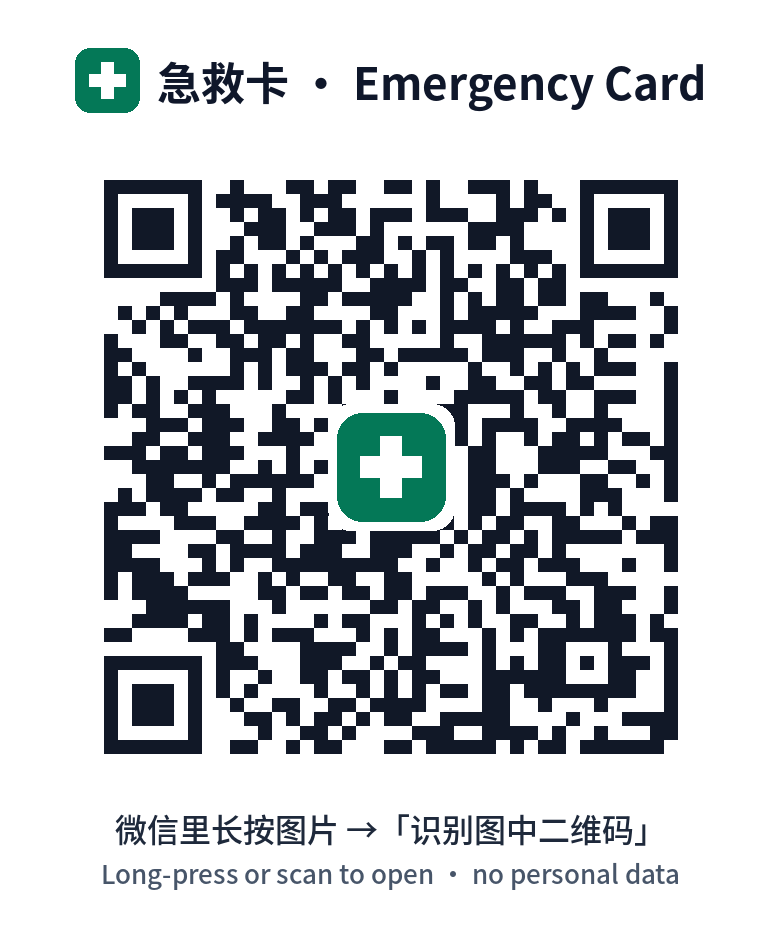

<!DOCTYPE html>
<html lang="zh-CN">
<head>
<meta charset="utf-8">
<meta name="viewport" content="width=device-width, initial-scale=1, viewport-fit=cover">
<meta name="theme-color" content="#F3F4F6" media="(prefers-color-scheme: light)">
<meta name="theme-color" content="#0B0F17" media="(prefers-color-scheme: dark)">
<link rel="canonical" href="https://jackyyhhxjyxn.github.io/emergency-card/">
<link rel="manifest" href="manifest.webmanifest">
<link rel="icon" href="icon-192.png">
<link rel="apple-touch-icon" href="apple-touch-icon.png">
<meta name="mobile-web-app-capable" content="yes">
<meta name="apple-mobile-web-app-capable" content="yes">
<meta name="apple-mobile-web-app-title" content="急救卡">
<meta name="description" content="急救卡 Emergency Card — 按所在国家自动切换急救电话与急救步骤（中文 / English）">
<title>急救卡 Emergency Card</title>
<script>
/* 在页面绘制前套用日/夜模式，避免闪烁 */
(function(){try{var m=localStorage.getItem("ec_theme");if(m==="light"||m==="dark")document.documentElement.setAttribute("data-theme",m)}catch(e){}})();
/* v0.11.0：外观定稿为 F 临床蓝，投票开关已去掉；清掉旧的外观选择记录 */
(function(){try{localStorage.removeItem("ec_look")}catch(e){}})();
</script>
<style>
/* ==========================================================================
   设计变量（v0.3.2-oc：借鉴 OpenCare ID 的临床分诊设计体系）
   日间 = 默认；夜间 = 跟随系统或手动切换（html[data-theme]）
   规则：正文与按钮文字不小于 17px；文字对比度不低于 4.5:1
   ========================================================================== */
:root{
  --bg-canvas:#F8FAFC; --bg-card:#FFFFFF; --bg-subtle:#F1F5F9;
  --border-card:#CBD5E1; --border-strong:#94A3B8;
  --crimson:#C81E1E; --crimson-fill:#DC2626; --crimson-press:#B91C1C; --crimson-soft:#FEF2F2; --crimson-border:#FECACA;
  --text-primary:#0F172A; --text-secondary:#334155; --text-muted:#475569;
  --emerald:#047857; --emerald-fill:#047857; --emerald-soft:#ECFDF5; --emerald-border:#A7F3D0;
  --amber:#92400E; --amber-soft:#FFFBEB; --amber-border:#FDE68A; --amber-bar:#D97706;
  --link:#1D4ED8; --on-fill:#FFFFFF;
  --shadow-sm:0 1px 2px rgba(15,23,42,.06); --shadow-md:0 4px 12px rgba(15,23,42,.08);
  --shadow-red:0 6px 16px rgba(220,38,38,.28);
  --radius-lg:14px; --radius-md:10px; --radius-sm:6px;
  --font-sans:-apple-system,BlinkMacSystemFont,"SF Pro Text","PingFang SC","Hiragino Sans GB","Microsoft YaHei","Noto Sans SC","Noto Sans CJK SC","Segoe UI",Roboto,sans-serif;
  --font-num:"DIN Alternate","DIN Next LT Pro","Bahnschrift","Roboto Condensed",-apple-system,BlinkMacSystemFont,"Segoe UI",sans-serif;
  --nav-h:64px; --fs:1; color-scheme:light;
}
@media (prefers-color-scheme:dark){:root:not([data-theme="light"]){
  --bg-canvas:#090D16; --bg-card:#111827; --bg-subtle:#1E293B;
  --border-card:#334155; --border-strong:#475569;
  --crimson:#F87171; --crimson-fill:#DC2626; --crimson-press:#B91C1C; --crimson-soft:rgba(239,68,68,.14); --crimson-border:rgba(239,68,68,.4);
  --text-primary:#F8FAFC; --text-secondary:#E2E8F0; --text-muted:#A3B1C6;
  --emerald:#34D399; --emerald-fill:#047857; --emerald-soft:rgba(16,185,129,.14); --emerald-border:rgba(16,185,129,.4);
  --amber:#FBBF24; --amber-soft:rgba(245,158,11,.14); --amber-border:rgba(245,158,11,.4); --amber-bar:#F59E0B;
  --link:#93C5FD; --shadow-sm:0 1px 3px rgba(0,0,0,.4); --shadow-md:0 6px 16px rgba(0,0,0,.5); --shadow-red:0 6px 16px rgba(0,0,0,.5);
  color-scheme:dark;
}}
:root[data-theme="dark"]{
  --bg-canvas:#090D16; --bg-card:#111827; --bg-subtle:#1E293B;
  --border-card:#334155; --border-strong:#475569;
  --crimson:#F87171; --crimson-fill:#DC2626; --crimson-press:#B91C1C; --crimson-soft:rgba(239,68,68,.14); --crimson-border:rgba(239,68,68,.4);
  --text-primary:#F8FAFC; --text-secondary:#E2E8F0; --text-muted:#A3B1C6;
  --emerald:#34D399; --emerald-fill:#047857; --emerald-soft:rgba(16,185,129,.14); --emerald-border:rgba(16,185,129,.4);
  --amber:#FBBF24; --amber-soft:rgba(245,158,11,.14); --amber-border:rgba(245,158,11,.4); --amber-bar:#F59E0B;
  --link:#93C5FD; --shadow-sm:0 1px 3px rgba(0,0,0,.4); --shadow-md:0 6px 16px rgba(0,0,0,.5); --shadow-red:0 6px 16px rgba(0,0,0,.5);
  color-scheme:dark;
}
*{box-sizing:border-box;-webkit-tap-highlight-color:transparent}
html{-webkit-text-size-adjust:100%}
body{margin:0;background:var(--bg-canvas);color:var(--text-primary);font:calc(17px * var(--fs))/1.5 var(--font-sans);-webkit-font-smoothing:antialiased;
  padding-top:var(--top-real,calc(56px + env(safe-area-inset-top)));
  padding-bottom:calc(var(--nav-h) + 84px + env(safe-area-inset-bottom))}
.wrap{max-width:600px;margin:0 auto;padding:0 14px}
button{font:inherit;color:inherit;cursor:pointer;border:0;background:none}
a{color:var(--link)}
:focus-visible{outline:3px solid var(--link);outline-offset:2px;border-radius:10px}
[hidden]{display:none!important}
h1:focus,h2:focus{outline:none}
.ic{width:24px;height:24px;flex:none;fill:none;stroke:currentColor;stroke-width:2;stroke-linecap:round;stroke-linejoin:round;vertical-align:middle}
.ic.s{width:20px;height:20px}

/* ---------- 顶栏 ---------- */
header.top{position:fixed;top:0;left:0;right:0;z-index:30;background:var(--bg-card);border-bottom:1px solid var(--border-card);
  box-shadow:var(--shadow-sm);padding-top:env(safe-area-inset-top)}
.bar{display:flex;align-items:center;gap:8px;min-height:56px}
.logo{width:30px;height:30px;flex:none;display:block}
.brand{font-weight:800;font-size:calc(19px * var(--fs));letter-spacing:.2px;flex:1;white-space:nowrap;overflow:hidden;text-overflow:ellipsis;display:flex;align-items:center;gap:8px;min-width:0}
.ibtn{min-height:44px;min-width:44px;padding:0 12px;border-radius:var(--radius-md);background:var(--bg-subtle);border:1px solid var(--border-card);
  display:inline-flex;align-items:center;justify-content:center;gap:6px;font-weight:700;font-size:calc(17px * var(--fs));white-space:nowrap;flex:none;color:var(--text-primary)}
.ibtn:active{transform:scale(.97)}

/* ---------- 底部四栏导航 ---------- */
nav.bnav{position:fixed;left:0;right:0;bottom:0;z-index:30;background:var(--bg-card);border-top:1px solid var(--border-card);
  box-shadow:0 -2px 10px rgba(0,0,0,.05);padding-bottom:env(safe-area-inset-bottom)}
.bnav-in{max-width:600px;margin:0 auto;min-height:var(--nav-h);display:grid;grid-template-columns:repeat(4,1fr);gap:4px;padding:4px 6px}
.tab{border-radius:var(--radius-md);color:var(--text-muted);font-size:calc(17px * var(--fs));font-weight:700;line-height:1.1;
  display:flex;flex-direction:column;align-items:center;justify-content:center;gap:3px;min-width:0;white-space:nowrap}
.tab .ic{width:22px;height:22px}
.tab[aria-current="page"]{background:var(--bg-subtle);color:var(--text-primary)}
/* v0.3.3：红色只留给"拨打"本身；呼救栏目只保留红色图标，不再整块变红 */
.tab.sos .ic{color:var(--crimson)}
body.sheet-on nav.bnav{display:none}

/* ---------- 呼叫栏（导航上方，任何页面一键拨打） ---------- */
.dock{position:fixed;left:0;right:0;z-index:45;bottom:var(--nav-real,calc(var(--nav-h) + env(safe-area-inset-bottom)));
  padding:10px 14px 8px;background:linear-gradient(color-mix(in srgb,var(--bg-canvas) 0%,transparent),var(--bg-canvas) 10px)}
body.sheet-on .dock{bottom:0;padding-bottom:calc(10px + env(safe-area-inset-bottom))}
.dock>*{max-width:572px;margin-left:auto;margin-right:auto}
.call{display:flex;align-items:center;gap:12px;text-decoration:none;background:var(--crimson-fill);color:var(--on-fill);
  border-radius:var(--radius-lg);padding:6px 6px 6px 16px;min-height:58px;box-shadow:var(--shadow-red)}
.call:active{background:var(--crimson-press);transform:scale(.99)}
.call>span:first-child{flex:1;min-width:0;display:flex;align-items:baseline;gap:12px}
.call .lbl{font-size:calc(17px * var(--fs));font-weight:700;line-height:1.25;white-space:nowrap;overflow:hidden;text-overflow:ellipsis;order:2;min-width:0}
.call .num{font-family:var(--font-num);font-size:calc(32px * var(--fs));font-weight:800;letter-spacing:1.5px;line-height:1;font-variant-numeric:tabular-nums;order:1;flex:none}
.call .ico{width:46px;height:46px;border-radius:11px;background:#FFFFFF;color:#DC2626;display:grid;place-items:center;flex:none}
.snav{display:grid;grid-template-columns:1fr 1.7fr;gap:10px;margin-bottom:10px}
.snav button{min-height:58px;border-radius:var(--radius-lg);font-size:calc(20px * var(--fs));font-weight:800;display:flex;align-items:center;justify-content:center;gap:4px}
.snav .pv{background:var(--bg-card);border:1.5px solid var(--border-strong)}
.snav .pv:disabled{opacity:.4}
.snav .nx{background:var(--text-primary);color:var(--bg-canvas)}

/* ---------- 卡片（临床卡片体系） ---------- */
.card{background:var(--bg-card);border:1px solid var(--border-card);border-radius:var(--radius-lg);padding:16px;margin-bottom:12px;box-shadow:var(--shadow-sm)}
.card.crit{border-left:5px solid var(--crimson-fill)}
.kick{font-size:calc(17px * var(--fs));font-weight:800;letter-spacing:.3px;color:var(--text-muted);display:flex;align-items:center;gap:6px;flex-wrap:wrap;line-height:1.3}
.kick.red{color:var(--crimson)}
.kick em{font-style:normal;font-family:var(--font-num);font-variant-numeric:tabular-nums;color:var(--crimson)}
.secH{font-size:calc(17px * var(--fs));font-weight:800;letter-spacing:.3px;color:var(--text-muted);margin:26px 4px 10px;display:flex;align-items:baseline;gap:8px;flex-wrap:wrap}
.secH b{color:var(--text-primary);font-size:calc(20px * var(--fs))}
.badge{display:inline-flex;align-items:center;gap:4px;font-size:calc(17px * var(--fs));font-weight:700;padding:1px 10px 1px 8px;border-radius:99px;white-space:nowrap;border:1px solid}
.badge .ic{width:16px;height:16px;stroke-width:2.6}
.badge.A{background:var(--emerald-soft);color:var(--emerald);border-color:var(--emerald-border)}
.badge.B{background:var(--amber-soft);color:var(--amber);border-color:var(--amber-border)}
.badge.C{background:var(--crimson-soft);color:var(--crimson);border-color:var(--crimson-border)}
.mut{color:var(--text-muted);font-size:calc(17px * var(--fs))}
.muted{color:var(--text-muted);font-size:calc(17px * var(--fs))}

/* ---------- 红色主信息块（借鉴 OpenCare 血型块的信息层级） ---------- */
.hrow{display:flex;align-items:stretch;justify-content:space-between;gap:14px}
.hinfo{flex:1;min-width:0;display:flex;flex-direction:column;gap:4px}
.place{font-size:calc(26px * var(--fs));font-weight:900;line-height:1.2;letter-spacing:-.2px;display:flex;align-items:center;gap:8px;word-break:break-word}
.place span[aria-hidden]{font-size:calc(26px * var(--fs))}
.meta{display:flex;flex-wrap:wrap;align-items:center;gap:6px 10px}
.tbtn{align-self:flex-start;min-height:44px;padding:0 2px;color:var(--link);font-weight:700;font-size:calc(17px * var(--fs));display:inline-flex;align-items:center;gap:2px;margin-top:2px}
.rblock{width:108px;min-height:108px;flex:none;border-radius:12px;background:var(--crimson-fill);color:var(--on-fill);text-decoration:none;
  display:flex;flex-direction:column;align-items:center;justify-content:center;gap:2px;padding:8px 6px;text-align:center;box-shadow:var(--shadow-red)}
a.rblock:active{background:var(--crimson-press);transform:scale(.98)}
.rblock .rk{font-size:calc(17px * var(--fs));font-weight:800;letter-spacing:.5px;line-height:1.15}
.rblock .rv{font-family:var(--font-num);font-size:calc(38px * var(--fs));font-weight:900;line-height:1.05;font-variant-numeric:tabular-nums;letter-spacing:1px;word-break:break-all}
.rblock .rv.long{font-family:var(--font-sans);font-size:calc(20px * var(--fs));letter-spacing:0;line-height:1.2}
.rblock .rc{display:flex;align-items:center;gap:4px;font-size:calc(17px * var(--fs));font-weight:700;opacity:.95;white-space:nowrap}
.rblock .rc svg{width:16px;height:16px}
.rblock.empty{background:var(--bg-subtle);color:var(--text-muted);border:1.5px dashed var(--border-strong);box-shadow:none}

/* ---------- v0.3.3 位置条（一行，取代首页大红块；拨打统一交给底部呼叫栏） ---------- */
.lcard{padding:10px 8px 10px 14px}
.lrow{display:flex;align-items:center;gap:12px}
.lflag{font-size:calc(32px * var(--fs));line-height:1;flex:none}
.linfo{flex:1;min-width:0}
.lname{font-size:calc(22px * var(--fs));font-weight:900;line-height:1.2;letter-spacing:-.2px;word-break:break-word}
.lmeta{display:flex;flex-wrap:wrap;align-items:center;gap:2px 8px;margin-top:2px}
.lrow .tbtn{align-self:center;margin:0;padding:0 8px;flex:none}

/* ---------- 两问分诊 ---------- */
.tri h1{font-size:calc(30px * var(--fs));line-height:1.22;margin:6px 0 4px;letter-spacing:.2px}
.tri p{margin:0 0 14px;color:var(--text-secondary)}
.tri-b{display:grid;grid-template-columns:1fr 1fr;gap:10px}
.big{min-height:96px;border-radius:var(--radius-lg);padding:12px;font-size:calc(22px * var(--fs));font-weight:800;line-height:1.2;
  display:flex;flex-direction:column;align-items:center;justify-content:center;gap:6px;text-align:center;transition:transform .08s}
.big small{font-size:calc(17px * var(--fs));font-weight:600;opacity:.95}
.big.no{background:var(--crimson-fill);color:var(--on-fill);box-shadow:var(--shadow-red)}
.big.no:active{background:var(--crimson-press)}
.big.yes{background:var(--bg-subtle);border:2px solid var(--border-strong);color:var(--text-primary)}
.big:active{transform:scale(.98)}
.link{color:var(--link);font-weight:700;min-height:48px;padding:0 2px;margin-top:6px;display:inline-flex;align-items:center;gap:4px}

/* ---------- 提示条 ---------- */
.note{display:flex;gap:10px;font-size:calc(17px * var(--fs));line-height:1.5;background:var(--amber-soft);border:1px solid var(--amber-border);border-left:4px solid var(--amber-bar);
  border-radius:var(--radius-md);padding:12px 14px;margin:0 0 12px;color:var(--text-primary)}
.note .ic{color:var(--amber);margin-top:2px}

/* ---------- 急救卡网格 ---------- */
.grid{display:grid;grid-template-columns:1fr 1fr;gap:10px}
.tile{background:var(--bg-card);border:1px solid var(--border-card);border-radius:var(--radius-lg);padding:14px;text-align:left;min-height:132px;
  display:flex;flex-direction:column;justify-content:flex-start;gap:12px;box-shadow:var(--shadow-sm)}
.tile:active{transform:scale(.98);border-color:var(--border-strong)}
.sg{width:44px;height:44px;border-radius:10px;background:var(--emerald-fill);color:#FFFFFF;display:grid;place-items:center;flex:none}
.sg .ic{width:26px;height:26px}
.tile b{font-size:calc(18px * var(--fs));line-height:1.3;display:block;font-weight:800}
.tile small{color:var(--text-muted);font-size:calc(17px * var(--fs));line-height:1.35;display:-webkit-box;-webkit-line-clamp:2;-webkit-box-orient:vertical;overflow:hidden;margin-top:2px}
.tile.top{grid-column:1/-1;background:var(--crimson-fill);border-color:var(--crimson-fill);color:var(--on-fill);flex-direction:row;align-items:center;min-height:92px;gap:16px;box-shadow:var(--shadow-red)}
.tile.top .sg{width:56px;height:56px;border-radius:14px;background:#FFFFFF;color:#DC2626}
.tile.top .sg .ic{width:32px;height:32px;stroke-width:2.2}
.tile.top b{font-size:calc(20px * var(--fs))}
.tile.top small{color:#FFFFFF;opacity:.95}
.tile.top .chev{margin-left:auto}
/* v0.9.0：ⓘ 说明折叠、待签审标记 */
details.ifo{margin-top:10px;border-top:1px solid var(--border-card)}
details.ifo summary{min-height:44px;display:flex;align-items:center;font-weight:700;color:var(--text-muted);cursor:pointer;list-style:none}
details.ifo summary::-webkit-details-marker{display:none}
details.ifo .ifb p{margin:0 0 8px}
details.ifo .ifb{padding-bottom:4px;color:var(--text-muted)}
.pend{display:inline-block;margin-top:4px;padding:1px 8px;border-radius:999px;border:1px solid #B45309;color:#B45309;font-style:normal;font-weight:800;font-size:calc(14px * var(--fs))}
.pendN{margin-top:10px;padding:8px 12px;border-radius:10px;border:1px solid #B45309;color:#B45309;font-weight:700}

/* ---------- 当地号码 ---------- */
.nums{display:grid;grid-template-columns:repeat(auto-fit,minmax(140px,1fr));gap:8px}
.n{display:flex;flex-direction:column;align-items:flex-start;justify-content:space-between;gap:2px;text-decoration:none;color:var(--text-primary);
  border:1px solid var(--border-card);border-radius:var(--radius-md);padding:10px 14px;min-height:64px;background:var(--bg-subtle)}
.n:active{border-color:var(--border-strong)}
.n span{font-size:calc(17px * var(--fs));color:var(--text-muted);line-height:1.25}
.n b{font-family:var(--font-num);font-size:calc(24px * var(--fs));font-weight:800;font-variant-numeric:tabular-nums;white-space:nowrap;letter-spacing:.5px}
.notes{margin:12px 0 0;padding:0;list-style:none;font-size:calc(17px * var(--fs))}
.notes li{padding-left:18px;position:relative;margin-top:8px}
.notes li:before{content:"";position:absolute;left:2px;top:.68em;width:7px;height:7px;border-radius:2px;background:var(--emerald-fill)}
.say{margin:0;padding:0;list-style:none;counter-reset:s}
.say li{counter-increment:s;display:flex;gap:12px;padding:10px 0;font-size:calc(17px * var(--fs));border-bottom:1px solid var(--border-card)}
.say li:last-child{border-bottom:0}
.say li:before{content:counter(s);flex:none;width:28px;height:28px;border-radius:99px;background:var(--crimson-fill);color:#FFFFFF;
  font-family:var(--font-num);font-weight:800;font-size:calc(17px * var(--fs));display:grid;place-items:center}
.btn{display:inline-flex;align-items:center;justify-content:center;gap:8px;min-height:54px;padding:0 16px;border-radius:var(--radius-md);
  background:var(--text-primary);color:var(--bg-canvas);font-weight:800;width:100%;margin-top:12px;text-decoration:none;text-align:center}
.btn:active{opacity:.9}
.btn.ghost{background:var(--bg-subtle);color:var(--text-primary);border:1px solid var(--border-strong)}
.btn.red{background:var(--crimson-fill);color:#FFFFFF}
.btn.grn{background:var(--emerald-fill);color:#FFFFFF}
/* v0.5.1 附近的急诊医院 */
.hosp .hb{display:grid;gap:10px;margin-top:4px}.hosp .hb .btn{margin-top:0}
.hosp .ht{font-size:calc(17px * var(--fs));line-height:1.5;color:var(--text-muted);margin:10px 0 0}
.hosp .hw{font-size:calc(17px * var(--fs));line-height:1.5;font-weight:700;margin:0 0 12px}
.hosp .hs{font-size:calc(17px * var(--fs));color:var(--text-muted);margin-top:8px;min-height:1em}
.hentry{margin:0 0 12px}.hentry .btn{margin-top:0}
.loc{font-family:var(--font-num);font-size:calc(24px * var(--fs));font-weight:800;font-variant-numeric:tabular-nums;margin:12px 0 2px;word-break:break-all;
  background:var(--bg-subtle);border:1px solid var(--border-card);border-radius:8px;padding:10px 12px}
.src{font-size:calc(17px * var(--fs));color:var(--text-muted);margin-top:14px;word-break:break-word}
details.srcd>summary{list-style:none;cursor:pointer;min-height:44px;display:inline-flex;align-items:center;gap:6px;color:var(--text-muted);font-weight:700}
details.srcd>summary::-webkit-details-marker{display:none}
details.srcd>summary:after{content:"›";font-size:1.3em;line-height:1;transition:transform .15s}
details.srcd[open]>summary:after{transform:rotate(90deg)}
details.srcd .srcb{padding:2px 0 4px}

/* ---------- 我的卡 ---------- */
.pname{font-size:calc(26px * var(--fs));font-weight:900;line-height:1.2;letter-spacing:-.2px;word-break:break-word}
.pname.ph{color:var(--text-muted);font-weight:700}
.fv{font-size:calc(22px * var(--fs));font-weight:700;line-height:1.35;margin-top:4px;word-break:break-word}
.fv.none{color:var(--text-muted);font-size:calc(17px * var(--fs));font-weight:600}
.frow{padding:10px 0;border-bottom:1px solid var(--border-card)}
.frow:last-child{border-bottom:0;padding-bottom:0}
.frow:first-child{padding-top:0}
.duo{display:grid;grid-template-columns:1fr 1fr;gap:12px;margin-bottom:12px}
.duo .card{margin:0}
@media (max-width:520px){.duo{grid-template-columns:1fr}}
label{display:block;font-size:calc(17px * var(--fs));font-weight:700;color:var(--text-secondary);margin-top:12px}
input,textarea{width:100%;font:inherit;font-weight:600;color:var(--text-primary);background:var(--bg-canvas);border:1px solid var(--border-strong);border-radius:9px;padding:12px;margin-top:4px;min-height:50px}
input:focus,textarea:focus{outline:2px solid var(--crimson-fill);outline-offset:0;border-color:var(--crimson-fill)}
.bgrid{display:grid;grid-template-columns:repeat(5,1fr);gap:6px;margin-top:6px}
.bchoice{min-height:46px;border-radius:8px;border:1px solid var(--border-strong);background:var(--bg-canvas);font-size:calc(17px * var(--fs));font-weight:800;color:var(--text-primary)}
.bchoice[aria-pressed="true"]{background:var(--crimson-fill);color:#FFFFFF;border-color:var(--crimson-fill)}
.tip{border-top:1px solid var(--border-card);padding-top:14px;margin-top:14px}
.tip b{display:flex;align-items:center;gap:8px;margin-bottom:6px}
.tip b .ic{color:var(--emerald)}
.tip p{margin:8px 0 0}
.ml{display:flex;gap:12px;align-items:flex-start}
.ml .ic{color:var(--crimson);margin-top:3px}
.ml b{display:block;font-size:calc(18px * var(--fs))}

/* ---------- 反馈 / 设置 ---------- */
.chips{display:flex;flex-wrap:wrap;gap:8px;margin-top:10px}
.chip2{min-height:46px;padding:0 16px;border-radius:99px;border:1px solid var(--border-strong);background:var(--bg-subtle);font-weight:700;font-size:calc(17px * var(--fs));color:var(--text-primary)}
.chip2[aria-pressed="true"]{background:var(--text-primary);color:var(--bg-canvas);border-color:var(--text-primary)}
.mlq{border:1px solid var(--crimson-border);background:var(--crimson-soft);border-radius:var(--radius-md);padding:12px 14px;margin-top:12px}
.mlq p{margin:6px 0 0}
.seg3{display:grid;grid-template-columns:repeat(3,1fr);gap:8px;margin-top:10px}
.seg3 button{min-height:50px;border-radius:var(--radius-md);border:2px solid var(--border-card);background:var(--bg-card);font-weight:800;font-size:calc(17px * var(--fs));display:flex;align-items:center;justify-content:center;gap:6px}
.seg3 button[aria-pressed="true"]{border-color:var(--crimson-fill);background:var(--crimson-soft)}
details.sl summary{min-height:48px;font-weight:800;cursor:pointer;display:flex;align-items:center}
.srcs{font-size:calc(17px * var(--fs));color:var(--text-muted);padding-left:26px;margin:8px 0 0}
.srcs li{margin-top:6px;word-break:break-word}
.srcs.ctl{list-style:none;padding-left:0}.srcs.ctl .badge{padding:0 8px}
.stag{display:inline-block;font-size:.85em;font-weight:700;line-height:1.35;padding:0 7px;border-radius:99px;border:1px solid var(--border-card);color:var(--text-muted);white-space:nowrap}
.stag.gov{color:var(--emerald);border-color:var(--emerald-border);background:var(--emerald-soft)}
.stag.guide{color:var(--link);border-color:currentColor}
.stag.other{color:var(--amber);border-color:var(--amber-border);background:var(--amber-soft)}
footer{font-size:calc(17px * var(--fs));color:var(--text-muted);margin:22px 4px 0;line-height:1.6}

/* ---------- 全屏层（急救步骤、选国家、首次确认） ---------- */
.sheet{position:fixed;inset:0;z-index:40;background:var(--bg-canvas);overflow:auto;display:none;padding-bottom:calc(var(--dock-real,190px) + 24px)}
.sheet.on{display:block}
.shead{position:sticky;top:0;background:var(--bg-card);border-bottom:1px solid var(--border-card);box-shadow:var(--shadow-sm);
  padding:calc(6px + env(safe-area-inset-top)) 14px 6px;margin:0 -14px;z-index:2;display:flex;align-items:center;gap:8px}
.shead .sp{flex:1}
.back,.chip{min-height:48px;padding:0 14px;border-radius:var(--radius-md);background:var(--bg-subtle);border:1px solid var(--border-card);font-weight:700;font-size:calc(17px * var(--fs));white-space:nowrap;
  display:inline-flex;align-items:center;gap:6px;color:var(--text-primary)}
.back{padding-left:8px}
.chip[aria-pressed="true"]{background:var(--crimson-fill);color:#FFFFFF;border-color:var(--crimson-fill)}
.seg{display:inline-flex;background:var(--bg-subtle);border:1px solid var(--border-card);border-radius:var(--radius-md);padding:3px;min-height:50px}
.seg span{display:inline-flex;align-items:center;padding:0 12px;border-radius:8px;font-weight:700;font-size:calc(17px * var(--fs));color:var(--text-muted);white-space:nowrap}
.seg.wide{display:flex;width:100%;margin-top:14px}
.seg.wide span{flex:1;justify-content:center}
.seg span.on{background:var(--bg-card);color:var(--text-primary);box-shadow:var(--shadow-sm);border:1px solid var(--border-card)}
.ttl{display:flex;align-items:center;gap:14px;margin:16px 0 6px}
.ttl .sg{width:52px;height:52px;border-radius:12px}
.ttl .sg .ic{width:30px;height:30px}
.ttl .sg.red{background:var(--crimson-fill)}
.sheet h1{font-size:calc(26px * var(--fs));line-height:1.22;margin:0;font-weight:900}
.when{background:var(--amber-soft);border:1px solid var(--amber-border);color:var(--text-primary);border-radius:var(--radius-md);padding:12px 14px;font-size:calc(17px * var(--fs));font-weight:700}
.status{display:flex;align-items:center;flex-wrap:wrap;gap:6px;color:var(--text-muted);font-size:calc(17px * var(--fs));margin-top:10px}
.status .ic{color:var(--emerald)}
.prog{display:flex;gap:4px;margin:16px 0 14px}
.prog i{flex:1;height:6px;border-radius:3px;background:var(--border-card)}
.prog i.d{background:var(--crimson-fill)}
.stepK{font-size:calc(17px * var(--fs));font-weight:800;color:var(--text-muted);font-variant-numeric:tabular-nums}
.stepTxt{font-size:calc(27px * var(--fs));line-height:1.4;font-weight:800;margin:6px 0 0;letter-spacing:.2px}
.stepTxt b{color:var(--crimson);font-family:var(--font-num);font-size:1.2em;font-variant-numeric:tabular-nums}
.fig{display:block;width:100%;max-width:360px;height:auto;margin:16px auto 2px;border-radius:12px;border:1px solid var(--border-card)}
details.dd{margin-top:16px;background:var(--bg-card);border:1px solid var(--border-card);border-left:5px solid var(--crimson-fill);border-radius:var(--radius-lg)}
details.dd summary{min-height:54px;padding:12px 16px;font-weight:800;color:var(--crimson);cursor:pointer;display:flex;align-items:center;gap:8px;list-style:none}
details.dd summary::-webkit-details-marker{display:none}
details.dd summary .chev{margin-left:auto;color:var(--text-muted);transition:transform .15s}
details.dd[open] summary .chev{transform:rotate(90deg)}
details.dd ul{margin:0;padding:0 16px 16px 38px}
details.dd li{margin-top:6px}
.steps{list-style:none;margin:16px 0 0;padding:0;counter-reset:st}
.steps li{counter-increment:st;display:flex;gap:14px;background:var(--bg-card);border:1px solid var(--border-card);border-radius:var(--radius-lg);
  padding:16px 14px;margin-bottom:8px;font-size:calc(18px * var(--fs));line-height:1.5;font-weight:600}
.steps li:before{content:counter(st);flex:none;width:34px;height:34px;border-radius:99px;background:var(--crimson-fill);color:#FFFFFF;
  font-family:var(--font-num);font-weight:800;font-size:calc(19px * var(--fs));display:grid;place-items:center}
.steps li>span{flex:1;min-width:0}
.steps li b{color:var(--crimson);font-family:var(--font-num)}
.dont{background:var(--crimson-soft);border:1px solid var(--crimson-border);border-left:5px solid var(--crimson-fill);border-radius:var(--radius-lg);padding:14px 16px;margin-top:12px}
.dont b{color:var(--crimson);display:flex;align-items:center;gap:8px;margin-bottom:4px}
.dont ul{margin:0;padding-left:22px}
.dont li{margin-top:4px}
.extra{background:var(--bg-card);border:1px solid var(--border-card);border-radius:var(--radius-lg);padding:14px 16px;margin-top:12px;font-size:calc(17px * var(--fs))}
.metro{display:flex;align-items:center;gap:14px;margin-top:12px;background:var(--bg-card);border:1px solid var(--border-card);border-radius:var(--radius-lg);padding:12px 12px 12px 14px}
.metro .ml{flex:1;font-weight:800;line-height:1.25;display:block}
.dot{width:48px;height:48px;border-radius:50%;background:var(--crimson-fill);flex:none;position:relative;display:grid;place-items:center;color:#fff}
.dot:after{content:"";position:absolute;inset:0;border-radius:50%;border:3px solid var(--crimson-fill);opacity:0}
.dot.beat{animation:pump .16s ease-out}
.dot.beat:after{animation:ring .5s ease-out}
@keyframes pump{from{transform:scale(1.14)}to{transform:scale(1)}}
@keyframes ring{from{opacity:.7;transform:scale(1)}to{opacity:0;transform:scale(1.7)}}

/* 首次确认国家 */
.cf{text-align:center;padding-top:calc(24px + env(safe-area-inset-top))}
.cf .mk{display:flex;align-items:center;justify-content:center;gap:8px;color:var(--text-muted);font-weight:700}
.cf .mk svg{width:26px;height:26px}
.cf .flag{width:104px;height:104px;margin:24px auto 14px;border-radius:50%;background:var(--bg-card);border:1px solid var(--border-card);box-shadow:var(--shadow-sm);display:grid;place-items:center;font-size:calc(56px * var(--fs));line-height:1}
.cf h1{font-size:calc(22px * var(--fs))!important;font-weight:700!important;color:var(--text-muted)}
.cf .cn{font-size:calc(32px * var(--fs));font-weight:900;line-height:1.2;margin:4px 0 14px}
.cf .rblock{margin:0 auto;width:132px;min-height:120px}
.cf p.muted{margin:16px 8px 6px}
.cf .btn{min-height:62px;font-size:calc(19px * var(--fs))}

.list{margin-top:10px;background:var(--bg-card);border:1px solid var(--border-card);border-radius:var(--radius-lg);overflow:hidden}
.opt{display:flex;justify-content:space-between;align-items:center;width:100%;min-height:58px;padding:12px 16px;border-bottom:1px solid var(--border-card);text-align:left;font-size:calc(18px * var(--fs));gap:10px}
.opt:last-child{border-bottom:0}
.opt:active{background:var(--bg-subtle)}
.opt b{font-family:var(--font-num);font-size:calc(20px * var(--fs));font-variant-numeric:tabular-nums;color:var(--crimson)}
.pickh{margin-top:14px!important}

/* ---------- v0.4.0：路人大字卡 / 锁屏图片 / 清除数据 ---------- */
.helpbtn{display:flex;align-items:center;gap:12px;width:100%;text-align:left;background:var(--bg-card);border:2px solid var(--crimson-fill);border-radius:var(--radius-lg);
  padding:14px;min-height:72px;margin:6px 0 12px;box-shadow:var(--shadow-sm);color:var(--text-primary)}
.helpbtn b{display:block;font-size:calc(20px * var(--fs));line-height:1.25}
.nfc{border-top:1px solid var(--border-card);padding:10px 0 4px;margin-top:8px}
.nfn{font-size:calc(18px * var(--fs));word-break:break-all}.nfn span{font-family:var(--font-num);font-variant-numeric:tabular-nums}
.nfb{display:flex;flex-wrap:wrap;gap:8px}.nfb .btn{flex:1 1 6em;width:auto;min-width:0;margin-top:8px;white-space:nowrap}.nfb .btn.nfp{flex:0 0 64px}
.nfloc{margin:6px 0 4px;font-weight:600}.nfloc.ok{color:var(--green,#0B7B55)}.nfloc.no{color:var(--crimson)}
#nfTxt{width:100%;box-sizing:border-box;font:inherit;font-size:calc(17px * var(--fs));line-height:1.45;padding:10px;border-radius:8px;border:1px solid var(--border-card);background:var(--bg-card);color:var(--text-primary);margin-top:6px}
.helpbtn small{display:block;color:var(--text-muted);font-size:calc(17px * var(--fs))}
.helpbtn .sg{background:var(--crimson-fill)}
.helpbtn .chev{margin-left:auto;color:var(--text-muted)}
.pb{margin-top:14px;background:#FFFFFF;color:#111111;border:4px solid #DC2626;border-radius:18px;padding:20px 18px;text-align:center}
.pb .pbl{font-size:calc(30px * var(--fs));line-height:1.3;font-weight:900;margin:0}
.pb .pbl+.pbl{margin-top:14px;padding-top:14px;border-top:2px solid #E5E7EB}
.pb .pbn{font-family:var(--font-num);font-size:calc(84px * var(--fs));line-height:1;font-weight:900;color:#B91C1C;letter-spacing:4px;margin:18px 0 6px;font-variant-numeric:tabular-nums;word-break:break-all}
.pb .pbc{font-size:calc(20px * var(--fs));font-weight:800;color:#374151}
.n.nolink{cursor:default}
.n .nh{font-size:calc(17px * var(--fs));color:var(--amber);font-weight:700}
.wallimg{display:block;width:100%;max-width:300px;margin:12px auto 0;border-radius:22px;border:1px solid var(--border-card);box-shadow:var(--shadow-md)}
.seg2{display:grid;grid-template-columns:1fr 1fr;gap:8px;margin-top:10px}
.seg2 button{min-height:50px;border-radius:var(--radius-md);border:2px solid var(--border-card);background:var(--bg-card);font-weight:800;font-size:calc(17px * var(--fs))}
.seg2 button[aria-pressed="true"]{border-color:var(--crimson-fill);background:var(--crimson-soft)}
.urlbox{font-family:var(--font-num);font-size:calc(17px * var(--fs));word-break:break-all;background:var(--bg-subtle);border:1px solid var(--border-card);border-radius:8px;padding:10px 12px;margin-top:10px}
.btn.warn{background:var(--bg-subtle);color:var(--crimson);border:1.5px solid var(--crimson-border)}
.btn.warn[data-armed="1"]{background:var(--crimson-fill);color:#FFFFFF;border-color:var(--crimson-fill)}


/* ---------- v0.4.1 ---------- */
.lp{margin:0 0 14px;padding:0 0 14px;border-bottom:2px solid #E5E7EB}
.lp .lpk{font-size:calc(17px * var(--fs));font-weight:800;color:#B91C1C;letter-spacing:.3px}
.lp .lpt{font-size:calc(34px * var(--fs));line-height:1.3;margin-top:6px}
.lp .lpr{font-size:calc(18px * var(--fs));color:#374151;margin-top:4px;font-style:italic}
.lp .lps{font-size:calc(15px * var(--fs));color:#4B5563;margin-top:8px;line-height:1.4;word-break:break-word}
.lp .lps a{color:#1D4ED8}
.mc{margin-top:14px;background:#FFFFFF;color:#111111;border:4px solid #DC2626;border-radius:18px;padding:6px 16px}
.mc .mcf{padding:14px 0;border-bottom:2px solid #E5E7EB}
.mc .mcf:last-child{border-bottom:0}
.mc .mcl{font-size:calc(22px * var(--fs));font-weight:900;line-height:1.3;word-break:break-word;color:#111111}
.mc .mcf.crit .mcl{color:#B91C1C}
.mc .mce{font-size:calc(15px * var(--fs));font-weight:700;color:#4B5563;margin-top:2px;line-height:1.35}
.mc .mcv{font-size:calc(26px * var(--fs));font-weight:800;line-height:1.35;margin-top:6px;word-break:break-word;white-space:pre-wrap}
.mc .mcv.bt{font-family:var(--font-num);font-size:calc(40px * var(--fs));font-weight:900;color:#B91C1C}
.mc .mcv.none{font-size:calc(17px * var(--fs));color:#6B7280;font-weight:600}
.mc a.btn{margin-top:10px}
.mcs{font-size:calc(15px * var(--fs));color:var(--text-muted);margin-top:10px;line-height:1.45;word-break:break-word}
.mcs .pend{display:inline-block;font-weight:800;color:#92400E;background:#FFFBEB;border:1px solid #FDE68A;border-radius:6px;padding:0 6px}
.lp .pend{display:inline-block;font-weight:800;color:#92400E;background:#FFFBEB;border:1px solid #FDE68A;border-radius:6px;padding:0 6px}
.about .vrow{display:flex;flex-wrap:wrap;gap:4px 14px;align-items:baseline;margin-top:4px}
.about .vrow b{font-size:calc(22px * var(--fs));font-family:var(--font-num)}
.about .vrow span{color:var(--text-muted)}
.diag{font-family:var(--font-num);line-height:1.6;word-break:break-all;padding-bottom:6px}
.seg4{display:grid;grid-template-columns:repeat(4,1fr);gap:6px;margin-top:8px}
.seg4 button{min-height:50px;border-radius:var(--radius-md);border:2px solid var(--border-card);background:var(--bg-card);font-weight:800;font-size:calc(16px * var(--fs));padding:0 4px;line-height:1.15}
.seg4 button[aria-pressed="true"]{border-color:var(--crimson-fill);background:var(--crimson-soft)}
.wallfull{position:fixed;inset:0;z-index:60;background:#000;display:flex;flex-direction:column;overflow:auto}
.wallfull .wfbar{display:flex;align-items:center;gap:10px;padding:calc(8px + env(safe-area-inset-top)) 12px 8px;background:#111827;color:#fff}
.wallfull img{display:block;width:100%;max-width:520px;margin:0 auto;height:auto}
html.bigtext .grid{grid-template-columns:1fr}
html.bigtext .tri-b{grid-template-columns:1fr}
html.bigtext .seg4{grid-template-columns:1fr 1fr}
html.bigtext .tab{font-size:17px}
html.bigtext .lrow{flex-wrap:wrap}
html.bigtext .lrow .tbtn{margin-left:auto}
html.bigtext .call .num{font-size:32px}
body{padding-bottom:calc(var(--nav-real,calc(var(--nav-h) + env(safe-area-inset-bottom))) + var(--dock-real,96px) + 16px)}

/* ---------- v0.4.3：安卓大字不重叠 ----------
   安卓（微信、各品牌自带浏览器、WebView）会按"系统/微信字体大小"直接放大文字，页面脚本读不到。
   做法：①布局本身可换行，任何字号都不叠；②用隐藏的“国”字实测真实放大倍数，≥1.12 加 bigtext，≥1.4 加 hugetext，≥1.7 加 maxtext；
   ③顶栏、底栏、呼叫栏的实际高度由脚本实测后写进 --top-real / --nav-real / --dock-real，不再写死。 */
#ecProbe{position:absolute;left:-9999px;top:0;visibility:hidden;pointer-events:none;font-family:var(--font-sans);font-size:calc(100px * var(--fs));line-height:1;white-space:nowrap;font-weight:400;letter-spacing:0}
main,.sheet,.dock{overflow-wrap:break-word}
.grid>*,.tri-b>*,.nums>*,.duo>*,.snav>*{min-width:0}
.tile b,.tile small,.big{overflow-wrap:anywhere}
#brand{min-width:0;overflow:hidden;text-overflow:ellipsis}
.lrow{flex-wrap:wrap;row-gap:4px}
.linfo{flex:1 1 9em}
.lname,.lmeta .mut{word-break:keep-all;overflow-wrap:anywhere}
/* 两个分诊按钮尽量并排（一屏内都看得到）；文字放大到 1.7 倍以上才上下排 */
html.bigtext:not(.maxtext) .tri-b{grid-template-columns:1fr 1fr}
html.bigtext .big{padding:10px 8px}
.lmeta .badge{max-width:100%;white-space:normal}
.lrow .tbtn{margin-left:auto}
.call>span:first-child{align-items:center}
html.bigtext .call .lbl{white-space:normal;display:-webkit-box;-webkit-line-clamp:2;-webkit-box-orient:vertical;line-height:1.2}
html.bigtext .shead{flex-wrap:wrap;row-gap:6px}
html.bigtext .shead .chip,html.bigtext .shead .back{white-space:normal;max-width:100%;text-align:left;line-height:1.2}
html.bigtext .seg span{white-space:normal;text-align:center;line-height:1.2;padding:4px 10px}
html.bigtext .nums{grid-template-columns:1fr}
html.bigtext .rblock{width:auto;min-width:108px;padding:8px 12px}
html.bigtext .rblock .rv{word-break:keep-all}
html.bigtext .bgrid{grid-template-columns:repeat(auto-fit,minmax(3.4em,1fr))}
html.bigtext .tab{line-height:1.05;padding:2px 0}
html.bigtext .tile small{-webkit-line-clamp:3}
html.bigtext .metro{flex-wrap:wrap}
html.bigtext .metro .chip{white-space:normal;max-width:100%;margin-left:auto}
html.hugetext .seg3,html.hugetext .seg2,html.hugetext .seg4,html.hugetext .snav{grid-template-columns:1fr}
html.hugetext .tab .ic{width:18px;height:18px}
html.hugetext .duo{grid-template-columns:1fr}
html.hugetext .ibtn{padding:0 8px}
@media (max-width:350px){.pb .pbl{font-size:calc(26px * var(--fs))}.pb .pbn{font-size:calc(68px * var(--fs))}}
@media (max-width:350px){.tri h1{font-size:calc(26px * var(--fs))}.big{font-size:calc(20px * var(--fs))}.stepTxt{font-size:calc(24px * var(--fs))}.call .num{font-size:calc(30px * var(--fs))}.seg span{padding:0 9px}.rblock{width:96px}.rblock .rv{font-size:calc(32px * var(--fs))}.place{font-size:calc(22px * var(--fs))}.tab{font-size:calc(15px * var(--fs))}.lname{font-size:calc(20px * var(--fs))}.lflag{font-size:calc(28px * var(--fs))}}
@media (prefers-reduced-motion:reduce){*{animation:none!important;transition:none!important}}
@media print{header.top,nav.bnav,.dock,.btn,.ibtn,.shead,#fb{display:none!important}body{background:#fff;padding:0}}

/* ---------- v0.6.0：帮别人呼救 / 发病时间 / 高危勾选 / 多档案 / 交接页 / 打印 ---------- */
.rkgrid{display:grid;grid-template-columns:1fr;gap:8px;margin-top:8px}
.rkc{min-height:50px;text-align:left;padding:10px 14px;border-radius:10px;border:1.5px solid var(--border-strong);background:var(--bg-canvas);font-weight:700;font-size:calc(17px * var(--fs));color:var(--text-primary);display:flex;align-items:center;gap:12px;line-height:1.3}
.rkc:before{content:"";width:22px;height:22px;border-radius:6px;border:2px solid var(--border-strong);flex:none;background:var(--bg-card)}
.rkc[aria-pressed="true"]{border-color:var(--crimson-fill);background:var(--crimson-soft)}
.rkc[aria-pressed="true"]:before{background:var(--crimson-fill);border-color:var(--crimson-fill);box-shadow:inset 0 0 0 3px var(--bg-card)}
.rkl{list-style:none;margin:6px 0 0;padding:0}
.rkl li{padding:8px 0;border-bottom:1px solid var(--border-card)}
.rkl li:last-child{border-bottom:0}
.rkl b{display:block;font-size:calc(20px * var(--fs));line-height:1.3;word-break:break-word}
.rkl span{display:block;color:var(--text-muted);font-size:calc(17px * var(--fs));line-height:1.35}
.mc .rkl li{border-bottom-color:#E5E7EB}.mc .rkl b{color:#B91C1C;font-size:calc(24px * var(--fs))}.mc .rkl span{color:#4B5563}
.idacts{display:grid;gap:8px;margin:0 0 12px}.idacts .btn{margin-top:0}
.pfbar .chips{margin-top:8px}
.brbox{font-family:ui-monospace,Menlo,Consolas,monospace;font-weight:800;font-size:calc(18px * var(--fs));background:var(--bg-subtle);border:1px solid var(--border-card);border-radius:8px;padding:10px 12px;margin-top:10px;white-space:pre-wrap;word-break:break-word;line-height:1.45}
.ho .kick{gap:8px}
.hon{display:inline-grid;place-items:center;width:28px;height:28px;border-radius:99px;background:var(--text-primary);color:var(--bg-canvas);font-family:var(--font-num);font-weight:800;font-size:calc(17px * var(--fs));flex:none}
.ho.crit .hon{background:var(--crimson-fill);color:#FFFFFF}
.tmr{display:flex;gap:12px;align-items:center;justify-content:space-between;flex-wrap:wrap;padding:12px 0;border-bottom:1px solid var(--border-card)}
.tmr:first-child{padding-top:0}.tmr:last-child{border-bottom:0;padding-bottom:0}
.tml{flex:1 1 170px;min-width:0}
.tml b{display:block;line-height:1.3}
.tmv{font-family:var(--font-num);font-size:calc(36px * var(--fs));font-weight:900;font-variant-numeric:tabular-nums;line-height:1.1;margin-top:2px}
.tmv.none{font-family:var(--font-sans);font-size:calc(17px * var(--fs));color:var(--text-muted);font-weight:600}
.tma{color:var(--crimson);font-weight:800;font-variant-numeric:tabular-nums;font-size:calc(17px * var(--fs))}
.tmb{display:flex;flex-direction:column;gap:6px;flex:1 1 130px;max-width:100%;min-width:0}
.tmb .btn{margin:0;min-height:50px}
.tmset{margin:0;font-size:calc(17px * var(--fs))}
.tmset input{min-height:44px;padding:6px 8px;margin-top:2px;min-width:0;max-width:100%;width:100%;font-size:calc(17px * var(--fs))}
.note.red{background:var(--crimson-soft);border-color:var(--crimson-border);border-left-color:var(--crimson-fill)}
.note.red .ic{color:var(--crimson)}
.hlc{font-size:calc(22px * var(--fs));font-weight:900;line-height:1.3;margin:12px 0 4px;display:flex;align-items:flex-start;gap:8px;color:var(--text-primary)}
.hlc .ic{color:var(--crimson);margin-top:4px}
.prv{overflow-x:auto;background:var(--bg-subtle);border:1px solid var(--border-card);border-radius:12px;padding:12px;-webkit-overflow-scrolling:touch}
/* 打印件：固定白底黑字 */
.wcard{display:flex;flex-wrap:wrap;gap:4mm;color:#111;font-family:var(--font-sans);-webkit-print-color-adjust:exact;print-color-adjust:exact}
.wface{width:85.6mm;height:54mm;border:0.3mm dashed #6B7280;border-radius:3mm;background:#fff;color:#111;padding:2.5mm 3mm;overflow:hidden;position:relative;font-size:7pt;line-height:1.28;box-sizing:border-box;flex:none}
.wface .wh{background:#B91C1C;color:#fff;font-weight:800;font-size:7.5pt;padding:1mm 3mm;margin:-2.5mm -3mm 1.5mm;letter-spacing:.3px;display:flex;justify-content:space-between;align-items:center;gap:2mm;min-height:5.5mm;box-sizing:border-box}
.wname{font-size:11pt;font-weight:900;line-height:1.2;min-height:4mm}
.wbt{background:#fff;color:#B91C1C;font-weight:900;font-size:10pt;line-height:1.1;padding:0 1.5mm;border-radius:1mm;font-family:var(--font-num);letter-spacing:0}
.wrk{font-weight:800;color:#B91C1C;margin-top:.6mm}
.wl{font-weight:700;color:#4B5563}
.wt{margin-top:.8mm;word-break:break-word;margin-right:0}
.wqr{position:absolute;right:3mm;bottom:5mm;width:19mm;height:19mm}
.wqr svg,.fqr svg{width:100%;height:100%;display:block}
.wqrc{position:absolute;right:23mm;bottom:5mm;width:30mm;font-size:6pt;color:#4B5563;text-align:right}
.wdate{position:absolute;left:3mm;bottom:1.2mm;font-size:5.5pt;color:#6B7280}
.fsheet{width:100%;max-width:186mm;background:#fff;color:#111;padding:6mm;font-size:11pt;line-height:1.4;border:0.3mm solid #D1D5DB;box-sizing:border-box;font-family:var(--font-sans);-webkit-print-color-adjust:exact;print-color-adjust:exact}
.fh{display:flex;justify-content:space-between;align-items:baseline;gap:8px;flex-wrap:wrap;border-bottom:1mm solid #B91C1C;padding-bottom:2mm}
.fh b{font-size:14pt;color:#B91C1C}.fh span{font-size:9pt;color:#4B5563}
.fname{font-size:18pt;font-weight:900;margin-top:3mm}
.fbt{display:inline-block;border:0.6mm solid #B91C1C;color:#B91C1C;border-radius:1.5mm;padding:0 2mm;font-size:15pt}
.frk{margin-top:3mm;border:0.5mm solid #B91C1C;border-radius:2mm;padding:2mm 3mm;color:#7F1D1D}
.frk .fk{font-weight:800;color:#B91C1C}
.fr{display:grid;grid-template-columns:42mm 1fr;gap:3mm;border-bottom:0.2mm solid #D1D5DB;padding:2mm 0;break-inside:avoid}
.fk{font-weight:800;color:#374151;font-size:9.5pt;line-height:1.3}
.fv2{font-weight:700;white-space:pre-wrap;word-break:break-word}
.famb{display:flex;justify-content:space-between;align-items:center;gap:4mm;margin-top:3mm;background:#FEF2F2;border:0.4mm solid #FECACA;border-radius:2mm;padding:2mm 3mm}
.famb b{font-family:var(--font-num);font-size:24pt;color:#B91C1C}
.fqrw{display:flex;align-items:center;gap:3mm;margin-top:3mm;font-size:9pt;color:#4B5563}.fqr{width:22mm;height:22mm;flex:none}
.ffoot{margin-top:3mm;font-size:9pt;color:#4B5563}
.fstk{display:flex;align-items:center;gap:4mm;width:95mm;max-width:100%;margin-top:6mm;border:1mm solid #047857;border-radius:4mm;padding:4mm;background:#fff;color:#111;break-inside:avoid;box-sizing:border-box;-webkit-print-color-adjust:exact;print-color-adjust:exact}
.fstk svg{width:16mm;height:16mm;flex:none}.fstk b{display:block;font-size:13pt;line-height:1.25}.fstk small{display:block;color:#4B5563;font-size:8pt;margin-top:1mm}
#printArea{display:none}
@page{size:A4;margin:12mm}
@media print{
  html.printing body>*:not(#printArea){display:none!important}
  html.printing #printArea{display:block!important}
  html.printing body{padding:0!important;margin:0!important;background:#fff!important}
  html.printing .wcard{margin-bottom:6mm}
  html.printing .wface,html.printing .fstk{break-inside:avoid}
  html.printing .fsheet{border:0;padding:0;max-width:none}
}

/* ==========================================================================
   v0.9.1 视觉层（只改外观，不改功能、不改医学文字）
   - 更轻的边框、更柔和的分层阴影、更大的圆角
   - 急救卡图标按类别着色（浅色底 + 深色图标），一眼分辨
   - 顶栏、底栏毛玻璃；呼叫栏渐变红
   - 规则不变：正文与按钮文字 ≥17px；文字对比度 ≥4.5:1；红色实心只用于"拨打"和最危急入口
   ========================================================================== */
:root{
  --bg-canvas:#F3F4F6; --bg-subtle:#F1F5F9; --border-card:#E2E8F0; --border-strong:#94A3B8;
  --hair:rgba(15,23,42,.08);
  --shadow-sm:0 1px 2px rgba(15,23,42,.05),0 2px 10px -2px rgba(15,23,42,.06);
  --shadow-md:0 2px 4px rgba(15,23,42,.04),0 12px 28px -8px rgba(15,23,42,.14);
  --shadow-red:0 1px 0 rgba(255,255,255,.18) inset,0 10px 24px -8px rgba(185,28,28,.55);
  --radius-lg:18px; --radius-md:12px;
  --red-grad:linear-gradient(180deg,#DC2626 0%,#B91C1C 100%);
  --glass:rgba(255,255,255,.94); --seg-bg:#E5E8EC;
  /* 类别色：图标色 / 浅底（图标对浅底对比度均 ≥4.5:1） */
  --h-rose:#BE123C; --h-rose-bg:#FFE4E6;
  --h-sky:#0369A1;  --h-sky-bg:#E0F2FE;
  --h-vio:#6D28D9;  --h-vio-bg:#EDE9FE;
  --h-red:#B91C1C;  --h-red-bg:#FEE2E2;
  --h-amb:#B45309;  --h-amb-bg:#FEF3C7;
  --h-org:#C2410C;  --h-org-bg:#FFEDD5;
  --h-teal:#0F766E; --h-teal-bg:#CCFBF1;
}
@media (prefers-color-scheme:dark){:root:not([data-theme="light"]){
  --bg-canvas:#0B0F17; --border-card:#253044; --hair:rgba(255,255,255,.08); --glass:rgba(17,24,39,.94); --seg-bg:#1E293B;
  --shadow-sm:0 1px 2px rgba(0,0,0,.5); --shadow-md:0 12px 28px -8px rgba(0,0,0,.7); --shadow-red:0 10px 24px -8px rgba(0,0,0,.7);
  --h-rose:#FDA4AF; --h-rose-bg:rgba(244,63,94,.18); --h-sky:#7DD3FC; --h-sky-bg:rgba(14,165,233,.18);
  --h-vio:#C4B5FD; --h-vio-bg:rgba(139,92,246,.2); --h-red:#FCA5A5; --h-red-bg:rgba(239,68,68,.18);
  --h-amb:#FCD34D; --h-amb-bg:rgba(245,158,11,.18); --h-org:#FDBA74; --h-org-bg:rgba(249,115,22,.18);
  --h-teal:#5EEAD4; --h-teal-bg:rgba(20,184,166,.18);
}}
:root[data-theme="dark"]{
  --bg-canvas:#0B0F17; --border-card:#253044; --hair:rgba(255,255,255,.08); --glass:rgba(17,24,39,.94); --seg-bg:#1E293B;
  --shadow-sm:0 1px 2px rgba(0,0,0,.5); --shadow-md:0 12px 28px -8px rgba(0,0,0,.7); --shadow-red:0 10px 24px -8px rgba(0,0,0,.7);
  --h-rose:#FDA4AF; --h-rose-bg:rgba(244,63,94,.18); --h-sky:#7DD3FC; --h-sky-bg:rgba(14,165,233,.18);
  --h-vio:#C4B5FD; --h-vio-bg:rgba(139,92,246,.2); --h-red:#FCA5A5; --h-red-bg:rgba(239,68,68,.18);
  --h-amb:#FCD34D; --h-amb-bg:rgba(245,158,11,.18); --h-org:#FDBA74; --h-org-bg:rgba(249,115,22,.18);
  --h-teal:#5EEAD4; --h-teal-bg:rgba(20,184,166,.18);
}
body{letter-spacing:.1px}

/* 顶栏 / 底栏：毛玻璃 */
header.top,nav.bnav,.shead{background:var(--bg-card);background:var(--glass);-webkit-backdrop-filter:saturate(180%) blur(18px);backdrop-filter:saturate(180%) blur(18px);box-shadow:none}
header.top{border-bottom:1px solid var(--hair)}
nav.bnav{border-top:1px solid var(--hair);box-shadow:none}
.logo{border-radius:9px;box-shadow:0 2px 6px -1px rgba(4,120,87,.45)}
.brand{font-weight:800;letter-spacing:.4px}
.ibtn{border-radius:12px;border-color:var(--hair)}
.tab{font-weight:600;gap:4px;border-radius:14px}
.tab[aria-current="page"]{background:var(--bg-subtle);color:var(--text-primary);font-weight:800}
.tab[aria-current="page"] .ic{stroke-width:2.4}

/* 呼叫栏：渐变红 + 白色电话键 */
.dock{background:linear-gradient(color-mix(in srgb,var(--bg-canvas) 0%,transparent),var(--bg-canvas) 14px)}
.call{background:var(--red-grad);border-radius:20px;padding:7px 7px 7px 18px;box-shadow:var(--shadow-red)}
.call:active{background:var(--crimson-press)}
.call .lbl{font-weight:700;opacity:.98}
.call .ico{border-radius:14px;box-shadow:0 2px 6px rgba(127,29,29,.35)}
.snav button{border-radius:18px}
.snav .pv{border:1px solid var(--border-strong);background:var(--bg-card)}
.snav .nx{box-shadow:var(--shadow-md)}

/* 卡片：更轻的边框 + 分层阴影 */
.card,.tile,.helpbtn,.steps li,.extra,.metro,.list,details.dd{border:1px solid var(--hair);box-shadow:var(--shadow-sm)}
.card{border-radius:20px;padding:18px}
.card.crit{border-left:1px solid var(--hair);position:relative;overflow:hidden}
.card.crit:before{content:"";position:absolute;left:0;top:0;bottom:0;width:5px;background:var(--red-grad)}
.secH{margin:30px 4px 12px;color:var(--text-muted)}
.secH b{font-weight:800;letter-spacing:.3px}
.kick{font-weight:700;letter-spacing:.4px}

/* 位置条 */
.lcard{padding:12px 10px 12px 12px}
.lflag{width:1.5em;height:1.5em;border-radius:50%;background:var(--seg-bg);display:grid;place-items:center;font-size:calc(28px * var(--fs))}
.lname{font-weight:800}
.badge{font-weight:600}

/* 两问分诊 */
.tri h1{font-weight:800;letter-spacing:.3px}
.big{border-radius:18px;font-weight:800}
.big.no{background:var(--red-grad);box-shadow:var(--shadow-red)}
.big.yes{background:var(--bg-card);border:1.5px solid var(--border-strong);box-shadow:var(--shadow-sm)}

/* 帮别人 / 通知家人：白卡 + 红色浅底图标（不再整圈红框） */
.helpbtn{border-radius:20px;padding:16px;gap:14px;margin:0 0 12px}
.helpbtn .sg{background:var(--h-red-bg);color:var(--h-red);border-radius:14px}
.helpbtn b{font-weight:800}
.helpbtn:active{transform:scale(.99);box-shadow:none}

/* 急救卡网格：类别色图标 */
.grid{gap:12px}
.tile{border-radius:20px;padding:16px 14px 14px;gap:14px;transition:transform .08s}
.tile b{font-weight:800;letter-spacing:.2px}
.tile .sg{width:46px;height:46px;border-radius:14px;background:var(--h-teal-bg);color:var(--h-teal)}
.tile .sg .ic{stroke-width:2.2}
[data-card="heart"] .sg,[data-card="icpr"] .sg{background:var(--h-rose-bg);color:var(--h-rose)}
[data-card="choke"] .sg,[data-card="ichoke"] .sg{background:var(--h-sky-bg);color:var(--h-sky)}
[data-card="stroke"] .sg,[data-card="seiz"] .sg,[data-card="unc"] .sg{background:var(--h-vio-bg);color:var(--h-vio)}
[data-card="bleed"] .sg{background:var(--h-red-bg);color:var(--h-red)}
[data-card="ana"] .sg{background:var(--h-amb-bg);color:var(--h-amb)}
[data-card="burn"] .sg,[data-card="heat"] .sg{background:var(--h-org-bg);color:var(--h-org)}
[data-card="poison"] .sg{background:var(--h-teal-bg);color:var(--h-teal)}
.tile.top{background:var(--red-grad);border-color:transparent;border-radius:22px;padding:18px 16px;box-shadow:var(--shadow-red)}
.tile.top .sg{background:#FFFFFF;color:#DC2626;border-radius:16px}
.pend{border-radius:8px;background:var(--amber-soft);border-color:var(--amber-border);color:var(--amber);padding:1px 8px;font-weight:700}

/* 号码、按钮、提示 */
.n{border:1px solid var(--hair);border-radius:14px;background:var(--bg-subtle)}
.btn{border-radius:14px;font-weight:700;letter-spacing:.3px}
.btn.red{background:var(--red-grad);box-shadow:var(--shadow-red)}
.btn.grn{background:linear-gradient(180deg,#059669 0%,#047857 100%)}
.btn:not(.ghost):not(.warn){box-shadow:var(--shadow-sm)}
.btn.red{box-shadow:var(--shadow-red)}
.note{border-radius:14px;border-left-width:4px}
.urlbox{border-radius:12px;border-color:var(--hair)}
details.ifo summary{font-weight:600}
input,textarea{border-radius:12px}
.chip2,.seg3 button,.seg2 button,.seg4 button,.bchoice,.rkc{border-radius:12px}
.chip2{border-radius:99px}

/* 全屏步骤页 */
.shead{border-bottom:1px solid var(--hair)}
.back,.chip{border-radius:12px;border-color:var(--hair);background:var(--bg-card);box-shadow:var(--shadow-sm)}
.seg{border-radius:14px;border-color:transparent;background:var(--seg-bg)}
.seg span{border-radius:10px}
.seg span.on{border-color:transparent;box-shadow:var(--shadow-sm)}
.ttl .sg{border-radius:16px;box-shadow:0 4px 12px -4px rgba(4,120,87,.5)}
.ttl .sg.red{background:var(--red-grad);box-shadow:var(--shadow-red)}
.sheet h1{font-weight:800}
.when{border-radius:14px;font-weight:600}
.prog{gap:5px}
.prog i{height:5px;border-radius:99px}
.prog i.d{background:var(--red-grad)}
.stepTxt{font-weight:700;letter-spacing:.3px}
details.dd{border-radius:16px;border-left:4px solid var(--crimson-fill)}
.steps li{border-radius:16px;font-weight:500}
.steps li:before{background:var(--red-grad)}
.dont{border-radius:16px;border-left-width:4px}
.extra,.metro{border-radius:16px}
.fig{border-radius:16px;border-color:var(--hair)}

/* 首次确认国家 */
.cf .flag{box-shadow:var(--shadow-md);border-color:var(--hair)}
.cf .cn{font-weight:800}
.rblock{background:var(--red-grad);border-radius:20px}
.rblock.empty{background:var(--bg-subtle)}

/* 分享二维码（v0.9.1） */
.qrw{margin:14px auto 2px;text-align:center}
.qrw img{display:block;width:100%;max-width:260px;height:auto;margin:0 auto;border-radius:16px;border:1px solid var(--hair);box-shadow:var(--shadow-md);background:#FFFFFF;-webkit-touch-callout:default;-webkit-user-select:auto;user-select:auto}
.qrw figcaption{margin-top:10px;color:var(--text-secondary);font-weight:600;font-size:calc(17px * var(--fs));line-height:1.45}
@media print{.qrw{display:none}}

/* ===================== v0.10.0：Pro 设计移植 ===================== */
/* ① 国家未确认：呼叫栏旁“未确认”，位置卡内就地确认 */
.callrow{display:flex;gap:8px;align-items:stretch}
.callrow .call{flex:1 1 auto;min-width:0}
.ucf{flex:none;min-width:76px;max-width:34%;padding:4px 8px;border-radius:var(--radius-lg);background:var(--amber-soft);border:2px solid var(--amber-bar);color:var(--amber);
  font-weight:800;font-size:calc(17px * var(--fs));line-height:1.15;display:flex;flex-direction:column;align-items:center;justify-content:center;gap:2px;text-align:center;box-shadow:var(--shadow-sm)}
.ucf .ic{width:20px;height:20px}
body:not(.sheet-on) .dock .ucf{background:var(--bg-card)}
.lcard.unconf{border:2px solid var(--amber-bar)}
.ucfrow{display:flex;flex-wrap:wrap;align-items:center;gap:8px 10px;margin-top:10px;padding:10px 12px;border-radius:var(--radius-md);background:var(--amber-soft);color:var(--amber);font-weight:700;line-height:1.35}
.ucfrow>span{flex:1 1 12em;min-width:0}
.ucfrow .btn{margin:0;min-height:48px;width:auto;flex:none;padding:0 16px}
/* ② 首页三按钮横排 */
.qa3{display:grid;grid-template-columns:repeat(3,minmax(0,1fr));gap:10px;margin:0 0 12px}
.qa{display:flex;flex-direction:column;align-items:center;justify-content:flex-start;gap:8px;min-height:104px;padding:14px 6px 12px;background:var(--bg-card);
  border:1px solid var(--border-card);border-radius:18px;text-align:center;box-shadow:var(--shadow-sm)}
.qa:active{transform:scale(.98);box-shadow:none}
.qa .sg{width:44px;height:44px;border-radius:14px;background:var(--h-red-bg);color:var(--h-red)}
.qa b{font-size:calc(17px * var(--fs));line-height:1.25;font-weight:800;overflow-wrap:anywhere}
html.hugetext .qa3{grid-template-columns:1fr}
html.hugetext .qa{flex-direction:row;min-height:64px;padding:10px 14px;text-align:left}
/* ③ 分类标签 */
.cats{display:flex;flex-wrap:wrap;gap:8px;margin:0 0 12px}
.cat{flex:none;min-height:44px;padding:0 14px;border-radius:99px;background:var(--bg-card);border:1px solid var(--border-card);font-weight:700;font-size:calc(17px * var(--fs));white-space:nowrap}
.cat[aria-pressed="true"]{background:var(--text-primary);color:var(--bg-canvas);border-color:var(--text-primary)}
.cat[data-cat="life"][aria-pressed="true"]{background:var(--crimson-fill);border-color:var(--crimson-fill);color:#FFFFFF}
/* ④ 我的卡：功能按钮在医疗卡底部 */
.idacts.in{margin:14px 0 0;padding-top:14px;border-top:1px solid var(--border-card)}
#idBox .pfbar{margin-top:4px}
/* ⑤ 步骤卡片 + 按压计时 + 滑动 */
.stepcard{background:var(--bg-card);border:1px solid var(--border-card);border-radius:20px;padding:16px 16px 18px;box-shadow:var(--shadow-md)}
.stepcard .stepK{display:flex;align-items:center;gap:10px}
.stepcard .sn{width:36px;height:36px;border-radius:99px;background:var(--crimson-fill);color:#FFFFFF;display:grid;place-items:center;font-family:var(--font-num);font-size:calc(19px * var(--fs));flex:none}
.stepcard .stepTxt{margin-top:10px}
.stepcard svg:not(.ic){max-width:100%;height:auto}
.ctime{display:block;margin-top:2px;font-weight:700;color:var(--text-muted)}
.ctime b{font-family:var(--font-num);font-variant-numeric:tabular-nums;color:var(--text-primary);font-size:calc(22px * var(--fs));letter-spacing:.5px}
.swh{margin-left:auto;color:var(--text-muted);font-weight:600;font-size:calc(17px * var(--fs));white-space:nowrap}
html.hugetext .swh{display:none}
@keyframes swR{from{opacity:.2;transform:translateX(28px)}to{opacity:1;transform:none}}
@keyframes swL{from{opacity:.2;transform:translateX(-28px)}to{opacity:1;transform:none}}
.in-r{animation:swR .18s ease-out}.in-l{animation:swL .18s ease-out}
/* v0.10.1：320 宽 + 英文 + 特大字不再横向滚动（“外观”三按钮太宽）。网格列允许缩到 0，文字可换行；窄屏大字改竖排 */
.seg3{grid-template-columns:repeat(3,minmax(0,1fr))}
.seg3 button,.seg2 button,.seg4 button{min-width:0;flex-wrap:wrap;text-align:center;overflow-wrap:anywhere;line-height:1.2;padding:4px 6px}
@media (max-width:360px){html.bigtext .seg3{grid-template-columns:1fr}}
/* ===================== v0.11.0：外观定稿 F「临床蓝」 =====================
   规则：白底平面卡片（不做水珠）；品牌蓝 #1D4ED8 用于操作按钮、入口格子、选中状态和链接；
   红色只用于“呼叫”和“危险”；琥珀 = 未确认，绿色 = 官方来源 / 联系家人（含义不变）。
   主蓝特意不用 NHS 蓝 #005EB8，避免被误认为 NHS 官方产品。文字对比度均 ≥4.5:1（见更新说明） */
:root{
  --brand:#1D4ED8; --brand-press:#1E40AF; --brand-tint:#EFF6FF; --brand-border:#BFDBFE; --brand-text:#1D4ED8;
  --bg-canvas:#F1F5F9; --border-card:#E2E8F0;
  --tile-a:#1D4ED8; --tile-b:#1E40AF;
}
@media (prefers-color-scheme:dark){:root:not([data-theme="light"]){
  --brand:#1D4ED8; --brand-press:#1E40AF; --brand-tint:rgba(59,130,246,.16); --brand-border:rgba(147,197,253,.45); --brand-text:#93C5FD;
  --bg-canvas:#0B1120; --bg-card:#111C2E; --bg-subtle:#1B2A42; --border-card:#22324D; --hair:rgba(148,163,184,.18);
  --glass:rgba(17,28,46,.94); --seg-bg:#1B2A42; --text-muted:#BAC6D8; --link:#93C5FD;
  --tile-a:#1E40AF; --tile-b:#1E3A8A;
}}
:root[data-theme="dark"]{
  --brand:#1D4ED8; --brand-press:#1E40AF; --brand-tint:rgba(59,130,246,.16); --brand-border:rgba(147,197,253,.45); --brand-text:#93C5FD;
  --bg-canvas:#0B1120; --bg-card:#111C2E; --bg-subtle:#1B2A42; --border-card:#22324D; --hair:rgba(148,163,184,.18);
  --glass:rgba(17,28,46,.94); --seg-bg:#1B2A42; --text-muted:#BAC6D8; --link:#93C5FD;
  --tile-a:#1E40AF; --tile-b:#1E3A8A;
}
/* 普通操作按钮：品牌蓝白字（原来是深色/夜间白色） */
.btn{background:var(--brand);color:#FFFFFF}
.btn:not(.red):not(.grn):not(.ghost):not(.warn):active{background:var(--brand-press)}
.btn.ghost{background:var(--bg-card);color:var(--brand-text);border:1.5px solid var(--brand-border)}
/* 选中状态：蓝色（以前是红色）。高危情况勾选（.rkc）仍是红色 */
.seg3 button[aria-pressed="true"],.seg2 button[aria-pressed="true"],.seg4 button[aria-pressed="true"]{border-color:var(--brand);background:var(--brand-tint)}
.bchoice[aria-pressed="true"]{background:var(--brand);border-color:var(--brand);color:#FFFFFF}
.cat[aria-pressed="true"]:not([data-cat="life"]),.chip2[aria-pressed="true"]{background:var(--brand);border-color:var(--brand);color:#FFFFFF}
.tab[aria-current="page"]{background:var(--brand-tint);color:var(--brand-text)}
.tab.sos[aria-current="page"]{color:var(--crimson)}
.snav .nx{background:var(--brand);color:#FFFFFF}
.prog i.d{background:var(--brand)}
.stepcard .sn{background:var(--brand)}
/* 危险卡片：浅红底 + 左侧红条 */
.card.crit{background:var(--crimson-soft)}
.card.crit:before{background:var(--crimson-fill)}
/* 入口格子 + 首页 3 个快捷按钮：实心蓝、白字、平面（心肺复苏大格仍是红色） */
.tile:not(.top),.qa{background:linear-gradient(180deg,var(--tile-a) 0%,var(--tile-b) 100%);border-color:transparent;color:#FFFFFF;
  box-shadow:0 1px 2px rgba(15,23,42,.10),0 8px 18px -10px rgba(30,64,175,.55)}
.tile:not(.top) small{color:#EAF1FF}
.tile:not(.top) .chev,.qa .chev{color:#FFFFFF}
/* 蓝格子里的图标底和“待签审”标签固定用日间浅色，日夜都清楚 */
.tile:not(.top),.qa{
  --h-rose:#BE123C; --h-rose-bg:#FFE4E6; --h-sky:#0369A1; --h-sky-bg:#E0F2FE; --h-vio:#6D28D9; --h-vio-bg:#EDE9FE;
  --h-red:#B91C1C; --h-red-bg:#FEE2E2; --h-amb:#B45309; --h-amb-bg:#FEF3C7; --h-org:#C2410C; --h-org-bg:#FFEDD5;
  --h-teal:#0F766E; --h-teal-bg:#CCFBF1;
  --amber:#92400E; --amber-soft:#FFFBEB; --amber-border:#FDE68A;
  --crimson:#FFE4E4; --emerald:#D1FAE5; --text-muted:#EAF1FF; --text-primary:#FFFFFF; --link:#FFFFFF;
}
.tile:not(.top):active,.qa:active{border-color:transparent}
@media print{.tile:not(.top),.qa{background:#FFFFFF;color:#111}}
/* v0.11.0：打印提示（A 我的卡空状态 / C 首次保存） */
.idcan{margin:14px 0 0;padding-top:12px;border-top:1px solid var(--border-card)}
.idcan .kick{margin:0 0 4px}
.canl{list-style:none;margin:0;padding:0}
.canl li{display:flex;align-items:flex-start;gap:10px;padding:6px 0;color:var(--text-secondary);line-height:1.4}
.canl li .ic{flex:none;width:22px;height:22px;margin-top:1px;color:var(--brand-text)}
.prhint{margin:0 0 12px}
.prhint .btn{margin-top:10px}
/* ⑥ 记时间页：节拍器仍在运行 */
.mrun{display:flex;flex-wrap:wrap;align-items:center;gap:10px 12px;margin:12px 0 0;padding:12px;border-radius:var(--radius-lg);background:var(--crimson-soft);border:1px solid var(--crimson-border)}
.mrun .ml{flex:1 1 10em;font-weight:800;line-height:1.3}
.mrun .chip{flex:none}

/* ===================== v0.11.1 ===================== */
/* 呼救页“帮别人呼救 / 通知家人 / 大字求助卡”：和首页 3 个快捷按钮一样，实心蓝底白字（v0.11.0 漏改） */
.helpbtn{background:linear-gradient(180deg,var(--tile-a) 0%,var(--tile-b) 100%);border-color:transparent;color:#FFFFFF;
  box-shadow:0 1px 2px rgba(15,23,42,.10),0 8px 18px -10px rgba(30,64,175,.55);
  --h-red:#B91C1C; --h-red-bg:#FEE2E2; --text-muted:#EAF1FF; --text-primary:#FFFFFF}
.helpbtn small,.helpbtn .chev{color:#EAF1FF}
.helpbtn:active{border-color:transparent}
@media print{.helpbtn{background:#FFFFFF;color:#111}}
/* 钱包卡 v0.11.1：小字纯黑 #000000（打印机“纯黑/黑色文字”处理时只用黑墨，见更新说明）；红色只用于过敏条 */
.wface{color:#000;border:0.25mm dashed #000;display:flex;flex-direction:column;padding:2.2mm 3mm}
.wface .wtop{font-size:6pt;font-weight:800;letter-spacing:.3px;color:#000;border-bottom:0.25mm solid #000;padding-bottom:.6mm;margin-bottom:1mm;flex:none}
.wnr{display:flex;align-items:center;justify-content:space-between;gap:2mm;flex:none}
.wface .wname{font-size:12pt;font-weight:900;line-height:1.15;color:#000;min-width:0;overflow-wrap:anywhere}
.wface .wbt{flex:none;border:0.5mm solid #000;border-radius:1mm;padding:.3mm 1.5mm;color:#000;background:#fff;font-size:12pt;font-weight:900;line-height:1;text-align:center;font-family:var(--font-num)}
.wface .wbt small{display:block;font-size:4.5pt;font-weight:800;letter-spacing:.2px;font-family:var(--font-sans);margin-bottom:.3mm}
.wal{flex:none;margin:1.2mm -3mm .8mm;padding:1mm 3mm;background:#B91C1C;color:#fff;font-size:7.5pt;font-weight:800;line-height:1.25;max-height:12mm;overflow:hidden;word-break:break-word}
.wal b{font-weight:900;letter-spacing:.3px;margin-right:1mm}
.wal.none{background:#fff;color:#000;border-top:0.25mm solid #000;border-bottom:0.25mm solid #000;font-weight:700}
.wbody{flex:1 1 auto;min-height:0;overflow:hidden}
.wface .wrk{color:#000;font-weight:800;margin-top:.4mm}
.wface .wl{color:#000;font-weight:800}
.wface .wt{color:#000;margin-top:.5mm}
.wice{flex:none;border-top:0.3mm solid #000;padding-top:.8mm;margin-top:.6mm;font-size:8pt;line-height:1.2;color:#000;max-height:6.4mm;overflow:hidden;word-break:break-word}
.wice b{font-weight:900;font-family:var(--font-num)}
.wface .wqrc,.wface .wdate{color:#000}
</style>
</head>
<body>
<header class="top"><div class="wrap bar">
  <div class="brand"><svg class="logo" viewBox="0 0 32 32" aria-hidden="true" focusable="false"><rect width="32" height="32" rx="8" fill="#047857"/><path d="M13 7h6v6h6v6h-6v6h-6v-6H7v-6h6z" fill="#fff"/></svg><span id="brand"></span></div>
  <button class="ibtn" id="thBtn"></button>
  <button class="ibtn" id="langBtn" aria-label="Switch language / 切换语言"></button>
</div></header>

<main class="wrap" id="app"></main>

<div class="sheet" id="sheet" role="dialog" aria-modal="true" aria-labelledby="sheetT"><div class="wrap" id="sheetBody"></div></div>
<div class="dock" id="dock"></div>
<nav class="bnav" id="nav"><div class="bnav-in" id="navIn"></div></nav>

<script src="config.js"></script>
<script>
/* ===================== 配置 CONFIG ===================== */
// 反馈表单：两个都可以填。中国大陆访问不了 Google，所以大陆用户优先显示腾讯问卷，其他地区优先显示 Google 表单。
// 两个都留空时，页面使用"复制/分享反馈文字"。
// v0.4.1 起：两个表单链接写在单独的小文件 config.js 里（在 GitHub 网页上就能改，不用动本文件）。
var _CFG=window.EC_CFG||{};
var FEEDBACK_GOOGLE = _CFG.google||"";    // Google 表单链接，例如 https://docs.google.com/forms/d/e/xxxx/viewform
var FEEDBACK_TENCENT = _CFG.tencent||"";  // 腾讯问卷链接，例如 https://wj.qq.com/s2/xxxx/xxxx/
// 可选：Google 表单里"版本/国家/语言"那道简答题的编号（形如 entry.123456789）。填了以后会自动带入，留空也能用。
var GOOGLE_PREFILL_ENTRY = _CFG.googleEntry||"";
var VERSION = "MVP v0.11.1";
var VERIFIED_ON = "2026-11-17";   // 全部国家号码的统一核实日期；某国单独复核后，在该国数据里加 v:"YYYY-MM-DD"
// 固定的正式网址：分享、锁屏图片一律用它，不用当前地址栏（避免分享出 file:// 或预览地址）。分享链接里永远不放任何个人信息。
var SITE_URL = "https://jackyyhhxjyxn.github.io/emergency-card/";
// 内容版本：医学内容（CARDS）有任何改动时加 1。C1 = 与 v0.3.3 逐字相同、尚待医师签审的版本。
var CONTENT_VER = "C2";
var STALE_DAYS = 180;              // 号码核实日期超过这么多天，页面会提醒"可能已过时"

/* ===================== 国家数据 COUNTRY DATA =====================
   lvl: A = 急救号码有官方/政府或卫生主管部门来源；B = 多个一致的二手来源；C = 未核实 */
var C = {
CN:{f:"🇨🇳",zh:"中国大陆",en:"Mainland China",lvl:"A",amb:"120",
  nums:[["110","报警","Police"],["119","火警","Fire"],["122","交通事故","Traffic accident"]],
  notes:[["120、110、119 均为免费电话。","120, 110 and 119 are free calls."],
         ["没有 911 / 112 统一号码，请直接拨对应号码。","There is no single 911/112-style number; dial the specific service."],
         ["接线员以中文为主，英语支持有限；请身边的人帮忙说明地址。","Operators mainly speak Chinese; English support is limited — ask someone nearby to give the address."]],
  src:[1,2]},
HK:{f:"🇭🇰",zh:"中国香港",en:"Hong Kong",lvl:"A",amb:"999",
  nums:[["999","报警 / 消防","Police / Fire"],["27353355","消防通讯中心","Fire Services centre"]],
  notes:[["需要紧急救护车：拨 999，或拨消防通讯中心 2735 3355。","For an emergency ambulance call 999, or the Fire Services Communication Centre on 2735 3355."],
         ["紧急救护服务由香港消防处提供。","The emergency ambulance service is run by the Fire Services Department."]],src:[28]},
MO:{f:"🇲🇴",zh:"中国澳门",en:"Macao",lvl:"A",amb:"999",
  nums:[["119","消防局紧急报案","Fire Services emergency line"],["120","消防局紧急报案","Fire Services emergency line"],["28572222","消防局固话","Fire Services"]],
  notes:[["需要救护车可拨治安警察局紧急电话 999。","For an ambulance call the Public Security Police emergency line, 999."],
         ["也可直接拨消防局紧急报案热线 119、120 或 2857 2222。","You can also call the Fire Services emergency lines: 119, 120 or 2857 2222."]],src:[30,29]},
TW:{f:"🇹🇼",zh:"中国台湾",en:"Taiwan",lvl:"A",v:"2026-11-24",amb:"119",nums:[["110","报警","Police"],["112","无 SIM 卡 / 讯号差时","No SIM / poor signal"]],
  notes:[["119 为消防与紧急救护报案电话；接通后说明需要救护车。","119 is the fire and emergency ambulance line; say you need an ambulance."],
         ["手机讯号正常时优先拨 119 或 110；112 需按语音提示转接（0 警察、9 消防），会多花时间。","With normal signal call 119 or 110 first; 112 goes through a voice menu (0 police, 9 fire) and takes longer."]],src:[31,142,32]},
JP:{f:"🇯🇵",zh:"日本",en:"Japan",lvl:"A",amb:"119",
  nums:[["110","报警","Police"],["119","火警","Fire"],["#7119","急救咨询（部分地区）","Medical advice line (some areas)"],["118","海上保安","Coast guard"]],
  notes:[["接通 119 后先说明是「急救」而不是「火灾」：「救急です」(kyūkyū desu)。","On 119, first say it is a medical emergency, not a fire: “Kyūkyū desu”."],
         ["依次说明：发生了什么 → 地址或附近地标 → 自己的姓名。","Then give: what happened → address or nearby landmark → your name."],
         ["不确定是否需要救护车，可拨 #7119 咨询；明显危及生命时直接拨 119。","Unsure if you need an ambulance? Call #7119. If clearly life-threatening, call 119 directly."]],
  src:[3,4]},
KR:{f:"🇰🇷",zh:"韩国",en:"South Korea",lvl:"A",v:"2026-11-24",amb:"119",
  nums:[["112","报警","Police"],["119","火警","Fire"],["1330","旅游热线 / 口译","Travel helpline / interpretation"]],
  notes:[["119 为火灾、急救、救援统一号码；说不了话时可向 119 发短信（可附照片）。","119 covers fire, ambulance and rescue; if you cannot speak you can text 119 (photos can be attached)."],
         ["不会韩语可直接说英语，多地消防本部为 119 提供三方口译。","If you do not speak Korean, speak English — many fire headquarters connect 119 callers to a three-way interpreter."],
         ["1339 现为疾病管理厅传染病咨询热线，急救请拨 119。","1339 is now an infectious-disease helpline; for emergencies call 119."]],src:[33,34,137]},
TH:{f:"🇹🇭",zh:"泰国",en:"Thailand",lvl:"A",v:"2026-11-24",amb:"1669",
  nums:[["191","报警","Police"],["199","火警 / 救援","Fire / rescue"],["1155","旅游警察（英语）","Tourist Police (English)"]],
  notes:[["医疗急救全国统一拨 1669。","Call 1669 nationwide for medical emergencies."],
         ["1155 旅游警察可讲英语，但不能派救护车——需要救护车请直接拨 1669。","Tourist Police (1155) speak English but cannot dispatch an ambulance — call 1669 directly."],
         ["191 接线员不一定会英语；沟通困难时请身边的泰国人或酒店前台协助。","191 operators may not speak English; ask a local or hotel staff to help."]],
  src:[138,139,7,8]},
SG:{f:"🇸🇬",zh:"新加坡",en:"Singapore",lvl:"A",amb:"995",
  nums:[["999","报警","Police"],["995","火警","Fire"],["70995","紧急短信（无法通话时）","Emergency SMS (if unable to call)"]],
  notes:[["995 仅用于危及生命的紧急情况；紧急个案送院不收费。","995 is for life-threatening emergencies only; SCDF does not charge for emergency cases."],
         ["非紧急救护热线 1777 将于 2027-01-01 停用。","The 1777 non-emergency ambulance hotline ceases on 1 Jan 2027."]],src:[9,10]},
MY:{f:"🇲🇾",zh:"马来西亚",en:"Malaysia",lvl:"A",amb:"999",nums:[["999","报警 / 消防","Police / Fire"]],
  notes:[["999 为全国统一紧急号码（MERS 999），连接警察、消防、医疗和民防；免费。","999 is the single national emergency number (MERS 999) for police, fire, medical and civil defence; calls are free."]],src:[35,36]},
VN:{f:"🇻🇳",zh:"越南",en:"Vietnam",lvl:"A",v:"2026-11-24",amb:"115",nums:[["113","报警","Police"],["114","火警","Fire"]],
  notes:[["越南为三个独立号码：113 警察、114 消防、115 医疗急救。","Vietnam uses three separate numbers: 113 police, 114 fire, 115 medical emergency."],
         ["112 在越南用于灾害、事故与搜救信息，不是通用急救号码；医疗急救请拨 115。","In Vietnam 112 is for disaster, incident and search-and-rescue reports, not a general emergency number; for medical emergencies call 115."]],src:[140,141]},
ID:{f:"🇮🇩",zh:"印度尼西亚",en:"Indonesia",lvl:"A",amb:"112",
  nums:[["119","卫生部医疗急救","Medical emergency (Ministry of Health)"],["118","救护车","Ambulance"],["110","报警","Police"],["113","火警","Fire"]],
  notes:[["112 为法定统一紧急号码，但由各地方政府分别实施，并非所有地区可用；打不通时改拨 119。","112 is the statutory single emergency number but is run by local governments and is not available everywhere; if it fails, call 119."],
         ["119 为卫生部的医疗急救号码，手机和固话均可拨打，免费。","119 is the Ministry of Health medical emergency number, free from mobiles and landlines."]],src:[39,38]},
PH:{f:"🇵🇭",zh:"菲律宾",en:"Philippines",lvl:"A",amb:"911",nums:[],
  notes:[["911 为全国统一紧急热线（2025 年 9 月 11 日起全国推行），连接警察、消防、医疗和灾害救援。","911 is the unified national emergency hotline (rolled out nationwide from 11 Sept 2025) for police, fire, medical and disaster response."]],src:[40]},
IN:{f:"🇮🇳",zh:"印度",en:"India",lvl:"A",v:"2026-11-24",amb:"112",nums:[["108","救护车（多数邦）","Ambulance (most states)"],["100","报警","Police"],["101","火警","Fire"]],
  notes:[["112 为全国统一紧急号码（ERSS）；不少地区仍使用 108 / 102 叫救护车。","112 is the national single emergency number (ERSS); 108/102 are still widely used for ambulances."]],src:[41,143]},
AE:{f:"🇦🇪",zh:"阿联酋",en:"United Arab Emirates",lvl:"A",amb:"998",nums:[["999","报警","Police"],["997","火警（民防）","Fire (Civil Defence)"]],
  notes:[["998 救护车，999 警察，997 消防；全国通用。","998 ambulance, 999 police, 997 fire — from anywhere in the UAE."]],src:[42]},
GB:{f:"🇬🇧",zh:"英国",en:"United Kingdom",lvl:"A",amb:"999",nums:[["112","同样有效","Also works"],["111","非紧急医疗咨询 NHS","NHS non-emergency advice"]],
  notes:[["999 与 112 均可接通警察、消防、救护和海岸警卫。","999 and 112 both reach police, fire, ambulance and coastguard."],
         ["急需医疗帮助但不危及生命：拨 111。","Need medical help fast but it is not life-threatening: call 111."]],src:[12,13]},
IE:{f:"🇮🇪",zh:"爱尔兰",en:"Ireland",lvl:"A",amb:"112",nums:[["999","同样有效","Also works"]],
  notes:[["112 与 999 均可使用。","112 and 999 both work."]],src:[14]},
FR:{f:"🇫🇷",zh:"法国",en:"France",lvl:"A",v:"2026-11-24",amb:"15",nums:[["112","欧盟统一号码","EU emergency number"],["17","报警","Police"],["18","消防","Fire brigade"]],
  notes:[["15 为 SAMU 医疗急救；记不住就拨 112。","15 is SAMU (medical). If in doubt, dial 112."]],src:[133,132]},
DE:{f:"🇩🇪",zh:"德国",en:"Germany",lvl:"A",v:"2026-11-24",amb:"112",nums:[["110","报警","Police"]],
  notes:[["112 为消防与急救；110 为警察。","112 is fire and ambulance; 110 is police."]],src:[43,132]},
IT:{f:"🇮🇹",zh:"意大利",en:"Italy",lvl:"A",v:"2026-11-24",amb:"112",nums:[["118","医疗急救（未启用统一 112 的大区）","Medical (regions without unified 112)"]],
  notes:[["统一紧急号码 112（NUE）已在多个大区启用，由同一中心接听 112、113、115、118。","The single emergency number 112 (NUE) is active in many regions, where one centre answers 112, 113, 115 and 118."],
         ["其余大区医疗急救仍拨 118。","Elsewhere, call 118 for medical emergencies."]],src:[44,132]},
ES:{f:"🇪🇸",zh:"西班牙",en:"Spain",lvl:"A",v:"2026-11-24",amb:"112",nums:[["061","医疗急救（部分地区）","Medical (some regions)"]],
  notes:[["112 为全国统一紧急号码，外国手机也直接拨 112，无需加区号。","112 is the general emergency number; dial 112 with no prefix, even from a foreign phone."]],src:[45,132]},
CH:{f:"🇨🇭",zh:"瑞士",en:"Switzerland",lvl:"A",amb:"144",v:"2026-11-22",nums:[["112","欧洲统一号码（接通警察紧急中心，外国 SIM 卡也能拨）","European emergency number (police control centre; works with a foreign SIM)"],["145","中毒咨询","Poison control"],["117","报警","Police"],["118","消防","Fire service"]],
  notes:[["144 为救护车号码；记不住就拨 112。","144 is the ambulance number. If in doubt, dial 112."]],src:[92]},
EU:{f:"🇪🇺",zh:"欧盟其他国家",en:"Other EU countries",lvl:"A",v:"2026-11-24",amb:"112",nums:[],
  notes:[["112 在全部 27 个欧盟成员国免费、全天可用，可接通急救、消防和警察。","112 works free of charge, 24/7, in all 27 EU member states for ambulance, fire and police."],
         ["部分国家另有本国号码，但 112 始终可用。","Some countries also keep national numbers, but 112 always works."]],src:[132]},
US:{f:"🇺🇸",zh:"美国",en:"United States",lvl:"A",v:"2026-11-24",amb:"911",nums:[],
  notes:[["911 为警察、消防、急救统一号码。","911 covers police, fire and ambulance."]],src:[134]},
CA:{f:"🇨🇦",zh:"加拿大",en:"Canada",lvl:"A",v:"2026-11-24",amb:"911",nums:[],
  notes:[["911 为统一紧急号码。","911 is the emergency number."]],src:[135]},
AU:{f:"🇦🇺",zh:"澳大利亚",en:"Australia",lvl:"A",amb:"000",nums:[["112","手机备用","From mobiles"],["106","听障文字电话 TTY","TTY (deaf / speech-impaired)"]],
  notes:[["000（Triple Zero）为主要紧急号码，免费。","Triple Zero (000) is the main emergency number and is free."],
         ["在澳大利亚不要拨 911；000 不能通过短信联系。","Do not use 911 in Australia; 000 cannot be reached by SMS."]],src:[16,17]},
NZ:{f:"🇳🇿",zh:"新西兰",en:"New Zealand",lvl:"A",amb:"111",nums:[],
  notes:[["111 为警察、消防、急救统一号码；接通后说明需要 Ambulance（救护车）。","111 covers police, fire and ambulance; tell the operator you need “Ambulance”."]],src:[46]},
XX:{f:"🌐",zh:"其他地区 / 未识别",en:"Other / not detected",lvl:"B",v:"2026-11-24",amb:"112",nums:[["911","美洲等地区","Americas & others"]],
  notes:[["未能识别所在国家。请点上方按钮手动选择。","Country not detected. Tap the button above to choose it."],
         ["112 在很多国家的手机上可接通当地紧急服务，但并非所有国家都可靠（例如中国大陆、泰国不适用）。","112 reaches local emergency services from mobiles in many countries, but not reliably everywhere (e.g. not mainland China or Thailand)."]],src:[136,132]}
};
var ORDER=["CN","HK","MO","TW","JP","KR","TH","SG","MY","VN","ID","PH","IN","AE","GB","IE","FR","DE","IT","ES","CH","EU","US","CA","AU","NZ","XX"];

/* 时区 → 国家（离线识别，不上传任何数据） */
var TZ={};
function tz(code,list){list.split(" ").forEach(function(z){TZ[z]=code})}
tz("CN","Asia/Shanghai Asia/Urumqi Asia/Chongqing Asia/Harbin Asia/Kashgar Asia/Chungking PRC");
tz("HK","Asia/Hong_Kong Hongkong");tz("MO","Asia/Macau Asia/Macao");tz("TW","Asia/Taipei");
tz("JP","Asia/Tokyo Japan");tz("KR","Asia/Seoul");tz("TH","Asia/Bangkok");tz("SG","Asia/Singapore Singapore");
tz("MY","Asia/Kuala_Lumpur Asia/Kuching");tz("VN","Asia/Ho_Chi_Minh Asia/Saigon");
tz("ID","Asia/Jakarta Asia/Makassar Asia/Jayapura Asia/Pontianak");tz("PH","Asia/Manila");
tz("IN","Asia/Kolkata Asia/Calcutta");tz("AE","Asia/Dubai");
tz("GB","Europe/London Europe/Belfast GB");tz("IE","Europe/Dublin");tz("FR","Europe/Paris");
tz("DE","Europe/Berlin Europe/Busingen");tz("IT","Europe/Rome");tz("ES","Europe/Madrid Atlantic/Canary Africa/Ceuta");
tz("EU","Europe/Amsterdam Europe/Brussels Europe/Vienna Europe/Lisbon Atlantic/Madeira Atlantic/Azores Europe/Stockholm Europe/Copenhagen Europe/Helsinki Europe/Mariehamn Europe/Athens Europe/Warsaw Europe/Prague Europe/Budapest Europe/Bucharest Europe/Sofia Europe/Zagreb Europe/Ljubljana Europe/Bratislava Europe/Tallinn Europe/Riga Europe/Vilnius Europe/Luxembourg Europe/Malta Asia/Nicosia Europe/Nicosia");
tz("US","America/New_York America/Detroit America/Chicago America/Denver America/Phoenix America/Los_Angeles America/Anchorage America/Juneau America/Boise America/Menominee America/Nome America/Sitka America/Yakutat America/Metlakatla America/Adak Pacific/Honolulu");
tz("CA","America/Toronto America/Vancouver America/Edmonton America/Winnipeg America/Halifax America/St_Johns America/Regina America/Montreal America/Moncton America/Whitehorse America/Yellowknife America/Iqaluit America/Glace_Bay America/Goose_Bay America/Thunder_Bay America/Swift_Current America/Dawson America/Dawson_Creek America/Fort_Nelson America/Cambridge_Bay America/Rankin_Inlet America/Resolute America/Inuvik America/Atikokan America/Creston America/Blanc-Sablon");
tz("NZ","Pacific/Auckland Pacific/Chatham NZ");tz("CH","Europe/Zurich");

var TZNAME="";
function detect(){
  var z="";try{z=Intl.DateTimeFormat().resolvedOptions().timeZone||""}catch(e){}
  TZNAME=z;
  if(TZ[z])return TZ[z];
  if(/^Australia\//.test(z))return "AU";
  if(/^America\/(Indiana|Kentucky|North_Dakota)\//.test(z))return "US";
  return "XX";
}

/* ===================== 急救卡内容 FIRST-AID CARDS ===================== */
// {N} 会替换为当前国家的急救电话
// 规则（v0.4.0 起）：每张卡的 id 永久不变、只追加不删改（网址 #cpr 等依赖它）；医学文字有任何改动 → CONTENT_VER 加 1，并重新送医师签审。
var CARDS=[
{id:"cpr",i:"❤️",top:1,zh:"心脏骤停 · 心肺复苏",en:"Cardiac arrest · CPR",
 szh:"没反应、没有正常呼吸",sen:"Unresponsive, not breathing normally",
 when:["叫不醒，并且不呼吸或只有喘息样呼吸。","Does not respond, and is not breathing or only gasping."],
 steps:[["确认周围安全，拍双肩并大声呼喊。","Check it is safe. Tap both shoulders and shout."],
  ["立刻拨打 {N} 并开免提；让旁人去找 AED（自动体外除颤器）。","Call {N} now on speaker. Send someone to fetch an AED."],
  ["让患者平躺。掌根放在胸部正中，双手叠放，手臂伸直。","Lay them flat. Heel of one hand on the centre of the chest, other hand on top, arms straight."],
  ["用力、快速按压：每分钟 100–120 次，深度 5–6 厘米，每次让胸廓完全回弹。","Push hard and fast: 100–120 per minute, 5–6 cm (2–2.4 in) deep, letting the chest fully recoil."],
  ["受过训练：30 次按压 + 2 次人工呼吸循环。没学过：只做按压，不要停。","If trained: 30 compressions then 2 breaths. If not: compressions only — keep going."],
  ["AED 一到立刻开机，按语音提示操作。","As soon as an AED arrives, switch it on and follow its voice prompts."],
  ["持续到急救人员接手，或患者恢复正常呼吸。","Continue until professionals take over or normal breathing returns."]],
 dont:[["不要因为怕做错而不做——不按压一定更糟。","Do not hold back for fear of doing it wrong — doing nothing is worse."],
  ["按压中断不要超过 10 秒。","Do not pause compressions for more than 10 seconds."]],
 metro:1,src:[144]},
{id:"choke",i:"🫁",zh:"气道异物 · 噎住",en:"Choking",szh:"不能说话、咳嗽或呼吸",sen:"Cannot speak, cough or breathe",
 when:["手抓喉咙、说不出话、咳不出声、脸色发紫。","Clutching the throat, unable to speak or cough, turning blue."],
 steps:[["还能咳嗽：鼓励用力咳，守在旁边。","If they can cough: encourage hard coughing and stay with them."],
  ["不能咳嗽或呼吸：站到侧后方，扶住胸部让其前倾，用掌根在两肩胛骨之间用力拍 5 次。","If they cannot cough or breathe: stand to the side and slightly behind, lean them forward, give 5 firm back blows between the shoulder blades with the heel of your hand."],
  ["无效：从背后环抱，一手握拳放在肚脐上方，另一手包住，向内向上快速冲击 5 次。","If that fails: from behind, place a fist just above the navel, grasp it with the other hand, give 5 quick inward-and-upward abdominal thrusts."],
  ["5 次拍背 + 5 次腹部冲击交替进行，直到异物排出；同时让人拨打 {N}。","Alternate 5 back blows and 5 abdominal thrusts until the object comes out. Have someone call {N}."],
  ["如果失去反应：轻放平躺，拨打 {N}，立即开始心肺复苏。","If they become unresponsive: lower them to the floor, call {N}, start CPR."]],
 dont:[["不要盲目用手指去掏看不见的异物。","Do not sweep the mouth blindly with your fingers."]],
 extra:["1 岁以下婴儿：脸朝下趴在前臂上，头低于胸，拍背 5 次；翻转后用掌根在胸部正中按压 5 次，交替进行。不要做腹部冲击。",
        "Infants under 1: face-down along your forearm, head lower than chest, 5 back blows; turn over and give 5 chest thrusts with the heel of one hand; alternate. No abdominal thrusts."],
 src:[144,145]},
{id:"icpr",i:"👶",pend:1,zh:"婴儿心肺复苏（1 岁以下）",en:"Baby CPR (under 1)",
 szh:"1 岁以下：没反应、没有正常呼吸",sen:"Under 1: unresponsive, not breathing normally",
 when:["1 岁以下婴儿叫不醒，并且不呼吸或只有喘息样呼吸（喘息不算正常呼吸）。","A baby under 1 does not respond, and is not breathing or only gasping (gasping is not normal breathing)."],
 steps:[["确认周围安全。呼唤婴儿，轻拍脚底或肩膀，不要摇晃。","Check it is safe. Speak to the baby and gently tap the sole of the foot or the shoulder. Do not shake."],
  ["立刻拨打 {N} 并开免提；有旁人就让他去拿 AED。只有你一人又没有电话：先做 1 分钟心肺复苏，再抱着婴儿去打电话。","Call {N} now on speaker; send anyone nearby for an AED. Alone with no phone: do 1 minute of CPR first, then take the baby with you to call."],
  ["让婴儿仰卧在硬的平面上。头保持正中，轻轻抬起下巴，不要压下巴下面的软处。","Lay the baby on their back on a firm, flat surface. Keep the head in a neutral position and gently lift the chin; do not press under the chin."],
  ["先吹气 5 次：用嘴同时包住婴儿的口和鼻，平稳吹气约 1 秒，看到胸部抬起就停。","First give 5 rescue breaths: cover the baby's mouth and nose with your mouth and blow steadily for about 1 second, just enough to make the chest rise."],
  ["双手环抱胸部，两个拇指并拢放在胸部正中，向下按至少胸厚的三分之一（约 4 厘米），每分钟 100–120 次，每次让胸部完全回弹。","Encircle the chest with both hands, thumbs together on the centre of the chest. Press down at least one third of the chest depth (about 4 cm), 100–120 a minute, letting the chest rise fully each time."],
  ["按压 30 次 + 吹气 2 次，循环进行。吹不了气：持续按压，能吹时再加上。","Repeat 30 compressions and 2 breaths. If you cannot give breaths: keep compressing and add breaths when you can."],
  ["AED 一到立刻开机，按语音提示操作；有儿童模式就打开。持续到急救人员接手，或婴儿出现明显的生命迹象。","Switch on an AED as soon as it arrives and follow its prompts; use child mode if it has one. Continue until professionals take over or the baby shows clear signs of life."]],
 dont:[["不要摇晃婴儿。","Do not shake the baby."],
  ["不要盲目用手指去掏嘴；只取看得见、够得着的异物。","Do not sweep the mouth blindly; only remove an object you can clearly see and reach."]],
 metro:1,src:[124,127,125,126]},
{id:"ichoke",i:"👶",pend:1,zh:"婴儿噎住（1 岁以下）",en:"Baby choking (under 1)",
 szh:"1 岁以下：哭不出、咳不出、不能呼吸",sen:"Under 1: cannot cry, cough or breathe",
 when:["1 岁以下婴儿突然哭不出、发不出声、咳不出或不能呼吸。","A baby under 1 suddenly cannot cry, make a noise, cough or breathe."],
 steps:[["还能哭或咳嗽：让他自己咳，守在旁边。","If the baby can cry or cough: let them cough and stay with them."],
  ["不能哭、咳或呼吸：坐下，让婴儿脸朝下趴在你的大腿或前臂上，用手托住头，头低于身体。","If they cannot cry, cough or breathe: sit down and lay the baby face down along your thigh or forearm, supporting the head, head lower than the body."],
  ["用掌根在两肩胛骨之间用力拍背，最多 5 次；每拍一次都看看异物出来没有。","With the heel of your hand, give up to 5 sharp back blows between the shoulder blades, checking after each one."],
  ["还没出来：把婴儿翻过来，仰卧在你的膝上。双手环抱胸部，两个拇指放在胸骨上、乳头连线下方一指宽处，用力向下压，最多 5 次。","Still choking: turn the baby face up on your knees. Encircle the chest with both hands, thumbs on the breastbone one finger's breadth below the nipple line, and push down sharply up to 5 times."],
  ["还没出来：拨打 {N}，抱着婴儿一起去打；继续 5 次拍背 + 5 次胸部按压交替进行。","Still choking: call {N}, taking the baby with you. Keep alternating up to 5 back blows and 5 chest thrusts."],
  ["婴儿失去反应：立刻开始婴儿心肺复苏（先吹气 5 次），并按接线员的指示做。","If the baby becomes unresponsive: start baby CPR straight away (5 rescue breaths first) and follow the call handler."],
  ["异物出来后，做过胸部按压的婴儿都要去医院检查，即使看起来已经好了。","Afterwards, every baby who has had chest thrusts should be seen in hospital, even if they seem fine."]],
 dont:[["不要做腹部冲击（海姆立克法）。","Do not give abdominal thrusts."],
  ["不要盲目用手指去掏嘴。","Do not sweep the mouth blindly with your fingers."]],
 src:[124,128,129,130,131]},
{id:"heart",i:"💔",zh:"胸痛 · 疑似心梗",en:"Chest pain · Heart attack",szh:"胸口压迫感、出汗、气短",sen:"Chest pressure, sweating, breathless",
 when:["胸部压榨样疼痛或不适，可放射到手臂、颈部、下颌、背部或上腹，伴出汗、恶心、气短。持续超过 15 分钟要高度警惕。",
       "Crushing chest pain or discomfort that may spread to the arm, neck, jaw, back or stomach, with sweating, nausea or breathlessness. Pain lasting over 15 minutes is a warning sign."],
 steps:[["立刻拨打 {N}，说明“怀疑心脏病发作”。","Call {N} now and say you suspect a heart attack."],
  ["让患者坐下休息，头肩有支撑，膝盖弯曲，松开紧身衣物。","Sit them down, head and shoulders supported, knees bent; loosen tight clothing."],
  ["如果手边有阿司匹林，且患者不过敏、年满 16 岁：慢慢嚼服 1 片 300 毫克。","If aspirin is available, they are not allergic and are 16 or over: slowly chew one 300 mg tablet."],
  ["患者自带的心绞痛药物（如硝酸甘油），可协助其按医嘱使用。","If they carry their own angina medicine (e.g. GTN), help them take it as prescribed."],
  ["守在旁边观察。若失去反应且没有正常呼吸：立即心肺复苏。","Stay and watch. If they become unresponsive and stop breathing normally: start CPR."]],
 dont:[["不要自己开车去医院。","Do not drive yourself to hospital."],["对阿司匹林过敏者、16 岁以下不要给阿司匹林。","No aspirin if allergic or under 16."]],src:[146,147,12,19]},
{id:"stroke",i:"🧠",zh:"中风（脑卒中）",en:"Stroke",szh:"脸歪、手臂无力、说话不清",sen:"Face droop, arm weakness, slurred speech",
 when:["FAST 快速识别：任何一项异常都要立即呼救。","Use FAST: any single sign means call now."],
 steps:[["F 脸：让他微笑，是否一侧下垂？","F — Face: ask them to smile. Has one side dropped?"],
  ["A 手臂：双臂平举，是否一侧抬不起或下落？","A — Arms: can they raise both arms and keep them there?"],
  ["S 言语：说话是否含糊、答非所问？","S — Speech: is it slurred or confused?"],
  ["T 时间：立刻拨打 {N}，说明“怀疑中风”，并记下症状开始的时间。","T — Time: call {N} now, say you suspect a stroke, and note when symptoms began."],
  ["让患者保持舒适、有支撑，安抚并持续观察反应。","Keep them comfortable and supported, reassure them, keep checking their response."]],
 dont:[["不要给任何吃的、喝的或药物——可能吞咽困难。","Give nothing to eat or drink — they may not be able to swallow."],
  ["症状自行缓解也必须就医（可能是短暂性脑缺血发作）。","Even if symptoms pass, it is still an emergency (possible TIA)."]],src:[12,19]},
{id:"bleed",i:"🩸",zh:"严重出血",en:"Severe bleeding",szh:"血流不止或喷射",sen:"Bleeding that will not stop",
 when:["出血量大、喷射状，或按压后仍止不住。","Heavy or spurting bleeding, or bleeding not controlled by pressure."],
 steps:[["有条件先戴手套。用干净的布或敷料（没有就用手）直接压在伤口上，用力、持续按压。","Wear gloves if you can. Press firmly and continuously, directly on the wound, with a clean cloth or dressing (or your hands)."],
  ["让旁人拨打 {N}；独自一人时开免提边按压边通话。","Have someone call {N}; if alone, use speakerphone while keeping pressure on."],
  ["伤口里有异物：不要拔出，在异物两侧按压。","If something is embedded: do not pull it out; press on either side of it."],
  ["血渗透敷料：在上面再加一层，继续按压。","If blood soaks through: add another dressing on top and keep pressing."],
  ["四肢危及生命的大出血压不住：在伤口上方使用止血带（有且会用时），记下时间。","Life-threatening limb bleeding that pressure cannot stop: apply a tourniquet above the wound (if available and you know how); note the time."],
  ["让伤者躺下、保暖、保持不动，持续观察反应。","Lay them down, keep them warm and still, monitor their response."]],
 dont:[["不要反复掀开看伤口。","Do not keep lifting the dressing to look."]],src:[145,19,22]},
{id:"ana",i:"⚠️",zh:"严重过敏反应",en:"Anaphylaxis",szh:"喉咙肿、喘不上气、晕厥",sen:"Throat swelling, wheeze, collapse",
 when:["进食、用药或蜂蜇后突然出现：嘴唇/舌头/喉咙肿胀、呼吸困难或喘鸣、头晕或晕倒。","Sudden swelling of lips, tongue or throat, difficulty breathing or wheeze, dizziness or collapse — after food, medicine or a sting."],
 steps:[["患者带有肾上腺素自动注射笔：立刻在大腿外侧中部注射（可隔着衣物，按笔身说明操作）。","If they have an adrenaline (epinephrine) auto-injector: use it at once in the outer mid-thigh (through clothing if needed; follow the label)."],
  ["拨打 {N}，明确说“过敏性休克 / anaphylaxis”。","Call {N} and say “anaphylaxis”."],
  ["让患者平躺并抬高双腿。呼吸困难时可稍微坐起；孕妇取左侧卧。","Lie them flat with legs raised. If struggling to breathe, sit them up slightly; if pregnant, lie on the left side."],
  ["5 分钟后没有好转：使用第二支注射笔。","No improvement after 5 minutes: use a second auto-injector."],
  ["即使好转也必须去医院观察。失去反应且无正常呼吸：心肺复苏。","They must go to hospital even if they improve. If unresponsive and not breathing normally: CPR."]],
 dont:[["不要让患者站起来或走动。","Do not let them stand up or walk."]],src:[23]},
{id:"seiz",i:"⚡",zh:"抽搐 · 癫痫发作",en:"Seizure",szh:"倒地、四肢抽动",sen:"Collapse with jerking",
 when:["突然倒地、身体僵直或抽动、意识丧失。","Sudden collapse, stiffening or jerking, loss of awareness."],
 steps:[["移开周围硬物、尖锐物，用柔软衣物垫住头部。","Clear hard or sharp objects away; cushion the head."],
  ["记下开始时间。","Note the time it started."],
  ["抽搐停止后：让其侧卧（复原体位），陪伴直到完全清醒。","When jerking stops: roll them onto their side (recovery position) and stay until fully awake."],
  ["出现以下任一情况拨打 {N}：超过 5 分钟、反复发作、第一次发作、受伤、怀孕、在水中发作、之后不清醒。","Call {N} if: it lasts over 5 minutes, repeats, is a first seizure, they are injured, pregnant, it happened in water, or they do not wake afterwards."]],
 dont:[["不要按压、束缚肢体。","Do not hold them down."],["不要往嘴里塞任何东西。","Do not put anything in their mouth."]],src:[148,99]},
{id:"burn",i:"🔥",zh:"烧伤 · 烫伤",en:"Burns & scalds",szh:"流动冷水冲 20 分钟",sen:"Cool running water, 20 minutes",
 when:["任何热力、热液烧烫伤。","Any burn from heat or hot liquid."],
 steps:[["先让人离开热源、扑灭火焰，确保自己安全。","Stop the burning: move away from the heat, put out flames; keep yourself safe."],
  ["立即用流动的凉水冲 20 分钟（受伤 3 小时内冲洗仍有益）。","Cool with cool running water for 20 minutes (still helpful up to 3 hours after)."],
  ["取下伤处附近的衣物和首饰——粘在皮肤上的不要撕。","Remove nearby clothing and jewellery — but not anything stuck to the skin."],
  ["用保鲜膜或干净不粘的敷料松松覆盖。","Cover loosely with cling film or a clean non-stick dressing."],
  ["给伤者保暖，防止失温（尤其儿童和老人）。","Keep the person warm, especially children and older people."],
  ["面积大、较深、在面部/手/关节/会阴，化学或电烧伤，儿童或老人：拨打 {N} 或立即就医。","Large or deep burns, burns to face, hands, joints or genitals, chemical or electrical burns, children or older people: call {N} or get urgent care."]],
 dont:[["不要用冰、冰水。","No ice or iced water."],["不要涂牙膏、黄油、酱油或任何药膏。","No toothpaste, butter, or creams."]],src:[25]},
{id:"heat",i:"🌡️",zh:"中暑 · 热射病",en:"Heat exhaustion & heatstroke",szh:"高热、意识模糊是急症",sen:"Very hot and confused is an emergency",
 when:["热衰竭：乏力、头晕、头痛、恶心、大量出汗。热射病（急症）：体温极高、皮肤发烫不出汗、呼吸心跳加快、意识模糊、抽搐或昏迷。",
       "Heat exhaustion: tiredness, dizziness, headache, nausea, heavy sweating. Heatstroke (emergency): very high temperature, hot skin not sweating, fast breathing or heartbeat, confusion, seizure or loss of consciousness."],
 steps:[["转移到阴凉处，脱去多余衣物。","Move them to a cool place; remove unnecessary clothing."],
  ["清醒时让其喝凉水或补液饮料。","If awake, give cool water or a rehydration drink."],
  ["给皮肤降温：喷洒或擦拭凉水并扇风，腋下、颈部放包布的冰袋。","Cool the skin: spray or sponge with cool water and fan; wrapped cold packs at armpits and neck."],
  ["守在旁边。30 分钟内应明显好转。","Stay with them. They should improve within 30 minutes."],
  ["30 分钟后仍不适，或出现任何热射病表现：拨打 {N}，等待时用凉湿床单包裹并持续降温。","Still unwell after 30 minutes, or any heatstroke sign: call {N}; while waiting wrap in a cool wet sheet and keep cooling."],
  ["失去意识但有呼吸：侧卧（复原体位）。","If they lose consciousness but are breathing: recovery position."]],
 dont:[["不要给意识不清的人喂水。","Do not give drinks to someone who is not fully awake."]],src:[26]},
{id:"poison",i:"☠️",zh:"中毒 · 药物过量",en:"Poisoning & overdose",szh:"不要催吐",sen:"Do not make them vomit",
 when:["误服或过量服用药物、化学品，吸入有毒气体。","Swallowed medicines or chemicals, overdose, or breathed in toxic fumes."],
 steps:[["先确保自己安全。有毒气体环境：尽快把人带到空气新鲜处。","Keep yourself safe. Toxic fumes: get the person into fresh air if you safely can."],
  ["拨打 {N}：说明吃了什么、多少、什么时候。","Call {N}: say what was taken, how much and when."],
  ["保留药瓶、包装或呕吐物，交给医护人员。","Keep the packaging, container or any vomit for the medical team."],
  ["皮肤沾染：脱掉被污染的衣物，用水充分冲洗。","On skin: remove contaminated clothing and rinse thoroughly with water."],
  ["昏迷但有呼吸：侧卧（复原体位），持续观察呼吸。","Unconscious but breathing: recovery position; keep checking breathing."],
  ["没有呼吸：心肺复苏。怀疑阿片类过量且有纳洛酮：立即使用。","Not breathing: CPR. Suspected opioid overdose and naloxone available: use it now."]],
 dont:[["不要催吐。","Do not try to make them vomit."],["不要给任何吃的喝的。","Give nothing to eat or drink."],["不要把手伸进其口中。","Do not put your hand in their mouth."]],src:[27]},
{id:"unc",i:"🛌",zh:"昏迷但有呼吸",en:"Unconscious but breathing",szh:"侧卧，保持气道通畅",sen:"On their side, airway open",
 when:["叫不醒，但呼吸正常。","Does not wake, but is breathing normally."],
 steps:[["拨打 {N}。","Call {N}."],
  ["让其侧卧：上方的腿向前屈起支撑，背后可垫东西，防止翻回仰卧或趴下。","Roll them onto their side: upper leg bent forward for support, something behind the back so they do not roll."],
  ["头略后仰，保持气道通畅；有呕吐物让其自然流出并擦去。","Tilt the head back slightly to keep the airway open; let any vomit drain and wipe it away."],
  ["守在旁边，持续观察呼吸。","Stay and keep checking their breathing."],
  ["呼吸停止或不正常：立刻平躺，开始心肺复苏。","If breathing stops or becomes abnormal: roll onto the back and start CPR."]],
 dont:[["不要喂水喂药。","Give nothing by mouth."],["不要独自留下患者。","Do not leave them alone."]],src:[27]}
];

/* 来源 SOURCES：[中文标题, English title, 网址]。编号只追加不删改。52 起为当地语言求助句来源（v0.4.1） */
var SRC={
1:["国家卫健委英文站：Emergency numbers in the Chinese mainland","China NHC (English site): Emergency numbers in the Chinese mainland","https://en.nhc.gov.cn/2019-03/05/c_74520.htm"],
2:["上海市政府英文站：What to do in an emergency","Shanghai Government (English site): What to do in an emergency","https://english.shanghai.gov.cn/en-EmergencyNumbers/20241210/cbc5280b9f96440a93234bfc5e0c1023.html"],
3:["東京都中央区 Emergency contact（110 / 119 / #7119）","Chuo City, Tokyo: Emergency contact (110 / 119 / #7119)","https://www.city.chuo.lg.jp/en/introuble.html"],
4:["東京都豊島区 Hotlines","Toshima City, Tokyo: Hotlines","https://www.city.toshima.lg.jp/info/en/hotlines.html"],
5:["Ewha Womans University: Emergency Numbers in Korea","Ewha Womans University: Emergency Numbers in Korea","https://cmsfox.ewha.ac.kr/winter/student-services/health03.do"],
6:["SeoulStart: Korea emergency room guide（1339 职能变更）","SeoulStart: Korea emergency room guide (new role of 1339)","https://seoulstart.com/guides/korea-emergency-room-guide"],
7:["澳大利亚政府 Smartraveller — Thailand","Australian Government Smartraveller: Thailand","https://smartraveller.gov.au/destinations/asia/thailand"],
8:["ExpatDen: Emergencies in Thailand","ExpatDen: Emergencies in Thailand","https://expatden.com/thailand/emergencies-in-thailand-what-to-do-and-who-to-call"],
9:["SCDF Emergency Medical Services","SCDF: Emergency Medical Services","https://scdf.gov.sg/home/about-us/information-on-ems/scdf-emergency-medical-services"],
10:["新加坡卫生部：1777 hotline to cease from 1 Jan 2027","Singapore Ministry of Health: 1777 hotline to cease from 1 Jan 2027","https://www.moh.gov.sg/newsroom/1777-non-emergency-ambulance-hotline-to-cease--from-1-january-2027/"],
11:["Seasia: Southeast Asia emergency numbers (2026-09)","Seasia: Southeast Asia emergency numbers (Sept 2026)","https://seasia.co/2026/09/14/southeast-asia-emergency-numbers-what-to-call-instead-of-911"],
12:["NHS: Act FAST（中风）/ 冠心病与心梗","NHS: Act FAST (stroke) / heart attack","https://www.nhs.uk/actfast/"],
13:["GOV.UK: 999 and 112 — the UK's national emergency numbers","GOV.UK: 999 and 112 — the UK's national emergency numbers","https://www.gov.uk/guidance/999-and-112-the-uks-national-emergency-numbers"],
14:["HSE Ireland: Heart attack","HSE Ireland: Heart attack","https://www2.hse.ie/conditions/heart-attack/"],
15:["EENA: What's 112 all about","EENA: What's 112 all about","https://eena.org/about-112/whats-112-all-about/"],
16:["Australian Government: Triple Zero — other emergency numbers","Australian Government: Triple Zero — other emergency numbers","https://www.triplezero.gov.au/triple-zero/other-emergency-numbers"],
17:["Australian Government: Using other emergency numbers（含 911 用于美加的说明）","Australian Government: Using other emergency numbers (incl. 911 in the US and Canada)","https://www.infrastructure.gov.au/media-communications/phone/triple-zero/using-other-emergency-numbers"],
18:["2025 AHA Guidelines for CPR & ECC（概览）","2025 AHA Guidelines for CPR & ECC (overview)","https://laerdal.com/information/2025-aha-guidelines/"],
19:["St John Ambulance (UK): Stroke / Heart attack / Life-threatening bleed","St John Ambulance (UK): Stroke / Heart attack / Life-threatening bleed","https://www.sja.org.uk/get-advice/first-aid-advice/stroke"],
20:["Wikipedia: 112 (emergency telephone number) / List of emergency telephone numbers","Wikipedia: 112 (emergency telephone number) / List of emergency telephone numbers","https://simple.wikipedia.com/wiki/112_(emergency_telephone_number)"],
21:["ATCOG: International Emergency Services Numbers Map 2026","ATCOG: International Emergency Services Numbers Map 2026","https://atcog.org/wp-content/uploads/2026/08/International-Emergency-Services-Numbers-Map-2026-hi-res-v2.pdf"],
22:["St John Ambulance Australia: Severe bleeding fact sheet","St John Ambulance Australia: Severe bleeding fact sheet","https://stjohn.org.au/fact-sheet/severe-bleeding/"],
23:["GOV.UK / MHRA: Adrenaline auto-injector advice for patients","GOV.UK / MHRA: Adrenaline auto-injector advice for patients","https://www.gov.uk/drug-safety-update/adrenaline-auto-injector-advice-for-patients"],
24:["American Red Cross: emergencies reference（seizure / stroke）","American Red Cross: emergencies reference (seizure / stroke)","https://www.gvsu.edu/cms5/asset/708e9274-3f35-495e-9a6f-61cbe5addf67/af8837cb-b1f1-40e8-be80-31e899b8ea21/rm_manual-_other_emergencies.pdf"],
25:["NHS: Burns and scalds — treatment","NHS: Burns and scalds — treatment","https://www.nhs.uk/conditions/burns-and-scalds/treatment/"],
26:["NHS: Heat exhaustion and heatstroke","NHS: Heat exhaustion and heatstroke","https://www.nhs.uk/conditions/heat-exhaustion-and-heatstroke/"],
27:["NHS: Poisoning","NHS: Poisoning","https://www.nhs.uk/conditions/poisoning/"],
28:["香港消防处：How to call an ambulance","Hong Kong Fire Services Department: How to call an ambulance","https://www.hkfsd.gov.hk/eng/source/safety/uambu.htm"],
29:["澳门特区政府入口网站：消防局紧急报案热线 119、120、28572222","Macao Government portal: Fire Services emergency lines 119, 120, 2857 2222","https://www.gov.mo/en/preset-notice-post/271128"],
30:["澳门特区政府 / 卫生局：急诊服务（需救护车可致电 999）","Macao Government / Health Bureau: emergency services (call 999 for an ambulance)","https://www.gov.mo/zh-hans/wp-content/uploads/sites/5/2018/01/%E6%80%A5%E8%A8%BA%E6%9C%8D%E5%8B%99%E6%94%B6%E8%B2%BB%E6%BA%96%E5%89%87.pdf"],
31:["台中市西屯区公所（转载消防署）：119 报案宣导","Xitun District Office, Taichung (from the National Fire Agency): how to report on 119","https://www.xitun.taichung.gov.tw/media/674565/%E8%81%BD%E8%AA%9E%E9%9A%9C%E4%BA%BA%E5%A3%AB119%E5%A0%B1%E6%A1%88%E5%AE%A3%E5%B0%8E.pdf"],
32:["台湾事实查核中心（引消防署、警政署）：119 / 110 / 112","Taiwan FactCheck Center (citing fire and police agencies): 119 / 110 / 112","https://tfc-taiwan.org.tw/?p=108722"],
33:["釜山广域市政府：Emergency call service for foreigners (119)","Busan Metropolitan City: Emergency call service for foreigners (119)","https://www.busan.go.kr/eng/bsnews01/796823"],
34:["韩国政府政策简报 korea.kr：119 短信 / 视频报警","Korea.kr policy briefing: 119 by text or video","https://www.korea.kr/news/reporterView.do?newsId=148929801"],
35:["马来西亚政府入口网站：MERS 999 Emergency Line","Malaysian Government portal: MERS 999 Emergency Line","https://www.malaysia.gov.my/en/categories/safety-and-community/public-safety/mers-999-emergency-line"],
36:["马来西亚民防部队：999 Emergency Services","Malaysia Civil Defence Force: 999 Emergency Services","https://www.civildefence.gov.my/999-emergency-services/?lang=en"],
37:["Thư Viện Pháp Luật（引越南电信号码法规）：111、113、114、115","Thu Vien Phap Luat (Vietnamese telecom number rules): 111, 113, 114, 115","https://thuvienphapluat.vn/hoi-dap-phap-luat/111-113-114-115-la-so-dien-thoai-gi-138013545.html"],
38:["印尼卫生部 Kemenkes：医疗急救拨 119","Indonesian Ministry of Health (Kemenkes): call 119 for medical emergencies","https://kemkes.go.id/eng/terjadi-darurat-kesehatan-saat-mudik-hubungi-119"],
39:["印尼通信与数字部法规库：统一紧急号码 112（2016 年第 10 号部长条例）","Indonesian Ministry of Communication and Digital, legal database: single emergency number 112 (Ministerial Regulation 10/2016)","https://jdih.komdigi.go.id/produk_hukum/unduh-abstrak/278"],
40:["菲律宾内政与地方政府部 DILG：Unified 911","Philippine Department of the Interior (DILG): Unified 911","https://calabarzon.dilg.gov.ph/one-number-for-all-emergencies-unified-911-to-launch-nationwide/"],
41:["印度政府：Emergency Response Support System 112","Government of India: Emergency Response Support System 112","https://112.gov.in/about"],
42:["阿联酋政府门户 u.ae：Handling emergencies","UAE Government portal u.ae: Handling emergencies","https://u.ae/en/information-and-services/justice-safety-and-the-law/handling-emergencies"],
43:["德国联邦政府：Notrufnummern 110 und 112","German Federal Government: emergency numbers 110 and 112","https://www.bundesregierung.de/breg-de/aktuelles/notrufnummer-50-jahre-2224394"],
44:["意大利卫生部：Numero unico europeo per le emergenze (NUE) 112","Italian Ministry of Health: single European emergency number (NUE) 112","https://www.salute.gov.it/new/it/tema/112-118-e-pronto-soccorso/numero-unico-europeo-le-emergenze-nue-112/"],
45:["西班牙政府 administracion.gob.es：Números de urgencia","Spanish Government (administracion.gob.es): emergency numbers","https://administracion.gob.es/pag_Home/Tu-espacio-europeo/derechos-obligaciones/ciudadanos/asistencia-sanitaria/numeros-urgencia.html"],
46:["新西兰政府 Govt.nz：111 emergency service","New Zealand Government (Govt.nz): 111 emergency service","https://www.govt.nz/browse/law-crime-and-justice/crimes-and-emergencies/111-emergency-service/"],
47:["LuatVietnam（越南总理决定）：112 号码使用规定","LuatVietnam (Prime Minister's decision): rules for the 112 number","https://luatvietnam.vn/tai-nguyen/quyet-dinh-2024-qd-ttg-2025-quy-che-su-dung-so-dien-thoai-112-tiep-nhan-thong-tin-su-co-thien-tai-411548-d1.html"],
48:["Apple 支持：在 iPhone 的“健康”App 中设置医疗急救卡","Apple Support: Set up your Medical ID in the Health app on iPhone","https://support.apple.com/105072"],
49:["Google Android 帮助：Get help during an emergency with your Android phone","Google Android Help: Get help during an emergency with your Android phone","https://support.google.com/android/answer/9319337"],
50:["Apple Developer：Phone Links（含 * 或 # 的号码不会从网页链接拨出）","Apple Developer: Phone Links (numbers with * or # are not dialled from web links)","https://developer.apple.com/library/archive/featuredarticles/iPhoneURLScheme_Reference/PhoneLinks/PhoneLinks.html"],
51:["GitHub Docs：What is GitHub Pages?（Data collection：访问者 IP 会被记录）","GitHub Docs: What is GitHub Pages? (Data collection: visitor IP addresses are logged)","https://docs.github.com/en/pages/getting-started-with-github-pages/what-is-github-pages"],
52:["Mondly 短语手册：日语“请叫救护车”","Mondly phrasebook: “Please call an ambulance” in Japanese","https://www.mondly.com/phrasebook/japanese-phrases/category/health/please-call-an-ambulance"],
53:["JapanesePod101 Survival Phrases #18（叫救护车）","JapanesePod101 Survival Phrases #18 (calling an ambulance)","https://www.japanesepod101.com/lesson/survival-phrases-18-pharmacy"],
54:["KoreanClass101 Survival Phrases #47（医疗求助）","KoreanClass101 Survival Phrases #47 (medical assistance)","https://www.koreanclass101.com/lesson/survival-phrases-47-medical-assistance"],
55:["Speechling：101 个韩国旅行基础词句","Speechling: 101 basic Korean words for travel","https://speechling.com/blog/101-basic-korean-words-for-travel-in-south-korea"],
56:["Mondly 短语手册：泰语“请叫救护车”","Mondly phrasebook: “Please call an ambulance” in Thai","https://www.mondly.com/phrasebook/thai-phrases/category/health/please-call-an-ambulance"],
57:["ThaiPod101 Survival Phrases #47（医疗求助）","ThaiPod101 Survival Phrases #47 (medical assistance)","https://www.thaipod101.com/lesson/survival-phrases-47-medical-assistance"],
58:["VietnamTourism.com：越南 115 叫救护车（含越南语求助句）","VietnamTourism.com: Vietnam emergency number 115 (with Vietnamese phrases)","https://www.vietnamtourism.com/en/vietnam-emergency-number-115-how-to-call-an-ambulance"],
59:["IndonesianPod101 Lower Beginner #17（叫救护车）","IndonesianPod101 Lower Beginner #17 (calling an ambulance)","https://www.indonesianpod101.com/lesson/lower-beginner-17-do-you-need-a-doctor-in-indonesia"],
60:["iLanguages：马来语常用句（求助）","iLanguages: Malay phrases (asking for help)","https://ilanguages.org/malay_phrases.php"],
61:["Preply：阿拉伯语旅行必备句","Preply: Essential Arabic travel phrases","https://preply.com/en/blog/essential-arabic-travel-phrases"],
62:["KSA Expats：沙特阿拉伯语常用句（紧急情况）","KSA Expats: Saudi Arabic phrases (emergencies)","https://ksaexpats.com/arabic-phrases/"],
63:["Mondly 短语手册：法语“请叫救护车”","Mondly phrasebook: “Please call an ambulance” in French","https://www.mondly.com/phrasebook/french-phrases/category/health/please-call-an-ambulance"],
64:["GermanPod101 Survival Phrases #49（医疗求助）","GermanPod101 Survival Phrases #49 (getting medical help)","https://www.germanpod101.com/lesson/survival-phrases-49-using-german-to-get-medical-help"],
65:["SimpleStudy：德语紧急求助词句","SimpleStudy: German phrases for seeking help","https://simplestudy.com/ie/leaving-cert/german/revision-notes/vocabulary/emergencies/seeking-help-giving-an-account"],
66:["Dummies：意大利语紧急求助","Dummies: Getting help for emergencies in Italian","https://www.dummies.com/article/getting-help-for-emergencies-in-italian-187177"],
67:["Triptipedia：意大利语旅行基础句","Triptipedia: Italian basic holiday phrases","https://triptipedia.com/tip/pY4tKtj/italian-basic-holiday-phrases"],
68:["SpanishPod101 Survival Phrases #48（医疗求助）","SpanishPod101 Survival Phrases #48 (getting medical assistance)","https://www.spanishpod101.com/lesson/survival-phrases-48-getting-medical-assistance-in-spanish"],
69:["Spanish Academy：西班牙语紧急情况用语","Spanish Academy: How to deal with an emergency in Spanish","https://www.spanish.academy/blog/how-to-deal-with-an-emergency-in-spanish/"],
70:["Rocket Languages：印地语健康用语","Rocket Languages: Health in Hindi","https://www.rocketlanguages.com/hindi/learn/health-in-hindi"],
71:["日本厚生劳动省：外国人向け多言語説明資料 一覧（v0.5 医疗卡字段名来源总页）","Japan MHLW: Multilingual documents for foreign patients (index; source of v0.5 medical-card field names)","https://www.mhlw.go.jp/stf/seisakunitsuite/bunya/kenkou_iryou/iryou/kokusai/setsumei-ml.html"],
72:["厚生劳动省：内科問診票（韩语 / 日语）","MHLW: Internal medicine questionnaire (Korean / Japanese)","https://www.mhlw.go.jp/seisakunitsuite/bunya/kenkou_iryou/iryou/kokusai/setsumeisiryo/dl/kr14.pdf"],
73:["厚生劳动省：診療申込書（韩语 / 日语）","MHLW: Medical application form (Korean / Japanese)","https://www.mhlw.go.jp/seisakunitsuite/bunya/kenkou_iryou/iryou/kokusai/setsumeisiryo/dl/kr01.pdf"],
74:["厚生劳动省：内科問診票（西班牙语 / 日语）","MHLW: Internal medicine questionnaire (Spanish / Japanese)","https://www.mhlw.go.jp/seisakunitsuite/bunya/kenkou_iryou/iryou/kokusai/setsumeisiryo/dl/es14.pdf"],
75:["厚生劳动省：診療申込書（西班牙语 / 日语）","MHLW: Medical application form (Spanish / Japanese)","https://www.mhlw.go.jp/seisakunitsuite/bunya/kenkou_iryou/iryou/kokusai/setsumeisiryo/dl/es01.pdf"],
76:["厚生劳动省：内科問診票（越南语 / 英语 / 日语）","MHLW: Internal medicine questionnaire (Vietnamese / English / Japanese)","https://www.mhlw.go.jp/content/10800000/14_Vietnamiese.pdf"],
77:["厚生劳动省：診療申込書（越南语 / 英语 / 日语）","MHLW: Medical application form (Vietnamese / English / Japanese)","https://www.mhlw.go.jp/content/10800000/001251716.pdf"],
78:["厚生劳动省：内科問診票（印尼语 / 英语 / 日语）","MHLW: Internal medicine questionnaire (Indonesian / English / Japanese)","https://www.mhlw.go.jp/content/10800000/14_000948754Rev.4.5.__..pdf"],
79:["厚生劳动省：診療申込書（印尼语 / 英语 / 日语）","MHLW: Medical application form (Indonesian / English / Japanese)","https://www.mhlw.go.jp/content/10800000/001251122.pdf"],
80:["厚生劳动省：内科問診票（泰语 / 英语 / 日语）","MHLW: Internal medicine questionnaire (Thai / English / Japanese)","https://www.mhlw.go.jp/content/10800000/001251575.pdf"],
81:["厚生劳动省：診療申込書（泰语 / 英语 / 日语）","MHLW: Medical application form (Thai / English / Japanese)","https://www.mhlw.go.jp/content/10800000/001251549.pdf"],
82:["厚生劳动省：内科問診票（阿拉伯语 / 英语 / 日语）","MHLW: Internal medicine questionnaire (Arabic / English / Japanese)","https://www.mhlw.go.jp/content/10800000/14_en14_Ar.pdf"],
83:["厚生劳动省：診療申込書（阿拉伯语 / 英语 / 日语）","MHLW: Medical application form (Arabic / English / Japanese)","https://www.mhlw.go.jp/content/10800000/01_en01_Ar.pdf"],
84:["厚生劳动省：内科問診票（印地语 / 英语 / 日语）","MHLW: Internal medicine questionnaire (Hindi / English / Japanese)","https://www.mhlw.go.jp/content/10800000/14_000948754_Hindi_revised.pdf"],
85:["厚生劳动省：診療申込書（印地语 / 英语 / 日语）","MHLW: Medical application form (Hindi / English / Japanese)","https://www.mhlw.go.jp/content/10800000/1_Hindi.pdf"],
86:["ConceptNet（收录 JMdict）：日语“血液型”","ConceptNet (incl. JMdict): Japanese 血液型 (blood type)","https://conceptnet.io/c/ja/%E8%A1%80%E6%B6%B2%E5%9E%8B"],
87:["Google：Maps URLs（跨平台，无需密钥）","Google: Maps URLs (cross-platform, no API key)","https://developers.google.com/maps/documentation/urls/get-started"],
88:["Apple：统一地图链接（默认以本人位置为中心搜索）","Apple: Unified Maps URLs (search defaults to the person's location)","https://developer.apple.com/documentation/mapkit/unified-map-urls"],
89:["高德开放平台：URI API 搜索查询","AMap Open Platform: URI API search","https://lbs.amap.com/api/uri-api/guide/search/search"],
90:["NHS：查找最近的 A&E（英格兰）","NHS: Find an A&E (England)","https://www.nhs.uk/service-search/find-an-accident-and-emergency-service"],
91:["healthdirect（澳大利亚政府资助）：急诊科与 Service Finder","healthdirect (Australian Government funded): emergency departments & Service Finder","https://www.healthdirect.gov.au/hospital-emergency-departments"],
92:["瑞士联邦政府 ch.ch：紧急号码（救护车 144、112、145）","Swiss authorities ch.ch: emergency numbers (ambulance 144, 112, 145)","https://www.ch.ch/en/safety-and-justice/emergencies-and-danger"],
93:["多言语医疗问诊票·德语内科（NPO 国际交流ハーティ港南台与神奈川县国际交流财团制作，非政府）","Multilingual medical questionnaire, German internal medicine (KIF Kanagawa & NPO Hearty Konandai; not government)","https://kifjp.org/medical/wp-content/themes/medical-new/german/pdf/naika.pdf"],
94:["多言语医疗问诊票·法语（同上，非政府）","Multilingual medical questionnaire, French (same publisher; not government)","https://kifjp.org/medical/wp-content/themes/medical-new/french/pdf/all.pdf"],
95:["日本厚生劳动省：医疗情报网（ナビイ）——全国医疗机构官方检索，含“正在接诊”“节假日夜间”，有英文和中文界面","Japan MHLW: Medical Information Net (Navii) — official national search incl. “open now” and “holiday/night”, with English and Chinese","https://kakarikata.mhlw.go.jp/kakaritsuke/nabii.html"],
96:["香港医院管理局：急症室服务","Hong Kong Hospital Authority: Accident & Emergency (A&E)","https://www.ha.org.hk/visitor/ha_visitor_index.asp?Content_ID=10051&Lang=ENG&Dimension=100&Parent_ID=10042"],
97:["Apple：Map Links（旧版地图链接 ?q=，适用于较旧的 iOS）","Apple: Map Links (legacy ?q= links for older iOS)","https://developer.apple.com/library/archive/featuredarticles/iPhoneURLScheme_Reference/MapLinks/MapLinks.html"]
};

/* ===================== 界面文字 UI STRINGS ===================== */
var T={
hospH:["附近的急诊医院","Nearby emergency hospitals"],hospGo:["附近的急诊医院（在地图中查看）","Nearby emergency hospitals (open in maps)"],
hospWarn:["危及生命时先拨 {N}，不要先找医院。","If life is at risk, call {N} first — don't look for a hospital first."],
hospG:["在 Google 地图中查看","Open in Google Maps"],hospA:["在苹果地图中查看","Open in Apple Maps"],hospM:["在高德地图中查看","Open in AMap (高德)"],
hospGcn:["Google 地图（大陆通常打不开）","Google Maps (usually blocked in mainland China)"],
hospOff:["官方查询：{s}","Official finder: {s}"],hospNHS:["NHS 查找 A&E（英格兰）","NHS A&E finder (England)"],hospHD:["healthdirect 急诊科查询","healthdirect emergency department finder"],hospNavi:["厚生劳动省 医疗情报网（可选“节假日夜间”，有中文）","MHLW Medical Information Net (holiday/night search, English available)"],hospHA:["医院管理局 急症室服务（英文页）","Hospital Authority A&E services"],hospOld:["苹果地图打不开或没有搜索结果（较旧的 iOS）？试试旧版链接","Apple Maps didn’t open or found nothing (older iOS)? Try the legacy link"],
hospNote:["地图结果由地图公司提供，仅供参考：不保证每家都有 24 小时急诊，也不保证接收这类病人（例如只收儿童或只收成人），距离可能是直线距离。","Results come from the map provider and are for reference only: they may not all have a 24-hour emergency department or accept this patient (some only see children or only adults), and distances may be straight-line."],
hospPriv:["本页不读取、不上传你的位置；点按钮后，由地图 App 用它自己的定位来搜索。","This page does not read or upload your location; after you tap, the map app searches using its own location."],
hospPrivCN:["点“高德地图”时，本页会请求一次位置（只用于把搜索中心发给高德，不保存、不上传给我们）；拒绝也能打开，只是可能不在你附近。","Tapping AMap asks for your location once (only to send the search centre to AMap; not saved or sent to us). If you decline it still opens, but may not centre on you."],
hospLoc:["正在获取位置…","Getting location…"],hospNoLoc:["没拿到位置，已按高德自己的定位打开，请确认结果在你附近。","Couldn't get your location; opened AMap with its own positioning — check the results are near you."],
brand:["急救卡","Emergency Card"],
beta:["测试版（"+VERSION+"）：内容依据公开的官方指南整理，尚未经执业急诊医师签审。紧急情况请先打电话，接线员的指示优先于本卡。",
      "Test version ("+VERSION+"): compiled from public official guidance; not yet signed off by a practising emergency physician. In an emergency call first — the dispatcher's instructions override this card."],
youAre:["你所在的位置","You appear to be in"],auto:["按手机时区自动识别","Detected from device time zone"],manual:["手动选择","Chosen manually"],
change:["更换","Change"],callAmb:["呼叫救护车","Call an ambulance"],tap:["点击拨打","Tap to call"],
lvlA:["官方来源","Official source"],lvlB:["二手来源","Secondary source"],lvlC:["待核实","Unverified"],
say:["电话里说什么","What to say on the call"],
s1:["地点：详细地址，或附近的地标、路口、酒店名","Where: exact address, or a nearby landmark, junction or hotel name"],
s2:["发生了什么：例如“胸痛”“没有呼吸”“车祸”","What happened: e.g. “chest pain”, “not breathing”, “car crash”"],
s3:["几个人，大约年龄","How many people, roughly what age"],
s4:["是否清醒？是否有呼吸？","Are they awake? Are they breathing?"],
s5:["你的电话号码。等对方先挂电话","Your phone number. Let them hang up first"],
locBtn:["显示我的经纬度","Show my coordinates"],locing:["定位中…","Locating…"],locFail:["无法定位。请允许位置权限，或直接描述地址与地标。","Could not get location. Allow location access, or describe the address and landmarks."],
acc:["精度约","Accuracy about"],m:["米","m"],copy:["复制","Copy"],copied:["已复制","Copied"],map:["在地图中打开","Open in maps"],
cards:["急救步骤","What to do"],infoT:["ⓘ 说明","ⓘ Info"],pendT:["待签审","Pending review"],pendN:["待签审：本卡为 v0.9 新增，尚未经医师审核；接线员的指示优先。","Pending review: new in v0.9, not yet checked by a physician. The call handler's instructions come first."],disc1:["本卡为公众急救科普与应急参考，不能替代专业医疗救治或急救培训。","Public first-aid information for reference only; it does not replace professional medical care or first-aid training."],wallS1:["生成一张只含当地急救号码的锁屏图片。","Make a lock-screen image with only the local emergency numbers."],back:["返回","Back"],dontT:["不要做","Do not"],srcT:["依据","Based on"],
metroOn:["开始按压节拍（110 次/分）","Start compression beat (110/min)"],metroOff:["停止节拍","Stop beat"],
idT:["我的急救信息","My medical ID"],idHint:["只保存在本机浏览器，不会上传。昏迷时可供施救者查看。","Stored only in this browser — never uploaded. Helps rescuers if you cannot speak."],
edit:["填写 / 修改","Add / edit"],save:["保存","Save"],clear:["清空","Clear"],
fName:["姓名","Name"],fBlood:["血型","Blood type"],fAll:["过敏","Allergies"],fCond:["疾病史","Medical conditions"],fMed:["正在用药","Current medication"],fIce:["紧急联系人及电话","Emergency contact & phone"],
fbT:["反馈","Feedback"],fbQ:["这张卡片对你有用吗？哪里看不懂、哪里不对？","Was this card useful? What was unclear or wrong?"],
fbPh:["写下你的意见…","Write your feedback…"],fbSend:["提交反馈","Send feedback"],fbG:["Google 表单","Google Form"],fbT2:["腾讯问卷（中国大陆可用）","Tencent Survey (works in mainland China)"],fbCtx:["填表时请照抄这一行","Please copy this line into the form"],fbNoPII:["请不要填写姓名、电话或病史。","Please do not include names, phone numbers or medical history."],fbDone:["反馈文字已复制，请粘贴发送给项目方。谢谢！","Feedback copied — please paste and send it to the project team. Thank you!"],
srcAll:["信息来源","Sources"],srcFoldS:["依据（{n} 条来源）","Based on {n} source(s)"],srcFoldS1:["依据（1 条来源）","Based on 1 source"],srcBoxS:["查看来源与可信度（共 {n} 条，官方 {g} 条）","Sources and reliability ({n} sources, {g} official)"],srcBoxP:["每张急救卡、每个国家的号码都有出处；各国号码按 A / B / C 标可信度。","Every card and every country's numbers have a source; country numbers are graded A / B / C."],verified:["核实日期","Verified on"],
disc:["本卡为公众急救科普与应急参考，不能替代专业医疗救治或急救培训。各国号码与规程可能变动，请以当地官方信息为准。本页面不收集、不上传你填写的任何信息（网站托管方 GitHub 会按其政策记录访问 IP）。",
      "This card is public first-aid information for reference in an emergency. It does not replace professional medical care or first-aid training. Numbers and procedures can change — rely on local official information. This page does not collect or upload anything you enter (the host, GitHub, logs visitor IP addresses under its own policy)."],
pick:["选择国家或地区","Choose country or region"],useAuto:["恢复自动识别","Use automatic detection"],
offline:["首次打开后通常可离线查看；浏览器清理缓存后需要联网重新打开一次。","Usually works offline after the first visit; if the browser clears its cache, open it once online again."],
/* ---- v0.3 界面文字（只涉及界面，不新增医学内容；分诊问句取自上面卡片的原文）---- */
triK:["快速判断","Quick check"],
tq1:["他（她）有反应吗？","Do they respond?"],tq1s:["拍双肩并大声呼喊。","Tap both shoulders and shout."],
t1n:["没反应","No response"],t1y:["有反应","Responds"],
tq2:["呼吸正常吗？","Breathing normally?"],tq2s:["不呼吸，或只有喘息样呼吸，都算不正常。","Not breathing, or only gasping, is not normal."],
t2n:["没有正常呼吸","Not breathing normally"],t2ns:["开始心肺复苏","Start CPR"],
t2y:["呼吸正常","Breathing normally"],t2ys:["叫不醒，但有呼吸","Will not wake, but breathing"],
tq3:["选择最接近的情况","Choose the closest situation"],tq3s:["有反应。在下面的急救卡里选一张。","They respond. Pick a card below."],
triBack:["重新判断","Start again"],local:["当地号码与说明","Local numbers & notes"],
stepOf:["第 {a} 步 / 共 {b} 步","Step {a} of {b}"],prev:["上一步","Previous"],next:["下一步","Next"],finish:["完成","Done"],
modeStep:["逐步","Step by step"],modeList:["全部步骤","All steps"],voice:["语音","Voice"],
voiceOnA:["语音播报已开，点击关闭","Voice is on, tap to turn off"],voiceOffA:["语音播报已关，点击打开","Voice is off, tap to turn on"],
beatLbl:["按压节拍 110/分","Beat 110/min"],
soundOn:["声音：开","Sound: on"],soundOff:["声音：关","Sound: off"],soundTap:["点击开声音","Tap for sound"],
awake:["屏幕保持常亮","Screen stays on"],
cfQ:["你现在在这里吗？","Are you here now?"],cfS:["急救电话按所在国家切换，请先确认。","Emergency numbers depend on the country you are in. Please confirm."],
cfY:["是，就在这里","Yes, I am here"],cfN:["不是，选择其他国家","No, choose another country"],
cfX:["未能识别你所在的国家","We could not detect your country"],cfXY:["暂时使用通用号码","Use general numbers for now"],cfXN:["选择国家或地区","Choose country or region"],
ambLbl:["急救电话","Ambulance"],
instT:["添加到主屏幕","Add to Home Screen"],instHint:["把急救卡放到手机桌面：紧急时一点就开，没有网络也能用。","Keep this card on your home screen: one tap to open, works without a connection."],
instBtn:["安装到主屏幕","Install on this phone"],
instIOS:["iPhone / iPad：用 Safari 打开本页 → 点“分享”按钮 → 选“添加到主屏幕”。","iPhone / iPad: open this page in Safari → tap the Share button → “Add to Home Screen”."],
instAnd:["安卓：点浏览器右上角菜单 → “添加到主屏幕”或“安装应用”。","Android: browser menu (top right) → “Add to Home screen” or “Install app”."],
midT:["同时设置手机自带的医疗急救卡","Also set up your phone's built-in Medical ID"],
midWhy:["手机锁屏时，别人看不到本页的信息；手机系统自带的医疗急救卡可以在锁屏界面显示。","When your phone is locked, rescuers cannot see this page. Your phone's built-in Medical ID can be shown on the lock screen."],
midIOS:["iPhone：打开“健康”App → 点右上角头像 → 医疗急救卡 → 编辑 → 打开“锁定时显示”。","iPhone: open the Health app → tap your profile picture → Medical ID → Edit → turn on “Show When Locked”."],
midAnd:["安卓：打开“安全”App（或 设置 → 安全与紧急情况）→ 填写医疗信息 → 打开锁屏时显示。不同品牌的菜单名称略有不同。","Android: open the Safety app (or Settings → Safety & emergency) → add medical information → allow it to show when locked. Menu names vary by brand."],
figCpr:["示意图：跪在患者身旁，双手叠放在胸部正中，手臂伸直向下按压","Illustration: kneeling beside the person, hands stacked on the centre of the chest, arms straight, pushing down"],
figBack:["示意图：让患者前倾，用掌根拍击两肩胛骨之间","Illustration: the person leans forward; the heel of the hand strikes between the shoulder blades"],
figPress:["示意图：用敷料直接压住伤口，持续用力","Illustration: pressing a dressing firmly and directly on the wound"],
figRec:["示意图（从上方看）：侧卧，上方的手垫在脸颊下，上方的腿向前屈起支撑","Illustration (seen from above): lying on the side, upper hand under the cheek, upper leg bent forward for support"],
figTop:["从上方看","Seen from above"],
noAwakeS:["屏幕可能会自动熄灭（点此查看）","Screen may turn off (tap for help)"],
noAwake:["本机网页无法让屏幕常亮。请把自动锁屏时间调长：iPhone 设置 › 显示与亮度 › 自动锁定；安卓 设置 › 显示 › 屏幕超时（各品牌名称略有不同）。","This phone cannot keep the screen on from a web page. Make auto-lock longer: iPhone Settings › Display & Brightness › Auto-Lock; Android Settings › Display › Screen timeout (names vary by brand)."],
fbA:["反馈内容","Feedback text"],srcN:["查看全部来源","Show all sources"],
srcCT:["① 各国急救号码可信度","① How reliable each country's numbers are"],
srcCH:["A / B / C 只用来给各国急救号码分级，不是给下面每条来源分级。每个国家后面是它的依据编号，对应下面“全部来源”里的同一编号。","A / B / C grades each country's emergency numbers only — not the individual sources below. The numbers after each country point to the same numbers in “All sources”."],
srcCN:["按国家查看（{n} 个，其中 {a} 个为 A）","By country ({n}; {a} graded A)"],srcNo:["依据编号","Source no."],
srcLT:["② 全部来源","② All sources"],
srcLH:["每条后面标出来源类别。官方 = 政府、公共卫生服务、国际组织或官方媒体；指南 = 急救与复苏指南的制定机构；专业机构 = 公认的急救培训、医疗或行业组织；技术文档 = 手机、地图等平台的官方说明；其他 = 非官方网站，只在找不到官方出处时保留。","Each source is labelled. Official = government, public health service, international body or state media; Guideline = bodies that write first-aid and resuscitation guidelines; Professional = recognised first-aid, medical or industry organisations; Tech docs = official platform documentation; Other = unofficial sites, kept only where no official source was found."],
srcOff:["另有 {n} 条旧来源已被官方来源替代，不再列出（编号保留不再使用）。","{n} older sources were replaced by official ones and are no longer listed (their numbers are not reused)."],
sk_gov:["官方","Official"],sk_guide:["指南","Guideline"],sk_pro:["专业机构","Professional"],sk_tech:["技术文档","Tech docs"],sk_other:["其他（非官方）","Other (unofficial)"]
};

/* ===================== 状态与工具 ===================== */
var lang=(function(){var q=/[?&]lang=(zh|en)/.exec(location.search);if(q)return q[1];
  try{var s=localStorage.getItem("ec_lang");if(s)return s}catch(e){}
  return /^zh/i.test(navigator.language||"")?"zh":"en"})();
function store(k,v){try{if(v===null)localStorage.removeItem(k);else localStorage.setItem(k,v)}catch(e){}}
function load(k){try{return localStorage.getItem(k)}catch(e){return null}}

/* 国家：自动识别 + 首次打开确认。时区识别结果变了（例如出国）会重新确认。 */
var DET=detect(),manual=null,confirmed=false;
(function(){var q=/[?&]c=([A-Za-z]{2})/.exec(location.search);
  if(q&&C[q[1].toUpperCase()]){manual=q[1].toUpperCase();confirmed=true;return}
  try{var g=JSON.parse(load("ec_geo")||"null");
    if(g&&g.det===DET&&C[g.c]){confirmed=true;manual=(g.c!==DET)?g.c:null}}catch(e){}})();
function cc(){return manual||DET}
function saveGeo(){confirmed=true;store("ec_geo",JSON.stringify({det:DET,c:cc()}))}

function t(k){return T[k][lang==="zh"?0:1]}
function L(p){return p[lang==="zh"?0:1]}
function nm(c){return C[c][lang]}
function esc(s){return String(s).replace(/[&<>"]/g,function(m){return{"&":"&amp;","<":"&lt;",">":"&gt;",'"':"&quot;"}[m]})}
function tel(n){return "tel:"+encodeURIComponent(n)}
function $(id){return document.getElementById(id)}
function digits(n){return String(n).split("").join(" ")}
function phoneIco(){return '<svg width="26" height="26" viewBox="0 0 24 24" fill="none" stroke="currentColor" stroke-width="2.2" stroke-linecap="round" stroke-linejoin="round" aria-hidden="true" focusable="false"><path d="M22 16.9v3a2 2 0 0 1-2.2 2 19.8 19.8 0 0 1-8.6-3.1 19.5 19.5 0 0 1-6-6A19.8 19.8 0 0 1 2.1 4.2 2 2 0 0 1 4.1 2h3a2 2 0 0 1 2 1.7c.1 1 .4 1.9.7 2.8a2 2 0 0 1-.5 2.1L8.1 9.9a16 16 0 0 0 6 6l1.3-1.3a2 2 0 0 1 2.1-.4c.9.3 1.8.6 2.8.7a2 2 0 0 1 1.7 2z"/></svg>'}
function srcL(i){return '<a href="'+SRC[i][2]+'" target="_blank" rel="noopener">'+esc(SRC[i][lang==="zh"?0:1])+'</a>'}
function stag(i){var k=SRCK[i]||"other";return ' <span class="stag '+k+'">'+t("sk_"+k)+'</span>'}
/* v0.10.2：各处“依据”行里，非官方来源后面直接标“其他（非官方）” */
function srcA(i){return srcL(i)+(SRCK[i]==="other"?stag(i):"")}
/* v0.10.3：各页底部的“依据”默认折叠，只显示“依据（N 条来源）”，点开才看到来源名称（测试反馈：显示太多，用户不会看） */
function srcFold(ids){return '<details class="srcd"><summary>'+(ids.length===1?t("srcFoldS1"):t("srcFoldS").replace("{n}",ids.length))+'</summary><div class="srcb">'+srcLine(ids)+'</div></details>'}
function srcLine(ids){return ids.map(srcA).join(" · ")}
/* v0.9.0：说明文字统一收进“ⓘ 说明”，点开才显示（急救路径每屏最多一句说明） */
function info(inner){return inner?'<details class="ifo"><summary>'+t("infoT")+'</summary><div class="ifb">'+inner+'</div></details>':""}
function CO(){return lang==="zh"?"：":": "}
function SEP(){return lang==="zh"?"，":", "}
function PL(n){return lang==="zh"?"（"+n+"）":" ("+n+")"}
function callBtn(c){var d=C[c];
  return (confirmed?'':'<div class="callrow">')+'<a class="call" href="'+tel(d.amb)+'" aria-label="'+esc(t("callAmb")+"，"+nm(c)+"，"+digits(d.amb))+'"><span aria-hidden="true"><span class="lbl">'+t("callShort")+'</span><span class="num">'+esc(d.amb)+'</span></span><span class="ico" aria-hidden="true">'+phoneIco()+'</span></a>'+(confirmed?'':'<button class="ucf" id="ucfBtn" aria-label="'+esc(t("ucfA"))+'">'+I("alert","s")+'<span>'+t("ucf")+'</span></button></div>')}
function emo(s){return '<span aria-hidden="true">'+s+'</span>'}

/* ===================== 图标（v0.3.2：取代表情符号，各平台显示一致） ===================== */
var LOGO_SVG='<svg class="logo" viewBox="0 0 32 32" aria-hidden="true" focusable="false"><rect width="32" height="32" rx="8" fill="#0B7B55"/><path d="M13 7h6v6h6v6h-6v6h-6v-6H7v-6h6z" fill="#fff"/></svg>';
var ICO={
cpr:'<path d="M12 20.2 4.6 12.9A4.7 4.7 0 0 1 12 6.6a4.7 4.7 0 0 1 7.4 6.3z"/><path d="M6.5 12.4h2.8l1.4-2.6 2.4 4.6 1.3-2h3.1"/>',
choke:'<path d="M12 3.5V11"/><path d="M12 11 9.3 13.2M12 11l2.7 2.2"/><path d="M9 8.2C5.9 8 4 11 4 15c0 3 1.4 5 3.8 5 1.4 0 2.2-.9 2.2-2.6V12"/><path d="M15 8.2c3.1-.2 5 2.8 5 6.8 0 3-1.4 5-3.8 5-1.4 0-2.2-.9-2.2-2.6V12"/>',
heart:'<path d="M12 20.2 4.6 12.9A4.7 4.7 0 0 1 12 6.6a4.7 4.7 0 0 1 7.4 6.3z"/><path d="m12 6.8-1.6 3.6 3 1.8-1.4 3.4"/>',
stroke:'<path d="M12 5v14"/><path d="M12 5.4a3 3 0 0 0-5.7 1.3 3 3 0 0 0-2 4.4 3.2 3.2 0 0 0 1.4 4.7A3 3 0 0 0 9.3 19H12"/><path d="M12 5.4a3 3 0 0 1 5.7 1.3 3 3 0 0 1 2 4.4 3.2 3.2 0 0 1-1.4 4.7 3 3 0 0 1-3.6 3.2H12"/>',
bleed:'<path d="M12 3.5s6 6.3 6 10.6a6 6 0 0 1-12 0C6 9.8 12 3.5 12 3.5z"/><path d="M9.2 14.4a2.9 2.9 0 0 0 2.6 2.8"/>',
ana:'<path d="m17.5 3 3.5 3.5"/><path d="m19.2 4.8-3.4 3.4"/><path d="M14.2 5.2 18.8 9.8 9.4 19.2a2 2 0 0 1-2.8 0l-1.8-1.8a2 2 0 0 1 0-2.8z"/><path d="m8.3 11.3 2 2M11 8.6l2 2"/><path d="M5.6 18.4 3 21"/>',
seiz:'<path d="M13.2 3 5.5 13.4h5.8L10.5 21l8-10.6h-5.9z"/>',
burn:'<path d="M12 21c-3.8 0-7-2.8-7-6.7 0-3.1 2.2-5.3 3.6-7 .4 1.8 1.4 3 2.6 3.6.2-3 1.6-5.6 3.8-7.9.4 3.1 5 5.7 5 10.7 0 4.2-3.2 7.3-8 7.3z"/>',
heat:'<path d="M10 14.6V5.5a2 2 0 0 1 4 0v9.1a4 4 0 1 1-4 0z"/><path d="M12 17.8V11"/><path d="M18 5h2.5M18 9h2.5M18.5 13H21"/>',
poison:'<path d="M9 3h6"/><path d="M10 3v6.2L4.8 18.6A1.6 1.6 0 0 0 6.2 21h11.6a1.6 1.6 0 0 0 1.4-2.4L14 9.2V3"/><path d="M7.4 15.5h9.2"/>',
unc:'<circle cx="6" cy="11.5" r="2.3"/><path d="M9.5 13h9.2a1.8 1.8 0 0 1 1.8 1.8V17H8.5"/><path d="M3 19.5h18"/>',
pin:'<path d="M12 21s-6.5-5.6-6.5-11a6.5 6.5 0 0 1 13 0c0 5.4-6.5 11-6.5 11z"/><circle cx="12" cy="10" r="2.4"/>',
phone:'<rect x="6.5" y="2.5" width="11" height="19" rx="2.5"/><path d="M11 18.5h2"/>',
info:'<circle cx="12" cy="12" r="9"/><path d="M12 11v5.5"/><path d="M12 7.6v.1"/>',
alert:'<path d="M12 4 21.5 20h-19z"/><path d="M12 10v4.5"/><path d="M12 17.4v.1"/>',
check:'<path d="m5 12.5 4.2 4.2L19 7"/>',
x:'<path d="M6 6l12 12M18 6 6 18"/>',
xc:'<circle cx="12" cy="12" r="9"/><path d="m9 9 6 6m0-6-6 6"/>',
chevL:'<path d="m14.5 5.5-6.5 6.5 6.5 6.5"/>',
chevR:'<path d="m9.5 5.5 6.5 6.5-6.5 6.5"/>',
sun:'<circle cx="12" cy="12" r="3.8"/><path d="M12 2.5v2M12 19.5v2M2.5 12h2M19.5 12h2M5.3 5.3l1.4 1.4M17.3 17.3l1.4 1.4M5.3 18.7l1.4-1.4M17.3 6.7l1.4-1.4"/>',
vol:'<path d="M4 9.5h3.5L12 5.5v13l-4.5-4H4z"/><path d="M15.5 9a4.2 4.2 0 0 1 0 6M18.3 6.5a8 8 0 0 1 0 11"/>',
mute:'<path d="M4 9.5h3.5L12 5.5v13l-4.5-4H4z"/><path d="m16 9.5 5 5m0-5-5 5"/>',
bell:'<path d="M6 16.5V11a6 6 0 0 1 12 0v5.5l1.5 1.5h-15z"/><path d="M10 20.5a2.2 2.2 0 0 0 4 0"/>',
belloff:'<path d="M6 16.5V11a6 6 0 0 1 9.4-4.9M18 11v5.5l1.5 1.5H8"/><path d="M10 20.5a2.2 2.2 0 0 0 4 0"/><path d="M3.5 3.5l17 17"/>',
dl:'<path d="M12 3.5v11.5"/><path d="m7.5 10.5 4.5 4.5 4.5-4.5"/><path d="M4.5 19.5h15"/>',
msg:'<path d="M4.5 5.5h15a1 1 0 0 1 1 1v10a1 1 0 0 1-1 1H10l-4.5 3.5v-3.5h-1a1 1 0 0 1-1-1v-10a1 1 0 0 1 1-1z"/>',
book:'<path d="M5 4.5h10.5A3.5 3.5 0 0 1 19 8v12H8.5A3.5 3.5 0 0 1 5 16.5z"/><path d="M5 16.5A3.5 3.5 0 0 1 8.5 13H19"/>',
idc:'<rect x="3.5" y="5.5" width="17" height="13" rx="2"/><circle cx="9" cy="11" r="2"/><path d="M5.8 15.8a3.5 3.5 0 0 1 6.4 0M14.5 10h3.5M14.5 13.5h3.5"/>'
};
var CICO={cpr:"cpr",choke:"choke",icpr:"cpr",ichoke:"choke",heart:"heart",stroke:"stroke",bleed:"bleed",ana:"ana",seiz:"seiz",burn:"burn",heat:"heat",poison:"poison",unc:"unc"};
function I(n,c){return '<svg class="ic'+(c?" "+c:"")+'" viewBox="0 0 24 24" aria-hidden="true" focusable="false">'+(ICO[n]||"")+'</svg>'}
function sign(id,cls){return '<span class="sg'+(cls?" "+cls:"")+'" aria-hidden="true">'+I(CICO[id]||"info")+'</span>'}

/* ===================== 写实风格示意图（v0.3.1 方案 A；仅示意，随医师签审一并审核） =====================
   固定浅色底，深色模式下同样清晰。施救者 = 蓝色上衣；患者 = 绿色上衣；红色 = 动作方向。 */
var SK="#E9BC98",SKD="#CF9A74",HR="#3B2A21",RS="#2F5DA8",RSD="#244A88",RT="#2C313C",PS="#5E8F86",PSD="#4B7770",PT="#4A5B78",PTD="#3C4B64",SH="#2A2622",GL="#9FD0F2",GLD="#6FA9D6",AR="#C8281C",OL="rgba(30,25,20,.35)";
function bg(){return '<rect width="320" height="190" rx="14" fill="#E6ECEA"/><rect y="168" width="320" height="22" fill="#D3DCD9"/><path d="M0 168H320" stroke="#D3CBBC" stroke-width="2"/>'}
function arrow(x,y1,y2){return '<path d="M'+x+' '+y1+'V'+(y2-12)+'" stroke="'+AR+'" stroke-width="6" stroke-linecap="round"/><path d="M'+(x-11)+' '+(y2-14)+'L'+x+' '+y2+'L'+(x+11)+' '+(y2-14)+'Z" fill="'+AR+'" stroke="'+AR+'" stroke-width="3" stroke-linejoin="round"/>'}
function P(d,f){return '<path d="'+d+'" fill="'+f+'" stroke="'+OL+'" stroke-width="1.2" stroke-linejoin="round"/>'}
function E(cx,cy,rx,ry,f,rot){return '<ellipse cx="'+cx+'" cy="'+cy+'" rx="'+rx+'" ry="'+ry+'" fill="'+f+'" stroke="'+OL+'" stroke-width="1.2"'+(rot?' transform="rotate('+rot+' '+cx+' '+cy+')"':'')+'/>'}
function limb(x1,y1,x2,y2,w,f){return '<path d="M'+x1+' '+y1+'L'+x2+' '+y2+'" stroke="'+OL+'" stroke-width="'+(w+2)+'" stroke-linecap="round"/><path d="M'+x1+' '+y1+'L'+x2+' '+y2+'" stroke="'+f+'" stroke-width="'+w+'" stroke-linecap="round"/>'}
function eye(x,y){return '<circle cx="'+x+'" cy="'+y+'" r="1.8" fill="'+SH+'"/>'}
function shut(x,y){return '<path d="M'+(x-3)+' '+y+'q3 2 6 0" stroke="'+SH+'" stroke-width="1.6" fill="none" stroke-linecap="round"/>'}

/* 跪姿施救者，面向左，前倾约 45°；双臂伸直，肩在手的正上方。hand = 手套颜色（可选） */
function kneeler(dx,hand,front){var g='<g transform="translate('+dx+' 0)">';if(!front)return g+
  limb(150,116,147,154,20,RT)+                                  /* 大腿（小腿被患者挡住） */
  limb(110,58,107,128,11,RSD)+                                  /* 远侧手臂 */
  P("M137 124 L96 72 C91 62 99 50 111 48 C116 48 120 50 123 54 L163 104 C167 114 160 125 149 127 C144 127 140 126 137 124 Z",RS)+
  P("M140 118 C150 120 158 114 160 106 L163 104 C167 114 160 125 149 127 C144 127 140 126 137 124 Z",RT)+
  P("M101 52 L97 40 L105 37 L110 49 Z",SKD)+                    /* 颈 */
  E(95,31,12,13.5,SK)+
  P("M83 27 C84 16 100 13 107 22 C109 27 108 33 104 34 C101 27 93 25 88 30 C86 32 84 31 83 27 Z",HR)+
  P("M84 35 L79 38 L84 39 Z",SK)+eye(88,30)+
  '</g>';
  return g+limb(108,56,106,96,13,RS)+limb(106,96,106,128,11,SK)+       /* 近侧手臂：伸直 */
  P("M93 130 C93 125 119 125 120 130 L120 139 C108 141 98 141 93 139 Z",hand||SK)+
  P("M95 128 C101 124 113 124 118 128 L116 132 C110 130 102 130 96 132 Z",hand?GLD:SKD)+
  '</g>'}

/* 仰卧患者（头在 hx 一侧；dir=1 头在左，-1 头在右） */
function supine(dir){var g='<g'+(dir<0?' transform="translate(320 0) scale(-1 1)"':'')+'>'+
  E(46,152,15,14,SK)+
  P("M33 158 C30 146 36 138 46 138 C40 142 38 150 40 162 C37 164 34 162 33 158 Z",HR)+
  P("M52 139 L55 133 L58 139 Z",SK)+shut(50,146)+
  P("M60 150 H70 V166 H60 Z",SKD)+
  P("M68 146 C80 138 100 136 120 138 L166 142 C172 144 172 166 166 168 L70 168 C64 166 64 150 68 146 Z",PS)+
  P("M74 160 L150 162 C154 162 154 168 150 168 L74 168 Z",PSD)+
  P("M164 144 L276 150 C282 151 282 166 276 167 L164 168 Z",PT)+
  P("M166 160 L276 162 L276 167 L166 168 Z",PTD)+
  P("M276 136 C282 134 290 136 290 142 L292 168 L276 168 Z",SH)+'</g>';return g}

var FIGS={
/* 1 胸外按压：跪在患者身旁，双手叠放在胸部正中，手臂伸直，肩在手的正上方 */
cpr: bg()+kneeler(0)+supine(1)+kneeler(0,0,1)+arrow(60,64,112),

/* 2 拍背：患者前倾，施救者在侧后方，一手扶胸，一手掌根拍两肩胛骨之间 */
back: bg()+
  limb(206,68,178,98,11,RSD)+limb(178,98,130,106,10,SKD)+         /* 施救者远侧手臂：从后面伸到患者胸前扶住 */
  limb(206,116,200,162,16,RT)+limb(220,116,228,162,16,RT)+
  P("M188 158 H206 V168 H182 Q182 160 188 158 Z",SH)+P("M222 158 H238 Q244 160 244 168 H222 Z",SH)+
  P("M196 64 C204 56 226 56 230 66 L228 118 C222 124 202 124 196 118 Z",RS)+
  P("M199 106 L228 106 L228 118 C222 124 202 124 198 118 Z",RT)+
  P("M207 54 H217 V64 H207 Z",SKD)+
  E(210,38,12,13.5,SK)+
  P("M199 33 C200 22 216 19 222 28 C224 33 223 38 220 40 C217 33 210 31 204 37 C202 38 199 37 199 33 Z",HR)+
  P("M199 42 L194 45 L199 46 Z",SK)+eye(203,37)+
  limb(150,116,142,162,17,PT)+limb(160,116,166,162,17,PT)+
  P("M128 158 H146 V168 H122 Q122 160 128 158 Z",SH)+P("M160 158 H176 Q182 160 182 168 H160 Z",SH)+
  P("M162 120 C170 112 168 100 160 96 L104 72 C94 68 82 76 84 86 C86 94 96 100 104 104 L144 124 C150 126 158 124 162 120 Z",PS)+
  P("M150 110 C156 112 160 116 158 120 C152 124 146 124 140 120 L118 108 C124 106 140 106 150 110 Z",PSD)+
  P("M84 86 L76 90 L80 98 L88 94 Z",SKD)+
  E(70,98,12,13.5,SK,25)+
  P("M64 86 C74 80 86 86 84 96 C80 94 74 92 70 94 C66 92 62 90 64 86 Z",HR)+
  '<path d="M62 104 q3 2 6 0" stroke="'+SH+'" stroke-width="1.6" fill="none" stroke-linecap="round" transform="rotate(25 65 105)"/>'+
  limb(98,84,92,116,10,PS)+limb(92,116,90,136,9,SK)+
  limb(200,68,172,92,12,RS)+limb(172,92,132,82,10,SK)+            /* 施救者近侧手臂：掌根拍击 */
  P("M114 74 C120 70 132 72 134 78 L132 86 C124 88 116 86 114 80 Z",SK)+
  '<g stroke="'+AR+'" stroke-width="4" stroke-linecap="round"><path d="M108 62 L102 50"/><path d="M122 58 L122 44"/><path d="M136 62 L144 50"/></g>',

/* 3 直接压迫止血：戴手套，用敷料直接压住伤口，手臂伸直持续用力 */
press: bg()+kneeler(23,GL)+supine(-1)+
  '<ellipse cx="130" cy="147" rx="18" ry="4" fill="#B3261E" opacity=".85"/>'+
  P("M106 138 H152 A3 3 0 0 1 155 141 V147 H103 V141 A3 3 0 0 1 106 138 Z","#FFFFFF")+
  '<path d="M112 142 H146" stroke="#E0DAD0" stroke-width="2"/>'+
  kneeler(23,GL,1)+arrow(70,64,112),

/* 4 侧卧（复原体位，从上方看）：上方的手垫在脸颊下，上方的腿屈髋屈膝，膝盖向前着地支撑 */
rec: '<rect width="320" height="190" rx="14" fill="#E6ECEA"/><rect x="12" y="14" width="296" height="162" rx="10" fill="#D3DCD9"/>'+
  /* 地面上的影子：表示人躺在地上 */
  '<g fill="#000" opacity=".08"><path d="M70 78 C100 66 160 66 196 80 L298 90 L298 108 L196 114 C160 122 104 120 76 110 Z"/><path d="M180 100 L220 152 L276 152 L276 136 L226 140 L198 96 Z"/><ellipse cx="54" cy="96" rx="22" ry="18"/><path d="M96 108 L110 152 L74 160 L72 150 L98 144 Z"/></g>'+
  P("M178 76 L288 82 C294 83 294 96 288 97 L178 98 Z",PTD)+                                   /* 下方的腿：伸直 */
  P("M286 78 C294 78 298 82 298 88 L298 98 L286 98 Z",SH)+
  P("M76 64 C100 54 150 56 182 68 C190 72 190 98 182 102 C150 110 104 108 80 98 C70 92 68 70 76 64 Z",PS)+   /* 躯干 */
  P("M82 96 C110 104 150 104 180 98 L182 102 C150 110 104 108 80 98 Z",PSD)+
  limb(92,98,104,140,11,PS)+limb(104,140,72,148,10,SK)+                                        /* 下方手臂：向前伸出、屈肘 */
  P("M60 72 H76 V90 H60 Z",SKD)+
  E(50,86,17,15,SK)+                                                                                 /* 头：侧放、略后仰 */
  P("M36 80 C38 66 56 64 66 74 C64 78 60 78 56 76 C48 74 42 78 40 88 C36 88 35 84 36 80 Z",HR)+
  P("M38 96 L33 100 L39 100 Z",SK)+shut(44,88)+
  limb(96,74,98,106,11,PS)+limb(98,106,60,102,10,SK)+                                          /* 上方手臂：手背垫在脸颊下 */
  P("M44 96 C48 92 60 94 62 100 C58 106 48 106 44 102 Z",SK)+
  P("M170 70 C180 66 192 70 194 78 L214 134 C216 142 204 148 196 144 L172 90 C166 84 164 74 170 70 Z",PT)+   /* 上方的腿：屈起 */
  limb(204,138,262,134,17,PT)+
  P("M258 124 C266 122 274 124 276 130 L276 144 L258 144 Z",SH)+
  '<text x="300" y="168" text-anchor="end" font-size="13" font-weight="600" fill="#7A7468" font-family="-apple-system,PingFang SC,Noto Sans SC,sans-serif">{TOP}</text>'
};
var FIGMAP={cpr:{2:"cpr",3:"cpr"},choke:{1:"back"},bleed:{0:"press"},unc:{1:"rec"},seiz:{2:"rec"},heat:{5:"rec"},poison:{4:"rec"}};
var FIGLBL={cpr:"figCpr",back:"figBack",press:"figPress",rec:"figRec"};
function fig(cardId,i){var f=(FIGMAP[cardId]||{})[i];if(!f)return "";
  return '<svg class="fig" viewBox="0 0 320 190" role="img" aria-label="'+esc(t(FIGLBL[f]))+'">'+FIGS[f].replace("{TOP}",esc(t("figTop")))+'</svg>'}


/* ===================== v0.3.2-oc：新增界面文字（只涉及界面，不新增医学内容） ===================== */
var T2={
tabHome:["急救","First aid"],tabSos:["呼救","Call"],tabMe:["我的卡","My card"],tabMore:["更多","More"],navA:["主导航","Main navigation"],
thT:["显示模式","Display"],thAuto:["跟随系统","System"],thLight:["日间","Light"],thDark:["夜间","Dark"],
thToL:["切换到日间模式","Switch to light mode"],thToD:["切换到夜间模式","Switch to dark mode"],thDone:["已切换","Switched"],
callTap:["点击拨打","Tap to call"],callShort:["呼叫救护车","Call ambulance"],
idK:["急救信息 · MEDICAL ID","MEDICAL ID · 急救信息"],bloodK:["血型","BLOOD"],nameNone:["尚未填写姓名","Name not added"],
none:["未填写","Not added"],iceCall:["拨打紧急联系人","Call emergency contact"],
bUnk:["不详","Unknown"],bHint:["点选血型，或在下面直接输入","Tap a blood type, or type it below"],
mlT:["需要多语种版本吗？","Need it in more languages?"],
mlS:["把你的急救信息翻译成当地语言，给外国医护人员看——这个功能还没有做。需要的话，请在反馈里告诉我们。","Your medical ID translated into the local language for medical staff abroad is not built yet. If you need it, tell us in the feedback."],
mlGo:["去反馈","Give feedback"],
fbMlK:["新功能调查","Feature survey"],
fbMlQ:["出国时，你需要一张“多语种个人医疗卡”吗？（把你的过敏、用药、血型和紧急联系人翻译成当地语言，给医护人员看。这里不用填写你的病情。）","When abroad, would you want a multilingual personal medical card? (Your allergies, medicines, blood type and emergency contact translated into the local language for medical staff. Do not enter your own health details here.)"],
fbMl1:["很需要","Yes, very much"],fbMl2:["可能需要","Maybe"],fbMl3:["不需要","No"],fbMl4:["不确定","Not sure"],
fbNeed:["请写下意见，或选一个答案。","Write some feedback or pick an answer."],
aboutT:["关于本卡","About this card"],ver:["版本","Version"]
};
for(var _k in T2)T[_k]=T2[_k];


/* ===================== v0.4.1：路人卡的当地语言求助句 =====================
   规则：每句都从下面列出的来源逐字照抄（不自己翻译），附来源编号；全部标“待母语者核对”，
   母语者核对通过后把 ok 改为 1（页面上的“待核对”标记会自动消失）。查不到可靠来源的语言不显示。
   l = 朗读用的语言代码；r = 来源里给出的读音（来源没给就不写）；dir:"rtl" = 从右往左书写。 */
var LP={
JP:{l:"ja-JP",n:["日语","Japanese"],t:"救急車を呼んでください。",r:"Kyūkyūsha o yonde kudasai",src:[149],ok:0},
KR:{l:"ko-KR",n:["韩语","Korean"],t:"구급차를 불러 주세요.",r:"Gugeupchareul bulleo juseyo",src:[150],ok:0},
TH:{l:"th-TH",n:["泰语","Thai"],t:"ช่วยเรียกรถพยาบาลหน่อย",r:"",src:[56,57],ok:0},
VN:{l:"vi-VN",n:["越南语","Vietnamese"],t:"Gọi xe cấp cứu giúp tôi",r:"",src:[58],ok:0},
ID:{l:"id-ID",n:["印尼语","Indonesian"],t:"Tolong panggilkan ambulans.",r:"",src:[59],ok:0},
MY:{l:"ms-MY",n:["马来语","Malay"],t:"Panggil ambulans!",r:"",src:[60],ok:0},
AE:{l:"ar-AE",n:["阿拉伯语","Arabic"],t:"اتصل بالإسعاف",r:"Ittiṣil bi-l-isʿāf",src:[61,62],ok:0,dir:"rtl"},
FR:{l:"fr-FR",n:["法语","French"],t:"S'il vous plaît, appelez une ambulance.",r:"",src:[63],ok:0},
DE:{l:"de-DE",n:["德语","German"],t:"Rufen Sie bitte einen Krankenwagen.",r:"",src:[64,65],ok:0},
IT:{l:"it-IT",n:["意大利语","Italian"],t:"Chiamate un'ambulanza!",r:"",src:[66,67],ok:0},
ES:{l:"es-ES",n:["西班牙语","Spanish"],t:"Por favor, llame a una ambulancia.",r:"",src:[68,69],ok:0},
IN:{l:"hi-IN",n:["印地语","Hindi"],t:"एम्बुलेन्स को बुलाइए।",r:"Embulens ko bulaayiye",src:[70],ok:0}
};
/* 港澳台显示繁体字（由上面的简体中文句逐字转换，不是新翻译） */
var ZHT={HK:"zh-HK",MO:"zh-HK",TW:"zh-TW"};

/* ===================== v0.4.0：新增界面文字（只涉及界面与求助用语，不新增医学内容） ===================== */
var T3={
autoTz:["按手机时区 {z} 自动识别","Detected from device time zone {z}"],
cfTz:["识别依据：手机时区 {z}","Based on device time zone {z}"],
xxNote:["未能识别你所在的国家（手机时区：{z}）。下面的 112 不一定适用于当地——请点“更换”选择国家，或向身边的人、酒店前台确认急救号码。","We could not detect your country (device time zone: {z}). 112 may not work where you are — tap “Change” to choose your country, or ask someone nearby or hotel staff for the local emergency number."],
tzNone:["未知","unknown"],
verOn:["号码核实于","Numbers verified on"],
stale:["本地区号码核实于 {d}，已超过 {n} 天未复核，可能已过时。请以当地官方信息为准。","These numbers were last verified on {d}, more than {n} days ago, and may be out of date. Rely on local official information."],
helpT:["给路人看：大字求助卡","Show a passer-by: big-text help card"],
helpS:["全屏大字 + 朗读，请别人帮你拨打急救电话","Full-screen big text and read-aloud, asking someone to call for you"],
pbK:["急救求助 · EMERGENCY","EMERGENCY · 急救求助"],
pbZh:["我需要急救。请帮我拨打 {N} 叫救护车。","我需要急救。请帮我拨打 {N} 叫救护车。"],
pbEn:["I need emergency help. Please call {N} for an ambulance.","I need emergency help. Please call {N} for an ambulance."],
readA:["朗读","Read aloud"],readStop:["停止朗读","Stop"],
noTts:["本机不支持朗读，请直接把屏幕给对方看。","This phone cannot read aloud — just show the screen."],
noVoice:["本机没有{l}语音，已跳过这一句。","No {l} voice on this phone; that line was skipped."],
lZh:["中文","Chinese"],lEn:["英文","English"],
manualDial:["iPhone 需手动拨号","Dial manually on iPhone"],
shareT:["分享本卡","Share this card"],
shareS:["分享的是固定的正式网址，不含你填写的任何信息。","Shares the fixed official address only — never anything you entered."],
shareBtn:["分享网址","Share link"],shareDone:["网址已复制","Link copied"],
wallT:["锁屏图片：当地急救号码","Lock-screen image: local emergency numbers"],
wallS:["生成一张只含当地急救号码的图片，设为锁屏，手机锁着时别人也能看到。图片不含任何个人或健康信息。","Make an image with only the local emergency numbers to use as your lock screen, so others can see them while the phone is locked. It contains no personal or health information."],
wallBtn:["生成锁屏图片","Make lock-screen image"],
wallHow:["iPhone：长按上面的图片 → 存储到“照片” → 在“照片”里设为墙纸。安卓：点“下载图片”，再在相册里设为锁屏。","iPhone: long-press the image above → Save to Photos → set it as your wallpaper from Photos. Android: tap “Download image”, then set it as the lock screen from your gallery."],
wallDl:["下载图片","Download image"],
wallAlt:["锁屏图片预览：{c} 急救电话 {n}","Lock-screen image preview: {c}, ambulance {n}"],
wallLight:["浅色","Light"],wallDark:["深色","Dark"],
wallRegen:["到其他国家请重新生成","Make a new one in each country"],
wallGen:["生成于","Made on"],
clrT:["清除本机数据","Clear data on this phone"],
clrS:["删除本机保存的急救信息、国家选择、语言和显示设置。","Deletes the medical ID, country choice, language and display settings saved on this phone."],
clrBtn:["清除本机数据","Clear data"],clrArm:["再点一次，确认清除","Tap again to confirm"],
contentVer:["内容版本","Content version"]
};
for(var _k3 in T3)T[_k3]=T3[_k3];
/* ===================== v0.4.1：新增界面文字 ===================== */
var T4={
pbZhT:["我需要急救。請幫我撥打 {N} 叫救護車。","我需要急救。請幫我撥打 {N} 叫救護車。"],
lpLbl:["当地语言","Local language"],
lpPend:["待母语者核对","Pending native-speaker check"],
lpSrc:["句子来源","Phrase source"],
lZhT:["繁体中文","Traditional Chinese"],
autoNow:["自动识别","Auto-detected"],
manualAuto:["手动选择（自动识别结果：{c}）","Chosen manually (auto-detected: {c})"],
backAuto:["恢复自动识别","Use auto-detection"],
autoNone:["未识别","not detected"],
pickTz:["手机时区：{z}；自动识别结果：{c}","Device time zone: {z}; auto-detected: {c}"],
aboutVer:["版本","Version"],
diagT:["国家识别诊断（号码不对时用）","Country detection details (if the numbers look wrong)"],
diagTz:["手机时区","Device time zone"],diagDet:["自动识别结果","Auto-detected"],diagUse:["当前使用","Now using"],
diagMode:["方式","Mode"],diagFs:["实测文字放大","Measured text scale"],diagAuto:["自动","Automatic"],diagMan:["手动","Manual"],
fsT:["文字大小","Text size"],
fsSys:["跟随手机","Phone setting"],fsM:["标准","Standard"],fsL:["大","Large"],fsXL:["特大","Extra large"],
fsHint:["“跟随手机”：iPhone 读取 设置 › 显示与亮度 › 文字大小（或 辅助功能 › 更大字体）。安卓若不跟随，请直接选“大”或“特大”。","“Phone setting” follows iPhone Settings › Display & Brightness › Text Size (or Accessibility › Larger Text). If Android does not follow it, choose Large or Extra large here."],
wallSave:["保存到相册","Save to Photos"],
wallOpen:["全屏打开图片","Open image full screen"],
wallHowI:["iPhone：点“保存到相册”→ 在弹出的菜单里选“存储图像”。没有这一项时：点“全屏打开图片”→ 长按图片 → “存储到照片”。然后在“照片”里打开它 → 分享 → “用作墙纸”。","iPhone: tap “Save to Photos” → choose “Save Image”. If it is not there: tap “Open image full screen” → long-press the image → “Save to Photos”. Then open it in Photos → Share → “Use as Wallpaper”."],
wallHowA:["安卓：点“保存到相册”（或“下载图片”），再到相册里设为锁屏。","Android: tap “Save to Photos” (or “Download image”), then set it as the lock screen from your gallery."],
wallFull:["长按图片 → 存储到照片","Long-press the image → Save to Photos"],
shareSys:["用系统分享","Share via apps"],
shareCopy:["复制网址（发微信用）","Copy link (for WeChat)"],
shareWx:["发到微信：点“复制网址”→ 打开微信聊天 → 长按输入框“粘贴”→ 发送。","To send on WeChat: tap “Copy link” → open a WeChat chat → long-press the text box → Paste → Send."],
shareInWx:["你正在微信里打开本页：点右上角“···”→“发送给朋友”。","You are inside WeChat: tap “···” at the top right → “Send to Friend”."],
qrCap:["微信里长按二维码 →「识别图中二维码」即可打开；也可长按保存图片，发给家人朋友。二维码只含网址，不含任何个人信息。","In WeChat, long-press the code and choose to scan it. You can also save the image and send it to family and friends. The code holds only the web address — no personal information."],
qrAlt:["急救卡网站二维码","Emergency Card website QR code"],
qrCapOut:["这里不是微信，长按二维码不会“识别”。点下面的按钮，把二维码图片发到微信（或存到相册）；在微信聊天里长按这张图就能打开。二维码只含网址，不含任何个人信息。","You are not in WeChat, so long-press will not scan the code here. Tap the button below to send the QR picture to WeChat (or save it to Photos); in a WeChat chat, long-press the picture to open it. The code holds only the web address — no personal information."],
qrSend:["发送二维码图片（微信 / 相册）","Send QR picture (WeChat / Photos)"],
qrFull:["二维码图片：长按 →“存储到照片”或“分享”","QR picture: long-press → Save to Photos or Share"],
qrSendFail:["这台手机不支持直接发送图片：已打开大图，请长按保存。","This phone can't send the picture directly: the full-size image is open — long-press to save it."],
shareTxt:["急救卡：按所在国家显示急救电话和急救步骤（中文 / English）","Emergency Card: local emergency numbers and first-aid steps for the country you are in (Chinese / English)"]
};
for(var _k4 in T4)T[_k4]=T4[_k4];

/* ===================== v0.5.0：多语种个人医疗卡（给外国医护看） =====================
   只翻译“字段名”，你填写的内容原样显示、不翻译、只存在本机（localStorage "ec_id"），从不进网址、分享、锁屏图片或反馈。
   字段名全部取自日本厚生劳动省多语种问诊票 / 诊疗申请书（来源 71–85），不是 Claude 翻译的；全部标“待母语者核对”，核对通过后把 ok 改为 1。
   fix:1 = 该语言的原 PDF 文字提取有乱码（泰语、阿拉伯语、印地语），这里按标准写法还原了字形，必须优先请母语者核对。
   某个字段没有来源（例如大多数语言的“血型”）就不显示当地语言，只显示 English · 中文。
   法、德、意、马来语：暂未找到同等级别的官方来源 → 只显示英文 + 中文（不显示自造译文）。 */
var MCL={
ja:{n:["日语","Japanese"],own:"日本語",l:"ja",f:{name:"患者氏名",blood:"血液型",allergy:"アレルギー",cond:"疾患名",med:"お薬の名前",ice:"緊急連絡先"},src:[72,73,78,86],ok:0},
ko:{n:["韩语","Korean"],own:"한국어",l:"ko",f:{name:"환자성명",allergy:"알레르기",cond:"현재 치료중인 질병",med:"현재 복용중인 약",ice:"긴급연락처"},src:[72,73],ok:0},
th:{n:["泰语","Thai"],own:"ไทย",l:"th",fix:1,f:{name:"ชื่อและนามสกุลของผู้ป่วย",allergy:"โรคภูมิแพ้",cond:"ชื่อโรค",med:"ชื่อยา",ice:"ข้อมูลการติดต่อในกรณีฉุกเฉิน"},src:[80,81],ok:0},
vi:{n:["越南语","Vietnamese"],own:"Tiếng Việt",l:"vi",f:{name:"Tên bệnh nhân",allergy:"Dị ứng",cond:"Bệnh",med:"Tên thuốc",ice:"Liên lạc khẩn cấp"},src:[76,77],ok:0},
id:{n:["印尼语","Indonesian"],own:"Bahasa Indonesia",l:"id",f:{name:"Nama pasien",allergy:"Alergi",cond:"Nama penyakit",med:"Nama obat",ice:"Kontak darurat"},src:[78,79],ok:0},
ar:{n:["阿拉伯语","Arabic"],own:"العربية",l:"ar",dir:"rtl",fix:1,f:{name:"اسم المريض",allergy:"الحساسية",med:"اسم الأدوية",ice:"بيانات الاتصال في حالات الطوارئ"},src:[82,83],ok:0},
hi:{n:["印地语","Hindi"],own:"हिन्दी",l:"hi",fix:1,f:{name:"मरीज का नाम",allergy:"एलर्जी",cond:"रोग का नाम",med:"औषधियों का नाम",ice:"आपातकालीन संपर्क"},src:[84,85],ok:0},
es:{n:["西班牙语","Spanish"],own:"Español",l:"es",f:{name:"Nombre del paciente",allergy:"Alergias",cond:"Enfermedad",med:"Medicamento",ice:"Persona de contacto en caso de urgencia"},src:[74,75],ok:0},
/* v0.5.2：德、法取自神奈川县国际交流财团 + NPO 的多言语医疗问诊票（来源 93、94；不是政府来源）。原文多为问句，这里截取其中的名词；原文没有的（德：血型、紧急联系人；法：过敏、血型、紧急联系人）不显示，改显示英文。 */
de:{n:["德语","German"],own:"Deutsch",l:"de",ng:1,f:{name:"Name",allergy:"Allergien",cond:"Krankheiten",med:"Medikamente"},src:[93],ok:0},
fr:{n:["法语","French"],own:"Français",l:"fr",ng:1,f:{name:"Nom",cond:"Antécédents médicaux",med:"Médicaments"},src:[94],ok:0}
};
var MCORD=["ja","ko","th","vi","id","ar","hi","es","de","fr"];
/* 国家 → 医护最可能读的语言（只列有来源的语言）；港澳台用繁体中文字段名 */
var MCC={JP:"ja",KR:"ko",TH:"th",VN:"vi",ID:"id",AE:"ar",IN:"hi",ES:"es",DE:"de",FR:"fr"};
/* 只有这些国家/地区缺当地语言来源时才提示；英语国家、未识别地区直接用英文，中国大陆用简体中文字段名 */
var MCNOSRC={IT:1,MY:1,EU:1};
var MCMULTI={CH:1};
var MCZT={name:"姓名",blood:"血型",allergy:"過敏",cond:"疾病史",med:"正在用藥",ice:"緊急聯絡人及電話"};
var T5={
mcBtn:["给外国医护看（当地语言字段名）","Show medical staff (local-language labels)"],
mcT:["给医护人员看","For medical staff"],
mcK:["急救信息 · MEDICAL INFORMATION","MEDICAL INFORMATION · 急救信息"],
mcLang:["字段名语言","Label language"],
mcAuto:["自动（{x}）","Auto ({x})"],
mcEnOnly:["只用英文","English only"],
mcNoSrc:["{c}的当地语言字段名暂未找到可靠的官方来源，先只显示英文和中文（多数医护能读英文）。也可以在下方“字段名语言”里手动选一种。","No reliable official source yet for {c} local-language labels, so only English and Chinese are shown. You can pick a language under “Label language” below."],
mcMulti:["{c}有德、法、意等多种官方语言，页面不替你猜。请在下方“字段名语言”里选当地语言（Deutsch / Français），或保持英文。","{c} has several official languages (German, French, Italian), so we don’t guess. Pick Deutsch or Français under “Label language” below, or keep English."],
mcNg:["该语言的字段名来自地方国际交流财团和 NPO 制作的问诊票，不是政府来源；原文多为问句，这里只截取了名词。","These labels come from a questionnaire made by a local international-exchange foundation and an NPO (not government); the source uses questions, and only the nouns were taken."],
mcAsIs:["内容由本人填写，未经翻译。","Content entered by the card holder — not translated."],
mcFix:["该语言原文件文字提取有乱码，已按标准写法还原字形，尤其需要母语者核对。","The source PDF text for this language had extraction errors; letters were restored to standard spelling — native-speaker check especially needed."],
mcZht:["繁体字段名由简体中文字段名逐字转换，不是新翻译。","Traditional Chinese labels are a character-by-character conversion of the Simplified Chinese labels, not a new translation."],
mcLblSrc:["字段名来源","Label source"],
mcEmpty:["还没有填写急救信息。先点“填写 / 修改”。","No medical information yet. Tap “Add / edit” first."],
mcPriv:["只在本机显示，不会上传，也不会出现在分享链接或锁屏图片里。","Shown on this phone only — never uploaded, never in share links or lock-screen images."],
idEnHint:["建议用英文填写（或中英都写）：外国医护能直接看懂。页面只翻译字段名，不翻译你写的内容。","Tip: write in English (or both English and Chinese) so staff abroad can read it. Only the labels are translated, not what you write."]
};
for(var _k5 in T5)T[_k5]=T5[_k5];
T.mlT=["多语种医疗卡（测试版）","Multilingual medical card (beta)"];
T.mlS=["出国时，把你的急救信息配上当地语言字段名给医护看（日、韩、泰、越、印尼、阿拉伯、印地、西班牙、德、法语；其他国家显示英文）。你写的内容不会被翻译。","Abroad, show your medical ID with local-language labels (Japanese, Korean, Thai, Vietnamese, Indonesian, Arabic, Hindi, Spanish, German, French; English elsewhere). What you write is not translated."];
T.mlGo=["好不好用？去反馈","Is it useful? Give feedback"];

function verOf(c){return C[c].v||VERIFIED_ON}
function staleDays(c){var ms=Date.parse(verOf(c)+"T00:00:00Z");if(isNaN(ms))return 0;var d=Math.floor((Date.now()-ms)/86400000);return d>STALE_DAYS?d:0}
function staleNote(c){return staleDays(c)?'<div class="note" role="note">'+I("alert")+'<div>'+esc(t("stale").replace("{d}",verOf(c)).replace("{n}",STALE_DAYS))+'</div></div>':""}
function tzLabel(){return TZNAME||t("tzNone")}
/* iPhone 不会从网页拨出含 * 或 # 的号码（来源 SRC 50） */
function isIOS(){return /iPhone|iPad|iPod/.test(navigator.userAgent||"")||(navigator.platform==="MacIntel"&&navigator.maxTouchPoints>1)}
function noTel(n){return /[*#]/.test(n)&&isIOS()}

/* 新增图标（导航、日夜模式） */
ICO.moon='<path d="M20 14.5A8 8 0 0 1 9.5 4a8 8 0 1 0 10.5 10.5z"/>';
ICO.aid='<rect x="3.5" y="4.5" width="17" height="15" rx="3"/><path d="M12 8.5v7M8.5 12h7"/>';
ICO.sos='<path d="M22 16.9v3a2 2 0 0 1-2.2 2 19.8 19.8 0 0 1-8.6-3.1 19.5 19.5 0 0 1-6-6A19.8 19.8 0 0 1 2.1 4.2 2 2 0 0 1 4.1 2h3a2 2 0 0 1 2 1.7c.1 1 .4 1.9.7 2.8a2 2 0 0 1-.5 2.1L8.1 9.9a16 16 0 0 0 6 6l1.3-1.3a2 2 0 0 1 2.1-.4c.9.3 1.8.6 2.8.7a2 2 0 0 1 1.7 2z"/>';
ICO.dots='<circle cx="5.5" cy="12" r="1.3"/><circle cx="12" cy="12" r="1.3"/><circle cx="18.5" cy="12" r="1.3"/>';
ICO.auto='<circle cx="12" cy="12" r="8.5"/><path d="M12 3.5v17a8.5 8.5 0 0 0 0-17z" fill="currentColor"/>';
ICO.drop='<path d="M12 3.5s6 6.3 6 10.6a6 6 0 0 1-12 0C6 9.8 12 3.5 12 3.5z"/>';
ICO.user='<circle cx="12" cy="8" r="3.8"/><path d="M4.5 20.5a7.5 7.5 0 0 1 15 0"/>';
ICO.globe='<circle cx="12" cy="12" r="9"/><path d="M3 12h18M12 3a14 14 0 0 1 0 18M12 3a14 14 0 0 0 0 18"/>';

/* ===================== 日 / 夜模式 ===================== */
var theme=(function(){var m=load("ec_theme");return m==="light"||m==="dark"?m:"auto"})();
var mq=null;try{mq=window.matchMedia("(prefers-color-scheme: dark)")}catch(e){}
function isDark(){return theme==="dark"||(theme==="auto"&&!!(mq&&mq.matches))}
function applyTheme(){
  var r=document.documentElement;if(theme==="auto")r.removeAttribute("data-theme");else r.setAttribute("data-theme",theme);
  var col=isDark()?"#111827":"#FFFFFF";
  document.querySelectorAll('meta[name="theme-color"]').forEach(function(m){
    if(theme==="auto")m.setAttribute("content",/dark/.test(m.getAttribute("media")||"")?"#111827":"#FFFFFF");else m.setAttribute("content",col)});
  var b=$("thBtn");if(b){b.innerHTML=I(isDark()?"sun":"moon");b.setAttribute("aria-label",isDark()?t("thToL"):t("thToD"))}
  document.querySelectorAll("[data-th]").forEach(function(x){x.setAttribute("aria-pressed",x.dataset.th===theme?"true":"false")});
}
if(mq){var _mqf=function(){if(theme==="auto")applyTheme()};if(mq.addEventListener)mq.addEventListener("change",_mqf);else if(mq.addListener)mq.addListener(_mqf)}


/* ===================== v0.4.1：文字大小 =====================
   iPhone 的 Safari 默认不跟随系统“文字大小”。这里读取 -apple-system-body 的字号（会随系统设置变化，标准为 17px），
   按比例放大全部文字（--fs）；安卓或其他浏览器读不到时按“标准”。也可以手动选 大 / 特大。 */
var fsMode=(function(){var m=load("ec_fs");return m==="m"||m==="l"||m==="xl"?m:"sys"})();
function sysScale(){try{if(!(window.CSS&&CSS.supports&&CSS.supports("font","-apple-system-body")))return 1;
  var p=document.createElement("span");p.style.cssText="position:absolute;visibility:hidden;font:-apple-system-body";p.textContent="x";
  document.body.appendChild(p);var px=parseFloat(getComputedStyle(p).fontSize)||17;p.remove();
  if(!isIOS())return 1;return px/17}catch(e){return 1}}
function applyFs(){var k=fsMode==="l"?1.15:fsMode==="xl"?1.3:fsMode==="m"?1:sysScale();
  k=Math.max(1,Math.min(1.45,k));k=Math.round(k*100)/100;
  var r=document.documentElement;r.style.setProperty("--fs",String(k));fitText()}

/* ===================== v0.4.3：实测真实字号 + 实测顶栏/底栏高度 =====================
   中文字（如“国”）的宽度恒等于 1 个字号。隐藏的“国”字按 100px × --fs 排版，
   量出来的宽度 ÷ 100 = 真实放大倍数（包含本页“大/特大”和安卓系统/微信的放大）。 */
var TZOOM=1;
function probeEl(){var p=document.getElementById("ecProbe");
  if(!p){p=document.createElement("span");p.id="ecProbe";p.setAttribute("aria-hidden","true");p.textContent="\u56fd";document.body.appendChild(p)}return p}
function fitText(){try{var w=probeEl().getBoundingClientRect().width/100;
    if(!(w>=0.8&&w<=4))w=parseFloat(getComputedStyle(document.documentElement).getPropertyValue("--fs"))||1;
    TZOOM=Math.round(w*100)/100;var r=document.documentElement;
    r.classList.toggle("bigtext",TZOOM>=1.12);r.classList.toggle("hugetext",TZOOM>=1.4);r.classList.toggle("maxtext",TZOOM>=1.7)}catch(e){}
  fitChrome()}
function fitChrome(){try{var r=document.documentElement.style,h=document.querySelector("header.top"),n=$("nav"),d=$("dock");
  if(h)r.setProperty("--top-real",h.offsetHeight+"px");
  if(n&&n.offsetHeight)r.setProperty("--nav-real",n.offsetHeight+"px");
  if(d)r.setProperty("--dock-real",d.offsetHeight+"px")}catch(e){}}
(function(){var q=null;function later(){if(q)return;q=(window.requestAnimationFrame||setTimeout)(function(){q=null;fitText()})}
  try{if(window.ResizeObserver){var ro=new ResizeObserver(later);ro.observe(probeEl());
    ["nav","dock"].forEach(function(id){var e=$(id);if(e)ro.observe(e)});var h=document.querySelector("header.top");if(h)ro.observe(h)}}catch(e){}
  window.addEventListener("resize",later);window.addEventListener("orientationchange",later);
  try{if(document.fonts&&document.fonts.ready)document.fonts.ready.then(later)}catch(e){}})();

/* ===================== 底部四栏 ===================== */
var TABS=[["home","","aid","tabHome"],["sos","sos","sos","tabSos"],["me","me","user","tabMe"],["more","more","dots","tabMore"]];
var TABN={"":"home",sos:"sos",me:"me",more:"more"};
var tab=TABN[location.hash.slice(1)]||"home";
function navHtml(){return TABS.map(function(x){
  return '<button class="tab'+(x[0]==="sos"?" sos":"")+'" data-tab="'+x[1]+'"'+(tab===x[0]?' aria-current="page"':'')+'>'+I(x[2])+'<span>'+t(x[3])+'</span></button>'}).join("")}

/* ===================== 首页：位置 + 红色急救号码块 ===================== */
var tri=0; // 0 = 第一问；1 = 第二问；2 = 有反应，去选卡片
function triHtml(){
  if(tri===1)return '<div class="kick red">'+t("triK")+' <em>2/2</em></div><h1 id="triQ" tabindex="-1">'+t("tq2")+'</h1><p>'+t("tq2s")+'</p>'+
    '<div class="tri-b"><button class="big no" data-go="cpr">'+t("t2n")+'<small>'+t("t2ns")+'</small></button>'+
    '<button class="big yes" data-go="unc">'+t("t2y")+'<small>'+t("t2ys")+'</small></button></div>'+
    '<button class="link" data-tri="0">'+I("chevL","s")+t("triBack")+'</button>';
  if(tri===2)return '<div class="kick red">'+t("triK")+'</div><h1 id="triQ" tabindex="-1">'+t("tq3")+'</h1><p>'+t("tq3s")+'</p>'+
    '<button class="link" data-tri="0">'+I("chevL","s")+t("triBack")+'</button>';
  return '<div class="kick red">'+t("triK")+' <em>1/2</em></div><h1 id="triQ" tabindex="-1">'+t("tq1")+'</h1><p>'+t("tq1s")+'</p>'+
    '<div class="tri-b"><button class="big no" data-tri="1">'+t("t1n")+'</button><button class="big yes" data-tri="2">'+t("t1y")+'</button></div>';
}
function heroHtml(c){var d=C[c];
  return '<section class="card lcard'+(confirmed?'':' unconf')+'" aria-label="'+esc(t("youAre")+CO()+nm(c))+'"><div class="lrow">'+
    '<span class="lflag" aria-hidden="true">'+d.f+'</span>'+
    '<div class="linfo"><div class="lname">'+esc(nm(c))+'</div>'+
    '<div class="lmeta"><span class="badge '+d.lvl+'">'+I(d.lvl==="A"?"check":"info")+t("lvl"+d.lvl)+'</span><span class="mut">'+(manual?esc(t("manualAuto").replace("{c}",DET==="XX"?t("autoNone"):nm(DET))):esc(t("autoTz").replace("{z}",tzLabel())))+'</span></div>'+
    (manual?'<button class="link" data-pick="" style="margin-top:0;min-height:44px">'+I("pin","s")+t("backAuto")+'</button>':'')+'</div>'+
    '<button class="tbtn" id="chg" aria-label="'+esc(t("change")+CO()+t("pick"))+'">'+t("change")+I("chevR","s")+'</button>'+
    '</div>'+(confirmed?'':'<div class="ucfrow">'+I("alert","s")+'<span>'+t(c==="XX"?"ucfHeroX":"ucfHero")+'</span>'+(c==="XX"?'':'<button class="btn" id="cfYes">'+t("ucfYes")+'</button>')+'</div>')+'</section>'}

function inWx(){return /MicroMessenger/i.test(navigator.userAgent||"")}
function standalone(){try{return (window.matchMedia&&matchMedia("(display-mode: standalone)").matches)||navigator.standalone===true}catch(e){return false}}
var dip=null;
window.addEventListener("beforeinstallprompt",function(e){e.preventDefault();dip=e;var b=$("instBtn");if(b)b.hidden=false});
window.addEventListener("appinstalled",function(){dip=null;var s=$("instSec");if(s)s.hidden=true});

function viewHome(c){var h="";
  h+=heroHtml(c);
  if(c==="XX")h+='<div class="note" role="note">'+I("alert")+'<div>'+esc(t("xxNote").replace("{z}",tzLabel()))+'</div></div>';
  h+=staleNote(c);
  h+='<section class="card crit tri" id="tri" aria-labelledby="triQ">'+triHtml()+'</section>';
  h+='<div class="qa3">'+qaBtn("helperGo","phone","qaHelp")+qaBtn("nfGo","msg","nfBtn")+qaBtn("hospGo","pin","qaHosp")+'</div>';
  h+='<div class="note" role="note">'+I("info")+'<div>'+t("beta")+'</div></div>';
  h+='<h2 class="secH" id="cardsH" tabindex="-1"><b>'+t("cards")+'</b></h2>'+catHtml()+gridHtml();
  return h}
function tileHtml(k){return '<button class="tile'+(k.top?" top":"")+'" data-card="'+k.id+'">'+sign(k.id)+'<span><b>'+esc(k[lang])+'</b><small>'+esc(lang==="zh"?k.szh:k.sen)+'</small>'+(k.pend?'<em class="pend">'+t("pendT")+'</em>':'')+'</span>'+(k.top?I("chevR","chev"):"")+'</button>'}

/* ===================== v0.5.1 附近的急诊医院（第 1 级：只跳转地图 App，不存数据、不读位置） =====================
   来源 87–91。Google / 苹果不传坐标：由地图 App 用自己的定位搜索。高德：仅中国大陆，按用户点击请求一次位置，
   换算为高德使用的 GCJ-02 坐标后作为 center 传入（官方参数说明见来源 89；不传 center 时的行为官方未说明）。 */
var HOSP_Q={def:"emergency room hospital",GB:"A&E hospital",IE:"A&E hospital",AU:"emergency department hospital",NZ:"emergency department hospital"};
var HOSP_OFF={GB:["hospNHS","https://www.nhs.uk/service-search/find-an-accident-and-emergency-service",90],AU:["hospHD","https://www.healthdirect.gov.au/hospital-emergency-departments",91],JP:["hospNavi","https://www.iryou.teikyouseido.mhlw.go.jp/znk-web/juminkanja/S2300/initialize",95],HK:["hospHA","https://www.ha.org.hk/visitor/ha_visitor_index.asp?Content_ID=10051&Lang=ENG&Dimension=100&Parent_ID=10042",96]};
function hospQ(c){return HOSP_Q[c]||HOSP_Q.def}
function gUrl(c){return "https://www.google.com/maps/search/?api=1&query="+encodeURIComponent(hospQ(c))}
function aOld(c){return "https://maps.apple.com/?q="+encodeURIComponent(c==="CN"?"急诊":hospQ(c))}
function aUrl(c){return "https://maps.apple.com/search?query="+encodeURIComponent(c==="CN"?"急诊":hospQ(c))}
function mUrl(g){return "https://uri.amap.com/search?keyword="+encodeURIComponent("急诊")+(g?"&center="+g[0].toFixed(6)+","+g[1].toFixed(6):"")+"&view=list&src=emergency-card&callnative=1"}
/* WGS-84 → GCJ-02（公开的标准换算公式；只在中国大陆境内使用） */
function gcj(lat,lng){var a=6378245,ee=0.00669342162296594323,PI=Math.PI;
  function tl(x,y){var r=-100+2*x+3*y+0.2*y*y+0.1*x*y+0.2*Math.sqrt(Math.abs(x));r+=(20*Math.sin(6*x*PI)+20*Math.sin(2*x*PI))*2/3;r+=(20*Math.sin(y*PI)+40*Math.sin(y/3*PI))*2/3;r+=(160*Math.sin(y/12*PI)+320*Math.sin(y*PI/30))*2/3;return r}
  function tg(x,y){var r=300+x+2*y+0.1*x*x+0.1*x*y+0.1*Math.sqrt(Math.abs(x));r+=(20*Math.sin(6*x*PI)+20*Math.sin(2*x*PI))*2/3;r+=(20*Math.sin(x*PI)+40*Math.sin(x/3*PI))*2/3;r+=(150*Math.sin(x/12*PI)+300*Math.sin(x/30*PI))*2/3;return r}
  var dl=tl(lng-105,lat-35),dg=tg(lng-105,lat-35),rl=lat/180*PI,m=Math.sin(rl);m=1-ee*m*m;var sm=Math.sqrt(m);
  dl=(dl*180)/((a*(1-ee))/(m*sm)*PI);dg=(dg*180)/(a/sm*Math.cos(rl)*PI);return [lng+dg,lat+dl]}
function hospHtml(c){var N=C[c].amb,cn=c==="CN",b=[];
  var A='<a class="btn ghost" target="_blank" rel="noopener" href="'+esc(aUrl(c))+'">'+I("pin")+t("hospA")+'</a>';
  var G='<a class="btn'+(cn?' ghost':'')+'" target="_blank" rel="noopener" href="'+esc(gUrl(c))+'">'+I("pin")+t(cn?"hospGcn":"hospG")+'</a>';
  if(cn){b.push('<button class="btn" id="amapGo">'+I("pin")+t("hospM")+'</button>');b.push(A);b.push(G)}
  else if(isIOS()){b.push(A.replace('btn ghost','btn'));b.push(G.replace('class="btn"','class="btn ghost"'))}
  else b.push(G);
  var o=HOSP_OFF[c];if(o)b.push('<a class="btn ghost" target="_blank" rel="noopener" href="'+o[1]+'">'+esc(t("hospOff").replace("{s}",t(o[0])))+'</a>');
  var ios=cn||isIOS(),old=ios?'<p class="ht"><a target="_blank" rel="noopener" href="'+esc(aOld(c))+'">'+t("hospOld")+'</a></p>':"";
  var srcs=[87].concat(ios?[88,97]:[]).concat(cn?[89]:[]).concat(o?[o[2]]:[]);
  return '<h2 class="secH" id="hospH" tabindex="-1"><b>'+t("hospH")+'</b></h2><section class="card hosp" id="hosp" aria-labelledby="hospH">'+
    '<p class="hw">'+I("alert","s")+' '+esc(t("hospWarn").replace("{N}",N))+'</p>'+
    '<div class="hb">'+b.join("")+'</div><div class="hs" id="hospMsg" aria-live="polite"></div>'+
    info(old+'<p class="ht">'+t("hospNote")+'</p><p class="ht">'+t(cn?"hospPrivCN":"hospPriv")+'</p>'+
    '<div class="src">'+srcFold(srcs)+'</div>')+'</section>'}

function viewSos(c){var d=C[c],h="";
  h+='<button class="helpbtn" id="helperGo"><span class="sg" aria-hidden="true">'+I("phone")+'</span><span><b>'+t("helpOT")+'</b><small>'+t("helpOS")+'</small></span>'+I("chevR","chev")+'</button>';
  h+='<button class="helpbtn" id="nfGo"><span class="sg" aria-hidden="true">'+I("msg")+'</span><span><b>'+t("nfBtn")+'</b><small>'+t("nfBtnS")+'</small></span>'+I("chevR","chev")+'</button>';
  h+='<button class="helpbtn" id="helpGo"><span class="sg" aria-hidden="true">'+I("sos")+'</span><span><b>'+t("helpT")+'</b><small>'+t("helpS")+'</small></span>'+I("chevR","chev")+'</button>';
  if(c==="XX")h+='<div class="note" role="note">'+I("alert")+'<div>'+esc(t("xxNote").replace("{z}",tzLabel()))+'</div></div>';
  h+=staleNote(c);
  h+='<h2 class="secH" style="margin-top:6px"><b>'+t("local")+'</b>'+esc(nm(c))+'</h2><section class="card">';
  if(d.nums.length){h+='<div class="nums">'+d.nums.map(function(n){var lb=lang==="zh"?n[1]:n[2];
     if(noTel(n[0]))return '<div class="n nolink"><span>'+esc(lb)+'</span><b>'+esc(n[0])+'</b><span class="nh">'+t("manualDial")+'</span></div>';
     return '<a class="n" href="'+tel(n[0])+'" aria-label="'+esc(lb+SEP()+digits(n[0]))+'"><span aria-hidden="true">'+esc(lb)+'</span><b aria-hidden="true">'+esc(n[0])+'</b></a>'}).join("")+'</div>'}
  h+='<ul class="notes"'+(d.nums.length?'':' style="margin-top:0"')+'>'+d.notes.map(function(n){return '<li>'+esc(L(n))+'</li>'}).join("")+'</ul>';
  if(d.src.length)h+='<div class="src">'+srcFold(d.src)+t("verOn")+CO()+esc(verOf(c))+'</div>';
  h+='</section>';
  h+=hospHtml(c);
  h+='<h2 class="secH"><b>'+t("say")+'</b></h2><section class="card crit"><ol class="say">'+["s1","s2","s3","s4","s5"].map(function(k){return '<li>'+t(k)+'</li>'}).join("")+'</ol>'+
     '<div id="locOut" aria-live="polite"></div><button class="btn ghost" id="locBtn">'+I("pin")+t("locBtn")+'</button></section>';
  return h}

function viewMe(){
  return '<div id="idBox"></div>'+
    '<section class="card"><div class="ml">'+I("globe")+'<div><b>'+t("mlT")+'</b>'+
    '<button class="link" id="mlGo">'+t("mlGo")+I("chevR","s")+'</button>'+info(t("mlS"))+'</div></div></section>'+
    '<section class="card"><div class="tip" style="border:0;padding:0;margin:0"><b>'+I("phone")+t("midT")+'</b>'+t("midWhy")+info('<p>'+t("midIOS")+'</p><p class="mcs" style="margin-top:6px"><b>'+t("midShare")+'</b></p><p>'+t("midAnd")+'</p><div class="src" style="margin-top:8px">'+t("srcT")+CO()+srcLine([48,104,49])+'</div>')+'</div></section>'}

function aboutHtml(c){
  return '<section class="card about"><div class="kick">'+t("aboutT")+'</div>'+
    '<div class="vrow"><b>'+esc(VERSION)+'</b><span>'+t("contentVer")+CO()+CONTENT_VER+'</span><span>'+t("verOn")+CO()+esc(verOf(c))+'</span></div>'+
    '<details class="sl"><summary>'+t("diagT")+'</summary><div class="muted diag">'+
    t("diagTz")+CO()+esc(tzLabel())+'<br>'+t("diagDet")+CO()+esc(DET==="XX"?t("autoNone"):nm(DET))+' ('+DET+')<br>'+
    t("diagUse")+CO()+esc(nm(c))+' ('+c+')<br>'+t("diagMode")+CO()+(manual?t("diagMan"):t("diagAuto"))+'<br>'+t("diagFs")+CO()+TZOOM+'×<br>'+esc(VERSION)+' · '+esc(navigator.language||"")+'</div>'+
    '<p class="ht">'+t("dgHow")+'</p><button class="btn ghost" id="dgCopy">'+t("dgCopy")+'</button>'+dgFormBtn(c)+
    '<div class="muted" id="dgMsg" role="status"></div><p class="ht">'+t("dgPriv")+'</p><p class="ht">'+t("dgFix")+'</p></details></section>'}
/* v0.11.1：国家识别报告。只含时区、识别结果、当前国家、自动/手动、语言、版本；不含位置、姓名、电话、病情 */
function dgLine(c){return "COUNTRY-REPORT · "+VERSION+" · tz="+(TZNAME||"-")+" · det="+DET+" · use="+c+" · "+(manual?"manual":"auto")+" · ui="+lang+" · nav="+(navigator.language||"-")}
function dgFormBtn(c){var g=FEEDBACK_GOOGLE,q=FEEDBACK_TENCENT;
  if(g&&GOOGLE_PREFILL_ENTRY)g+=(g.indexOf("?")<0?"?":"&")+"usp=pp_url&"+encodeURIComponent(GOOGLE_PREFILL_ENTRY)+"="+encodeURIComponent(dgLine(c));
  var u=(lang==="zh"||c==="CN")?(q||g):(g||q);
  return u?'<a class="btn" id="dgForm" href="'+esc(u)+'" target="_blank" rel="noopener">'+t("dgForm")+'</a>':''}
/* v0.10.2：“信息来源”分两块，避免把国家等级 A/B/C 和每条来源混在一起：
   ① 各国急救号码可信度（A/B/C 只用于这里，逐国列出依据编号）；② 全部来源，每条标类别（官方 / 指南 / 专业机构 / 技术文档 / 其他） */
function srcAllHtml(){
  var off={};SRC_OFF.forEach(function(i){off[i]=1});
  var ks=Object.keys(SRC).map(Number).filter(function(i){return !off[i]}).sort(function(a,b){return a-b});
  var cnt={gov:0,guide:0,pro:0,tech:0,other:0};ks.forEach(function(i){cnt[SRCK[i]||"other"]++});
  var cs=Object.keys(C),nA=0;cs.forEach(function(c){if(C[c].lvl==="A")nA++});
  var h='<h2 class="secH"><b>'+t("srcAll")+'</b></h2><section class="card"><div class="muted">'+t("srcBoxP")+'</div>'+
    '<details class="sl srcbox"><summary>'+t("srcBoxS").replace("{n}",ks.length).replace("{g}",cnt.gov)+'</summary>'+
    '<div class="kick" style="margin-top:10px">'+t("srcCT")+'</div>'+
    info('<p>'+t("srcCH")+'</p><p>A = '+t("lvlA")+SEP()+'B = '+t("lvlB")+SEP()+'C = '+t("lvlC")+'</p>').replace('details class="ifo"','details class="ifo" style="margin-top:4px;border-top:0"')+
    '<details class="sl"><summary>'+t("srcCN").replace("{n}",cs.length).replace("{a}",nA)+'</summary><ul class="srcs ctl">'+
    cs.map(function(c){var d=C[c];return '<li><span aria-hidden="true">'+d.f+'</span> '+esc(nm(c))+' <span class="badge '+d.lvl+'">'+d.lvl+'</span> '+
      '<span class="mut">'+t("srcNo")+CO()+d.src.join(SEP())+' · '+t("verified")+CO()+verOf(c)+'</span></li>'}).join("")+'</ul></details>'+
    '<div class="kick" style="margin-top:18px">'+t("srcLT")+'</div>'+
    '<div class="muted" style="margin-top:6px">'+["gov","guide","pro","tech","other"].map(function(k){return t("sk_"+k)+" "+cnt[k]}).join(SEP())+'</div>'+
    info('<p>'+t("srcLH")+'</p>').replace('details class="ifo"','details class="ifo" style="margin-top:4px;border-top:0"')+
    '<details class="sl"><summary>'+t("srcN")+PL(ks.length)+'</summary><ol class="srcs">'+
    ks.map(function(i){return '<li value="'+i+'">'+srcL(i)+stag(i)+'</li>'}).join("")+'</ol></details>'+
    '<div class="muted" style="margin-top:10px">'+t("srcOff").replace("{n}",SRC_OFF.length)+'</div></details></section>';
  return h}
function viewMore(c){var h=aboutHtml(c);
  if(!standalone()){
    var ios=/iPhone|iPad|iPod/.test(navigator.userAgent||"")||(navigator.platform==="MacIntel"&&navigator.maxTouchPoints>1);
    var and=/Android/.test(navigator.userAgent||"");
    h+='<div id="instSec"><h2 class="secH" style="margin-top:6px"><b>'+t("instT")+'</b></h2><section class="card">'+info(t("instHint")).replace('details class="ifo"','details class="ifo" style="margin-top:0;border-top:0"')+
       '<button class="btn" id="instBtn"'+(dip?'':' hidden')+'>'+I("dl")+t("instBtn")+'</button>'+
       info((and?'':'<p>'+t("instIOS")+'</p>')+(ios?'':'<p>'+t("instAnd")+'</p>'))+'</section></div>';
  }
  h+='<h2 class="secH"'+(standalone()?' style="margin-top:6px"':'')+'><b>'+t("offT")+'</b></h2><section class="card"><div>'+t("wallS1")+'</div>'+
     '<button class="btn" id="wallGo">'+I("phone")+t("wallBtn")+'</button>'+info('<p>'+t("wallS")+'</p>')+
     '<div class="idcan"><div>'+t("offPr")+'</div><button class="btn ghost" id="prGo">'+I("print")+t("prBtn")+'</button></div></section>';
  h+='<h2 class="secH"><b>'+t("shareT")+'</b></h2><section class="card"><div>'+t("shareS")+'</div><figure class="qrw"></figure>'+info(t(inWx()?"qrCap":"qrCapOut"))+'<div class="urlbox">'+esc(SITE_URL)+'</div>'+
     (inWx()?'<div class="note" role="note" style="margin:12px 0 0">'+I("info")+'<div>'+t("shareInWx")+'</div></div>':'')+
     (inWx()?'':(qrPrefetch(),'<button class="btn" id="qrSend">'+I("dl")+t("qrSend")+'</button>'))+
     '<button class="btn'+(inWx()?'':' ghost')+'" id="copyUrl">'+t("shareCopy")+'</button><div class="muted" id="shareMsg" role="status"></div>'+
     (navigator.share&&!inWx()?'<button class="btn ghost" id="shareBtn">'+t("shareSys")+'</button>':'')+
     info('<p>'+t("shareWx")+'</p>')+'</section>';
  h+='<h2 class="secH"><b>'+t("thT")+'</b></h2><section class="card"><div class="seg3" role="group" aria-label="'+esc(t("thT"))+'">'+
     [["auto","thAuto","auto"],["light","thLight","sun"],["dark","thDark","moon"]].map(function(x){return '<button data-th="'+x[0]+'" aria-pressed="'+(theme===x[0])+'">'+I(x[2],"s")+t(x[1])+'</button>'}).join("")+'</div>'+
     '<div class="kick" style="margin-top:16px">'+t("fsT")+'</div><div class="seg4" role="group" aria-label="'+esc(t("fsT"))+'">'+
     [["sys","fsSys"],["m","fsM"],["l","fsL"],["xl","fsXL"]].map(function(x){return '<button data-fs="'+x[0]+'" aria-pressed="'+(fsMode===x[0])+'">'+t(x[1])+'</button>'}).join("")+'</div>'+
     info('<p>'+t("fsHint")+'</p>')+
'</section>';
  h+='<h2 class="secH" id="fb" tabindex="-1"><b>'+t("fbT")+'</b></h2><section class="card"><div>'+t("fbQ")+'</div>'+fbBlock(c)+'</section>';
  h+=srcAllHtml();
  h+='<h2 class="secH"><b>'+t("clrT")+'</b></h2><section class="card"><div>'+t("clrS")+'</div>'+
     '<button class="btn warn" id="clrBtn">'+t("clrBtn")+'</button></section>';
  h+='<footer>'+t("disc1")+info('<p>'+t("disc")+' '+srcLine([51])+'</p><p>'+t("offline")+'</p>')+'<b>'+t("ver")+CO()+VERSION+' · '+t("contentVer")+CO()+CONTENT_VER+'</b></footer>';
  return h}

function renderMain(){
  var c=cc(),h=tab==="sos"?viewSos(c):tab==="me"?viewMe():tab==="more"?viewMore(c):viewHome(c);
  $("app").innerHTML=h;
  $("navIn").innerHTML=navHtml();
  if(tab==="me")renderId(false);
}
function render(){
  document.documentElement.lang=lang==="zh"?"zh-CN":"en";
  document.title=lang==="zh"?"急救卡 Emergency Card":"Emergency Card 急救卡";
  $("brand").textContent=t("brand");
  $("langBtn").textContent=lang==="zh"?"EN":"中文";
  $("nav").setAttribute("aria-label",t("navA"));
  applyTheme();
  renderMain();
  if(!$("sheet").classList.contains("on"))$("dock").innerHTML=callBtn(cc());
  route();
}

/* 反馈：Google 表单 + 腾讯问卷；大陆优先腾讯，其余优先 Google；都没填则复制文字（含“多语种个人医疗卡”需求题） */
var mlAns=null;
var ML={fbMl1:"need",fbMl2:"maybe",fbMl3:"no",fbMl4:"unsure"};
function fbCtx(c){return VERSION+" · "+c+" · "+lang}
function mlHtml(){return '<div class="mlq"><div class="kick red">'+I("globe","s")+t("fbMlK")+'</div><p>'+t("fbMlQ")+'</p><div class="chips" role="group">'+
  Object.keys(ML).map(function(k){return '<button class="chip2" data-ml="'+k+'" aria-pressed="'+(mlAns===k)+'">'+t(k)+'</button>'}).join("")+'</div></div>'}
function fbBlock(c){
  var g=FEEDBACK_GOOGLE,q=FEEDBACK_TENCENT;
  if(!g&&!q)return mlHtml()+'<textarea id="fbTxt" rows="3" aria-label="'+esc(t("fbA"))+'" placeholder="'+esc(t("fbPh"))+'" style="margin-top:12px"></textarea><button class="btn" id="fbBtn">'+t("fbSend")+'</button><div class="muted" id="fbMsg" role="status"></div>'+
    '<div class="muted" style="margin-top:10px">'+t("fbNoPII")+'</div>';
  if(g&&GOOGLE_PREFILL_ENTRY)g+=(g.indexOf("?")<0?"?":"&")+"usp=pp_url&"+encodeURIComponent(GOOGLE_PREFILL_ENTRY)+"="+encodeURIComponent(fbCtx(c));
  var bg=g?'<a class="btn{K}" href="'+esc(g)+'" target="_blank" rel="noopener">'+t("fbG")+'</a>':"";
  var bq=q?'<a class="btn{K}" href="'+esc(q)+'" target="_blank" rel="noopener">'+t("fbT2")+'</a>':"";
  /* v0.4.2 按界面语言分流：中文只给腾讯问卷，英文只给 Google 表单；英文界面在中国大陆（Google 打不开）也给腾讯；缺哪个就用另一个 */
  var pick=(lang==="zh"||c==="CN")?(bq||bg):(bg||bq);
  var list=[pick];
  var h=list.map(function(x,i){return x.replace("{K}",i?" ghost":"")}).join("");
  return h+'<div class="muted" style="margin-top:10px">'+t("fbCtx")+'：<b>'+esc(fbCtx(c))+'</b><br>'+t("fbNoPII")+'</div>';
}

/* ===================== 我的卡（红色血型块式的信息层级） ===================== */
var BT=["A+","A-","B+","B-","AB+","AB-","O+","O-"];
function bi(k){return lang==="zh"?T[k][0]+" · "+T[k][1]:T[k][1]+" · "+T[k][0]}
function phoneIn(s){var m=/\+?\d[\d\s\-()]{4,}\d/.exec(s||"");if(!m)return "";var n=m[0].replace(/[^\d+]/g,"");return n.length>=6?n:""}
function fval(v){return v?'<div class="fv">'+esc(v)+'</div>':'<div class="fv none">'+t("none")+'</div>'}
/* renderId：v0.6.0 起移到下方 v0.6.0 区块（多档案 + 高危勾选） */

/* ===================== 全屏层 ===================== */
var cur=null,lastFocus=null;
function showSheet(html,dockHtml,keepScroll){
  var s=$("sheet");
  if(!s.classList.contains("on"))lastFocus=document.activeElement;
  $("sheetBody").innerHTML=html;$("dock").innerHTML=dockHtml;
  s.classList.add("on");if(!keepScroll)s.scrollTop=0;document.body.style.overflow="hidden";document.body.classList.add("sheet-on");
  $("app").setAttribute("aria-hidden","true");$("nav").setAttribute("aria-hidden","true");
  var h1=$("sheetT");if(h1&&!keepScroll)try{h1.focus({preventScroll:true})}catch(e){}
}
function closeSheet(){
  metroStop();awake(false);hush();cur=null;
  var s=$("sheet"),was=s.classList.contains("on");
  s.classList.remove("on");$("sheetBody").innerHTML="";$("dock").innerHTML=callBtn(cc());document.body.style.overflow="";document.body.classList.remove("sheet-on");
  $("app").removeAttribute("aria-hidden");$("nav").removeAttribute("aria-hidden");
  if(was&&lastFocus&&document.contains(lastFocus))try{lastFocus.focus({preventScroll:true})}catch(e){}
}

/* 急救卡：执行模式（一屏一步）与全部步骤 */
function openCard(id){
  var k=CARDS.filter(function(x){return x.id===id})[0];if(!k){closeSheet();return}
  if(!cur||cur.k!==k){
    if(cardKeep&&cardKeep.k===k)cur=cardKeep;
    else{var v=load("ec_voice");
    cur={k:k,i:0,mode:load("ec_mode")==="list"?"list":"step",voice:v===null?!!k.metro:v==="1",t0:k.metro?Date.now():0};}
  }
  cardKeep=null;
  awake(true);
  if(k.metro)metroStart();else metroStop();
  renderCard(false);
}
function stepPlain(k,i){return L(k.steps[i]).replace(/\{N\}/g,digits(C[cc()].amb))}
function renderCard(keep){
  var k=cur.k,c=cc(),N=C[c].amb,n=k.steps.length,i=cur.i,step=cur.mode==="step";
  function fill(s){return esc(s).replace(/\{N\}/g,'<b>'+esc(N)+'</b>')}
  var dont='<ul>'+k.dont.map(function(s){return '<li>'+esc(L(s))+'</li>'}).join("")+'</ul>';
  var h='<div class="shead"><button class="back" id="bk">'+I("chevL")+t("back")+'</button><span class="sp"></span>'+
    (/^(stroke|seiz|cpr|icpr)$/.test(k.id)?'<button class="chip" id="tmGo">'+I("clock","s")+t("tmShort")+'</button>':'')+
    '<button class="chip" id="voiceBtn" aria-pressed="'+(cur.voice?"true":"false")+'" aria-label="'+esc(cur.voice?t("voiceOnA"):t("voiceOffA"))+'">'+I(cur.voice?"vol":"mute")+'</button>'+
    '</div>'+
    '<div class="ttl">'+sign(k.id,k.top?"red":"")+'<h1 id="sheetT" tabindex="-1">'+esc(k[lang])+'</h1></div>'+(k.pend?'<div class="pendN" role="note">'+t("pendN")+'</div>':'')+
    '<button class="seg wide" id="modeBtn" aria-label="'+esc(step?t("modeList"):t("modeStep"))+'"><span'+(step?' class="on"':'')+' aria-hidden="true">'+t("modeStep")+'</span><span'+(step?'':' class="on"')+' aria-hidden="true">'+t("modeList")+'</span></button>';
  if(k.metro)h+='<div class="metro"><div class="dot" id="dot" aria-hidden="true">'+I("cpr")+'</div><div class="ml">'+t("beatLbl")+'<span class="ctime" role="timer" aria-label="'+esc(t("ctA"))+'">'+t("ctL")+' <b id="ctime">'+ctStr()+'</b></span></div><button class="chip" id="sndBtn">'+sndLabel()+'</button></div>';
  h+='<div class="status" id="awk"'+(wl?'':' hidden')+'>'+I("sun","s")+t("awake")+'</div><details class="when" id="noawk" style="margin-top:8px;padding:6px 12px"'+(wlFail?'':' hidden')+'><summary style="min-height:36px;display:flex;align-items:center;gap:6px;cursor:pointer">'+I("alert","s")+t("noAwakeS")+'</summary><div style="padding-bottom:6px">'+t("noAwake")+'</div></details>';
  if(step){
    h+='<div class="prog" aria-hidden="true">';
    for(var j=0;j<=n;j++)h+='<i'+(j<=i?' class="d"':'')+'></i>';
    h+='</div>';
    if(i<n){
      h+='<div class="stepcard'+swCls()+'"><div aria-live="polite" aria-atomic="true"><div class="stepK"><span class="sn" aria-hidden="true">'+(i+1)+'</span>'+t("stepOf").replace("{a}",i+1).replace("{b}",n)+'<span class="swh" aria-hidden="true">'+t("swipeH")+'</span></div>'+
         '<p class="stepTxt">'+fill(L(k.steps[i]))+'</p></div>'+fig(k.id,i)+'</div>'+
         (i===0?'<div class="when" style="margin-top:16px">'+esc(L(k.when))+'</div>':'')+
         '<details class="dd"><summary>'+I("xc")+t("dontT")+PL(k.dont.length)+I("chevR","s chev")+'</summary>'+dont+'</details>';
    }else{
      h+='<div class="dont'+swCls()+'" aria-live="polite"><b>'+I("xc")+t("dontT")+'</b>'+dont+'</div>'+
         (k.extra?'<div class="extra">'+esc(L(k.extra))+'</div>':'')+
         '<div class="src">'+srcFold(k.src)+'</div>';
    }
  }else{
    h+='<div class="when" style="margin-top:12px">'+esc(L(k.when))+'</div>'+
      '<ol class="steps">'+k.steps.map(function(s,j){return '<li><span>'+fill(L(s))+fig(k.id,j)+'</span></li>'}).join("")+'</ol>'+
      '<div class="dont"><b>'+I("xc")+t("dontT")+'</b>'+dont+'</div>'+
      (k.extra?'<div class="extra">'+esc(L(k.extra))+'</div>':'')+
      '<div class="src">'+srcFold(k.src)+'</div>';
  }
  var nav=step?'<div class="snav"><button class="pv" id="pv"'+(i===0?' disabled':'')+'>'+I("chevL")+t("prev")+'</button>'+
    '<button class="nx" id="nx">'+(i<n?t("next")+I("chevR"):t("finish"))+'</button></div>':'';
  showSheet(h,nav+callBtn(c),keep);
  if(keep)$("sheet").scrollTop=0;
  if(step&&cur.voice){
    if(i<n)say(stepPlain(k,i));
    else say(t("dontT")+"。"+k.dont.map(L).join(" "));
  }else hush();
}
function go(d){if(!cur)return;var n=cur.k.steps.length,i=cur.i+d;
  if(i>n){location.hash="";return}
  if(i<0)return;cur.i=i;cur.dir=d;renderCard(true);cur.dir=0}

function openPicker(){
  metroStop();hush();cur=null;
  var h='<div class="shead"><button class="back" id="bk">'+I("chevL")+t("back")+'</button></div><h1 id="sheetT" class="pickh" tabindex="-1">'+t("pick")+'</h1>'+
    '<button class="btn ghost" data-pick="">'+t("useAuto")+CO()+emo(C[DET].f)+' '+esc(nm(DET))+'</button>'+
    '<p class="muted">'+esc(t("pickTz").replace("{z}",tzLabel()).replace("{c}",DET==="XX"?t("autoNone"):nm(DET)))+'</p><div class="list">'+
    ORDER.map(function(c){return '<button class="opt" data-pick="'+c+'"><span>'+emo(C[c].f)+' '+esc(nm(c))+'</span><b>'+esc(C[c].amb)+'</b></button>'}).join("")+'</div>';
  showSheet(h,callBtn(cc()));
}
function openConfirm(){
  var c=DET,d=C[c],x=c==="XX";
  var h='<div class="shead"><button class="back" id="bk">'+I("chevL")+t("back")+'</button></div><div class="cf"><div class="mk">'+LOGO_SVG+t("brand")+'</div><div class="flag" aria-hidden="true">'+d.f+'</div>'+
    '<h1 id="sheetT" tabindex="-1">'+(x?t("cfX"):t("cfQ"))+'</h1>'+
    (x?'':'<div class="cn">'+esc(nm(c))+'</div>')+
    '<a class="rblock" href="'+tel(d.amb)+'" aria-label="'+esc(t("callAmb")+SEP()+digits(d.amb))+'"><span class="rk" aria-hidden="true">'+t("ambLbl")+'</span><span class="rv" aria-hidden="true">'+esc(d.amb)+'</span><span class="rc" aria-hidden="true">'+t("callTap")+'</span></a><p class="muted">'+t("cfS")+'<br>'+esc(t("cfTz").replace("{z}",tzLabel()))+'</p>'+
    (x?'<button class="btn" id="cfN">'+t("cfXN")+'</button><button class="btn ghost" id="cfY">'+t("cfXY")+'</button>'
      :'<button class="btn" id="cfY">'+t("cfY")+'</button><button class="btn ghost" id="cfN">'+t("cfN")+'</button>')+
    '<p style="margin-top:18px"><button class="ibtn" id="langBtn2" aria-label="Switch language / 切换语言">'+(lang==="zh"?"English":"中文")+'</button></p></div>';
  showSheet(h,callBtn(c));
}
/* ===================== v0.4.0：路人大字求助卡（中英双语固定显示，每种语言用对应语音朗读） ===================== */
function awkHtml(){return '<div class="status" id="awk"'+(wl?'':' hidden')+'>'+I("sun","s")+t("awake")+'</div><details class="when" id="noawk" style="margin-top:8px;padding:6px 12px"'+(wlFail?'':' hidden')+'><summary style="min-height:36px;display:flex;align-items:center;gap:6px;cursor:pointer">'+I("alert","s")+t("noAwakeS")+'</summary><div style="padding-bottom:6px">'+t("noAwake")+'</div></details>'}
function pbText(c){var N=C[c].amb,z=ZHT[c]?T.pbZhT[0]:T.pbZh[0];return {zh:z.replace("{N}",N),en:T.pbEn[0].replace("{N}",N),zhS:z.replace("{N}",digits(N)),enS:T.pbEn[0].replace("{N}",digits(N)),zl:ZHT[c]||"zh-CN"}}
function lpHtml(c){var p=LP[c];if(!p)return "";
  return '<div class="lp"><div class="lpk">'+t("lpLbl")+' · '+esc(p.n[lang==="zh"?0:1])+'</div>'+
    '<p class="pbl lpt" lang="'+p.l+'"'+(p.dir?' dir="rtl"':'')+'>'+esc(p.t)+'</p>'+(p.r?'<div class="lpr">'+esc(p.r)+'</div>':'')+
    '<div class="lps">'+(p.ok?'':'<span class="pend">'+t("lpPend")+'</span> ')+t("lpSrc")+CO()+srcLine(p.src)+'</div></div>'}
/* 朗读顺序：当地语言（若有）→ 本地常用语 → 另一种 */
function pbSeq(c){var pt=pbText(c),z=[pt.zhS,pt.zl],e=[pt.enS,"en-GB"],q=pbZhFirst(c)?[z,e]:[e,z];
  if(LP[c])q.unshift([LP[c].t,LP[c].l]);return q}
function pbZhFirst(c){return /^(CN|HK|MO|TW)$/.test(c)}
function openHelp(){
  metroStop();hush();cur=null;
  var c=cc(),d=C[c],p=pbText(c);
  var lz='<p class="pbl" lang="'+p.zl+'">'+esc(p.zh)+'</p>',le='<p class="pbl" lang="en">'+esc(p.en)+'</p>';
  var h='<div class="shead"><button class="back" id="bk">'+I("chevL")+t("back")+'</button><span class="sp"></span>'+
    '<button class="chip" id="readBtn" aria-pressed="false">'+I("vol","s")+t("readA")+'</button></div>'+
    '<h1 id="sheetT" tabindex="-1" class="pickh" style="font-size:calc(20px * var(--fs));color:var(--crimson)">'+t("pbK")+'</h1>'+
    '<div class="pb">'+lpHtml(c)+(pbZhFirst(c)?lz+le:le+lz)+
    '<div class="pbn" role="img" aria-label="'+esc(digits(d.amb))+'">'+esc(d.amb)+'</div><div class="pbc">'+esc(d.zh+" · "+d.en)+'</div></div>'+
    awkHtml()+'<div class="muted" id="readMsg" role="status" style="margin-top:8px"></div>';
  showSheet(h,callBtn(c));
  awake(true);
}
/* ===================== v0.5.0：给医护看的多语种医疗卡 ===================== */
function mcPick(c){var m=load("ec_mlang");if(m==="en")return "en";if(m&&MCL[m])return m;if(ZHT[c])return "zht";if(c==="CN")return "zhs";return MCC[c]||""}
function openMed(){
  metroStop();hush();cur=null;
  var c=cc(),d=getId(),rk=riskOf(d);
  var lk=mcPick(c),P=MCL[lk]||null,m=load("ec_mlang");
  var autoK=ZHT[c]?"zht":c==="CN"?"zhs":(MCC[c]||"");
  var autoN=autoK==="zht"?"繁體中文":autoK==="zhs"?"简体中文":autoK?MCL[autoK].own:"English";
  var h='<div class="shead"><button class="back" id="bk">'+I("chevL")+t("back")+'</button></div>'+
    '<h1 id="sheetT" tabindex="-1" class="pickh" style="font-size:calc(20px * var(--fs));color:var(--crimson)">'+t("mcT")+'</h1>'+
    '';
  var pk='<details class="sl" style="margin-top:14px"'+(m?' open':'')+'><summary>'+t("mcLang")+CO()+esc(m?(m==="en"?t("mcEnOnly"):MCL[m].own):t("mcAuto").replace("{x}",autoN))+'</summary><div class="chips" role="group" aria-label="'+esc(t("mcLang"))+'">'+
    '<button class="chip2" data-mcl="" aria-pressed="'+(!m)+'">'+esc(t("mcAuto").replace("{x}",autoN))+'</button>'+
    MCORD.map(function(k){return '<button class="chip2" data-mcl="'+k+'" lang="'+MCL[k].l+'" aria-pressed="'+(m===k)+'">'+esc(MCL[k].own)+'</button>'}).join("")+
    '<button class="chip2" data-mcl="en" aria-pressed="'+(m==="en")+'">'+t("mcEnOnly")+'</button></div>'+'</details>';

  if(!m&&MCMULTI[c])h+='<div class="note" role="note" style="margin-top:12px">'+I("info")+'<div>'+esc(t("mcMulti").replace("{c}",nm(c)))+'</div></div>';
  if(!m&&!autoK&&MCNOSRC[c])h+='<div class="note" role="note" style="margin-top:12px">'+I("info")+'<div>'+esc(t("mcNoSrc").replace("{c}",nm(c)))+'</div></div>';
  var F=[["name","fName"],["blood","fBlood"],["allergy","fAll",1],["med","fMed"],["cond","fCond"],["ice","fIce"],["ins","fIns",0,1],["insTel","fInsTel",0,1],["acp","fAcp",0,1]];
  var has=idHas(d);
  if(!has){h+='<div class="note" role="note" style="margin-top:12px">'+I("info")+'<div>'+t("mcEmpty")+'</div></div>'+pk;showSheet(h,callBtn(c));return}
  h+='<div class="mc"><div class="mcf"><div class="kick red" style="color:#B91C1C">'+t("mcK")+'</div></div>';
  if(rk.length)h+='<div class="mcf crit"><div class="mcl">HIGH-RISK</div><div class="mce">'+esc(T.rkK[0])+'</div><ul class="rkl">'+rk.map(function(x){return rkLi(x,lk,d)}).join("")+'</ul>'+rkNotes(rk)+
    '<button class="chip" id="mcRead" aria-pressed="false" style="margin-top:10px">'+I("vol","s")+t("mcRead")+'</button><div class="muted" id="mcReadMsg" aria-live="polite"></div>'+info(t("mcReadN"))+'</div>';
  F.forEach(function(f){var k=f[0],v=d[k]||"";if(f[3]&&!v)return;
    var zh=lk==="zht"||lk==="zhs";
    var loc=lk==="zht"?MCZT[k]:lk==="zhs"?T[f[1]][0]:(P&&P.f[k])||"";
    var both=zh?T[f[1]][1]:lang==="zh"?T[f[1]][0]+" · "+T[f[1]][1]:T[f[1]][1]+" · "+T[f[1]][0];
    h+='<div class="mcf'+(f[2]?' crit':'')+'">'+
      (loc?'<div class="mcl" lang="'+(lk==="zht"?(ZHT[c]||"zh-TW"):lk==="zhs"?"zh-CN":P.l)+'"'+(P&&P.dir?' dir="rtl"':'')+'>'+esc(loc)+'</div><div class="mce">'+esc(both)+'</div>'
          :'<div class="mcl">'+esc(T[f[1]][1])+'</div><div class="mce">'+esc(T[f[1]][0])+'</div>')+
      (v?'<div class="mcv'+(k==="blood"&&v.length<=4?' bt':'')+'">'+esc(v)+'</div>':'<div class="mcv none">—</div>');
    if(k==="ice"){var ph=phoneIn(v);if(ph)h+='<a class="btn grn" href="'+tel(ph)+'" aria-label="'+esc(t("iceCall")+SEP()+digits(ph))+'">'+phoneIco()+t("iceCall")+'</a>'}
    h+='</div>'});
  h+='</div>';
  h+='<div class="mcs"><b>'+t("mcAsIs")+'</b> '+t("mcPriv")+'</div>';
  if(lk==="zht")h+='<div class="mcs">'+t("mcZht")+'</div>';
  if(rk.some(function(x){return rkLoc(x,lk)}))h+='<div class="mcs"><span class="pend">'+t("lpPend")+'</span> '+t("rkLocN")+' '+t("mcLblSrc")+CO()+srcLine(RK_SRC[lk])+'</div>';
  if(P)h+='<div class="mcs">'+(P.ok?'':'<span class="pend">'+t("lpPend")+'</span> ')+(P.fix?esc(t("mcFix"))+' ':'')+(P.ng?esc(t("mcNg"))+' ':'')+t("mcLblSrc")+CO()+srcLine([71].concat(P.src))+'</div>';
  h+=pk+awkHtml();
  showSheet(h,callBtn(c),!!openMed.keep);openMed.keep=false;
  awake(true);
}
function readShow(on){var b=$("readBtn");if(!b)return;b.setAttribute("aria-pressed",on?"true":"false");b.innerHTML=on?I("mute","s")+t("readStop"):I("vol","s")+t("readA")}
/* 按顺序朗读多段文字；本机没有对应语种语音时跳过该段（避免用错误语音念出另一种语言） */
function speakSeq(list,onEnd){
  if(!("speechSynthesis" in window))return null;
  try{speechSynthesis.cancel();var vs=speechSynthesis.getVoices()||[],skipped=[],last=null;
    list.forEach(function(x){var v=voiceFor(x[1]);if(vs.length&&!v){skipped.push(x[1]);return}
      var u=new SpeechSynthesisUtterance(x[0]);u.lang=x[1]==="zh"?"zh-CN":x[1]==="en"?"en-GB":x[1];if(v)u.voice=v;u.rate=.9;last=u;speechSynthesis.speak(u)});
    if(last)last.onend=last.onerror=onEnd;else if(onEnd)onEnd();
    return skipped}catch(e){return null}}

/* ===================== v0.4.0：锁屏图片（只含当地急救号码，不含任何个人或健康信息） ===================== */
var wallSz="ios",wallTh="dark";
function openWallFull(){var u=wallUrl||($("wallImg")||{}).src;if(!u)return;
  var d=document.createElement("div");d.id="wallFullBox";d.className="wallfull";
  d.innerHTML='<div class="wfbar"><button class="back" id="wallFullBk">'+I("chevL")+t("back")+'</button><b>'+t("wallFull")+'</b></div>';
  document.body.appendChild(d)}
/* v0.9.2：把二维码图片本身交给系统分享（可选微信），比“长按图片”更可靠：
   iOS 主屏幕 App 模式和“实况文本”下，长按网页图片常常不弹菜单。不支持时打开大图让用户长按保存。 */
function qrFullOpen(){var d=document.createElement("div");d.id="qrFullBox";d.className="wallfull";
  d.innerHTML='<div class="wfbar"><button class="back" id="qrFullBk">'+I("chevL")+t("back")+'</button><b>'+t("qrFull")+'</b></div>';
  document.body.appendChild(d)}
/* 预先取好图片：iOS 要求“分享”必须在点按的同一瞬间发起，不能先等下载 */
var qrFile=null;
function qrPrefetch(){if(qrFile||!window.fetch)return;fetch("qr-wechat.png").then(function(r){return r.blob()}).then(function(b){qrFile=new File([b],"emergency-card-qr.png",{type:"image/png"})}).catch(function(){})}
function qrSendPic(){var sm=$("shareMsg");
  if(qrFile&&navigator.canShare&&navigator.canShare({files:[qrFile]})){navigator.share({files:[qrFile]}).catch(function(){});return}
  fetch("qr-wechat.png").then(function(r){return r.blob()}).then(function(b){
    var f=new File([b],"emergency-card-qr.png",{type:"image/png"});qrFile=f;
    if(navigator.canShare&&navigator.canShare({files:[f]})){return navigator.share({files:[f]}).catch(function(){qrFullOpen()})}
    if(isIOS()){qrFullOpen();if(sm)sm.textContent=t("qrSendFail");return}
    var u=URL.createObjectURL(b),a=document.createElement("a");a.href=u;a.download="emergency-card-qr.png";document.body.appendChild(a);a.click();a.remove();
    setTimeout(function(){try{URL.revokeObjectURL(u)}catch(e){}},4000)
  }).catch(function(){qrFullOpen();if(sm)sm.textContent=t("qrSendFail")})}
function todayStr(){var d=new Date();return d.getFullYear()+"-"+("0"+(d.getMonth()+1)).slice(-2)+"-"+("0"+d.getDate()).slice(-2)}
function openWall(){
  metroStop();hush();cur=null;
  var c=cc();
  var h='<div class="shead"><button class="back" id="bk">'+I("chevL")+t("back")+'</button></div><h1 id="sheetT" tabindex="-1" class="pickh">'+t("wallT")+'</h1>'+info(t("wallS"))+
    '<div class="seg2" role="group" aria-label="iPhone / Android">'+[["ios","iPhone"],["and","Android"]].map(function(x){return '<button data-wsz="'+x[0]+'" aria-pressed="'+(wallSz===x[0])+'">'+x[1]+'</button>'}).join("")+'</div>'+
    '<div class="seg2" role="group" aria-label="'+esc(t("thT"))+'">'+[["light","wallLight"],["dark","wallDark"]].map(function(x){return '<button data-wth="'+x[0]+'" aria-pressed="'+(wallTh===x[0])+'">'+t(x[1])+'</button>'}).join("")+'</div>'+
    ''+
    '<button class="btn" id="wallSave">'+I("dl")+t("wallSave")+'</button>'+
    '<button class="btn ghost" id="wallFull">'+t("wallOpen")+'</button>'+
    (isIOS()?'':'<button class="btn ghost" id="wallDl">'+I("dl")+t("wallDl")+'</button>')+
    '<div class="muted" id="wallMsg" role="status"></div>'+
    info(isIOS()?t("wallHowI"):t("wallHowA"));
  showSheet(h,callBtn(c));
  wallRefresh();
}
/* 生成图片：页面显示用 blob 网址（长按保存更可靠），同时留一份 PNG 文件供“保存到相册” */
var wallBlob=null,wallUrl=null;
function wallRefresh(){var r=drawWall(cc()),img=$("wallImg");wallBlob=null;
  if(r.canvas&&r.canvas.toBlob){r.canvas.toBlob(function(b){if(!b){if(img)img.src=r.url;return}wallBlob=b;if(wallUrl)try{URL.revokeObjectURL(wallUrl)}catch(e){}wallUrl=URL.createObjectURL(b);if(img)img.src=wallUrl},"image/png")}
  else if(img)img.src=r.url}
function wallName(){return "emergency-numbers-"+cc()+"-"+wallSz+"-"+todayStr()+".png"}
function wallDownload(){var a=document.createElement("a");a.href=wallUrl||($("wallImg")||{}).src;a.download=wallName();document.body.appendChild(a);a.click();a.remove()}
/* 绘制锁屏图：所有内容放在"安全区"（屏高 30%–66%），避开顶部时钟与底部通知/快捷按钮；内容太多时整体等比缩小，绝不溢出 */
function drawWall(c){
  var W=wallSz==="ios"?1170:1080,H=wallSz==="ios"?2532:2400,dark=wallTh==="dark";
  var cv=document.createElement("canvas");cv.width=W;cv.height=H;var x=cv.getContext("2d");
  var FF='-apple-system,BlinkMacSystemFont,"PingFang SC","Hiragino Sans GB","Noto Sans SC","Microsoft YaHei",sans-serif';
  var BG=dark?"#0B1220":"#F1F5F9",CARD=dark?"#111827":"#FFFFFF",TX=dark?"#F8FAFC":"#0F172A",MU=dark?"#CBD5E1":"#334155",RED=dark?"#F87171":"#B91C1C",LINE=dark?"#334155":"#CBD5E1";
  x.fillStyle=BG;x.fillRect(0,0,W,H);
  var top=Math.round(H*.30),bot=Math.round(H*.66),pad=Math.round(W*.06),bx=pad,bw=W-pad*2,ip=48,tw=bw-ip*2;
  var d=C[c],rows=[];
  function fitSize(txt,wt,base,maxW){var s=base;x.font=wt+" "+s+"px "+FF;while(s>18&&x.measureText(txt).width>maxW){s-=2;x.font=wt+" "+s+"px "+FF}return s}
  rows.push({h:56,f:function(y,k){x.fillStyle=RED;x.font="800 "+Math.round(44*k)+"px "+FF;x.textAlign="center";x.fillText("急救电话 · EMERGENCY",W/2,y+44*k)}});
  rows.push({h:84,f:function(y,k){var s=fitSize(d.zh+" · "+d.en,"900",Math.round(64*k),tw);x.fillStyle=TX;x.textAlign="center";x.fillText(d.zh+" · "+d.en,W/2,y+s)}});
  if(c==="XX")rows.push({h:52,f:function(y,k){var s=fitSize("未识别国家，112 不一定适用 · Country not detected","700",Math.round(36*k),tw);x.fillStyle=RED;x.textAlign="center";x.fillText("未识别国家，112 不一定适用 · Country not detected",W/2,y+s)}});
  rows.push({h:60,f:function(y,k){x.fillStyle=MU;x.font="700 "+Math.round(44*k)+"px "+FF;x.textAlign="center";x.fillText("救护车 · Ambulance",W/2,y+44*k)}});
  rows.push({h:250,f:function(y,k){var s=fitSize(d.amb,"900",Math.round(230*k),tw);x.fillStyle=RED;x.textAlign="center";x.fillText(d.amb,W/2,y+s*.86+10*k)}});
  var others=d.nums.slice(0,3);
  if(others.length)rows.push({h:20,f:function(y,k){x.strokeStyle=LINE;x.lineWidth=3;x.beginPath();x.moveTo(bx+ip,y+10*k);x.lineTo(bx+bw-ip,y+10*k);x.stroke()}});
  others.forEach(function(n){rows.push({h:72,f:function(y,k){
    var ns=fitSize(n[0],"800",Math.round(52*k),tw*.42);x.fillStyle=TX;x.textAlign="right";x.fillText(n[0],bx+bw-ip,y+52*k);var nw=x.measureText(n[0]).width;
    var lb=n[1]+" · "+n[2];fitSize(lb,"600",Math.round(36*k),tw-nw-24);x.fillStyle=MU;x.textAlign="left";x.fillText(lb,bx+ip,y+48*k)}})});
  rows.push({h:24,f:function(){}});
  var foot=[T.verOn[0]+" · Verified "+verOf(c),T.wallGen[0]+" · Made "+todayStr()+" · "+T.wallRegen[0],SITE_URL.replace(/^https:\/\//,"").replace(/\/$/,"")];
  foot.forEach(function(s){rows.push({h:44,f:function(y,k){fitSize(s,"600",Math.round(30*k),tw);x.fillStyle=MU;x.textAlign="center";x.fillText(s,W/2,y+32*k)}})});
  var nat=rows.reduce(function(a,r){return a+r.h},0)+ip*2,avail=bot-top,k=Math.min(1,avail/nat),boxH=Math.round(nat*k);
  var by=top+Math.round((avail-boxH)/2);
  x.fillStyle=CARD;x.strokeStyle=RED;x.lineWidth=8;
  x.beginPath();if(x.roundRect)x.roundRect(bx,by,bw,boxH,40);else x.rect(bx,by,bw,boxH);x.fill();x.stroke();
  var y=by+ip*k;rows.forEach(function(r){r.f(y,k);y+=r.h*k});
  x.textAlign="left";
  return {canvas:cv,url:cv.toDataURL("image/png"),top:by,bottom:by+boxH,safeTop:top,safeBottom:bot,scale:k,W:W,H:H};
}

function route(){var h=location.hash.slice(1);
  if(h==="pick"){openPicker();return}
  if(h==="cf"){openConfirm();return}
  if(h==="help"){openHelp();return}
  if(h==="wall"){openWall();return}
  if(h==="med"){openMed();return}
  if(h==="helper"){openHelper();return}
  if(h==="timer"){openTimer();return}
  if(h==="notify"){openNotify();return}
  if(h==="hand"){openHand();return}
  if(h==="print"){openPrint();return}
  if(h in TABN){var nt=TABN[h];closeSheet();if(nt!==tab){tab=nt;renderMain();window.scrollTo(0,0)}return}
  openCard(h)}
var skipHash=null;
function goHash(h){skipHash=h;location.hash=h;route()}
window.addEventListener("hashchange",function(){var h=location.hash.slice(1);if(skipHash!==null&&h===skipHash){skipHash=null;return}skipHash=null;route()});

/* ===================== 心肺复苏节拍（110 次/分）、语音、屏幕常亮 ===================== */
var mt=null,ac=null,snd=load("ec_snd")!=="0";
function audio(){try{if(navigator.audioSession&&navigator.audioSession.type!=="playback")navigator.audioSession.type="playback"}catch(e){}
  try{ac=ac||new (window.AudioContext||window.webkitAudioContext)();
  if(ac.state==="suspended"){var p=ac.resume();if(p&&p.then)p.then(sndShow,function(){})}}catch(e){ac=null}}
function sndLabel(){return !snd?I("belloff","s")+t("soundOff"):(ac&&ac.state==="running")?I("bell","s")+t("soundOn"):I("bell","s")+t("soundTap")}
function sndShow(){var b=$("sndBtn");if(b){var s=sndLabel();if(b.innerHTML!==s)b.innerHTML=s}}
function beat(){
  ctShow();
  var d=$("dot");if(d){d.classList.remove("beat");void d.offsetWidth;d.classList.add("beat")}
  if(snd&&ac&&ac.state==="running"){try{var o=ac.createOscillator(),g=ac.createGain();o.frequency.value=880;g.gain.setValueAtTime(.35,ac.currentTime);
    g.gain.exponentialRampToValueAtTime(.001,ac.currentTime+.09);o.connect(g);g.connect(ac.destination);o.start();o.stop(ac.currentTime+.1)}catch(e){}}
}
function metroStart(){if(mt)return;if(snd)audio();beat();mt=setInterval(beat,60000/110)}
function metroStop(){if(mt){clearInterval(mt);mt=null}cardKeep=null}

function voiceFor(l){l=l||lang;try{var want,alt;
  if(l==="zh"){want=/^zh[-_](CN|Hans)/i;alt=/^zh/i}else if(l==="en"){want=/^en[-_]GB/i;alt=/^en/i}
  else{var b=l.split("-")[0];want=new RegExp("^"+l.replace("-","[-_]"),"i");alt=new RegExp("^"+b+"([-_]|$)","i")}
  var vs=speechSynthesis.getVoices()||[],v=null;
  for(var i=0;i<vs.length&&!v;i++)if(want.test(vs[i].lang))v=vs[i];for(i=0;i<vs.length&&!v;i++)if(alt.test(vs[i].lang))v=vs[i];return v}catch(e){return null}}
function say(s){try{if(!("speechSynthesis" in window))return;speechSynthesis.cancel();
  var u=new SpeechSynthesisUtterance(s);u.lang=lang==="zh"?"zh-CN":"en-GB";var v=voiceFor();if(v)u.voice=v;u.rate=.95;speechSynthesis.speak(u)}catch(e){}}
function hush(){try{if("speechSynthesis" in window)speechSynthesis.cancel()}catch(e){}}
/* 在用户点击的那一刻预先解锁声音（iPhone 要求声音由点击触发） */
function prime(){audio();try{if("speechSynthesis" in window&&!speechSynthesis.speaking){var u=new SpeechSynthesisUtterance(lang==="zh"?"好":"ok");u.volume=0;u.rate=2;speechSynthesis.speak(u)}}catch(e){}}

var wl=null,wlWant=false,wlFail=false;
/* iOS 18.4 之前，从主屏幕图标打开时常亮接口不起作用（WebKit bug 254545），按不支持处理 */
function wlBroken(){var m=/OS (\d+)_(\d+)/.exec(navigator.userAgent||"");if(!m||!standalone()||!/iPhone|iPad|iPod/.test(navigator.userAgent))return false;var v=+m[1]+m[2]/100;return v<18.04}
function awkShow(){var a=$("awk");if(a)a.hidden=!wl;var b=$("noawk");if(b)b.hidden=!(wlFail&&!wl)}
function awake(on){
  wlWant=on;
  if(!on){if(wl){try{wl.release()}catch(e){}wl=null}awkShow();return}
  if(wl)return;
  if(!("wakeLock" in navigator)||wlBroken()){wlFail=true;awkShow();return}
  try{navigator.wakeLock.request("screen").then(function(l){
    if(!wlWant){try{l.release()}catch(e){}return}
    wl=l;wlFail=false;awkShow();l.addEventListener("release",function(){if(wl===l)wl=null;awkShow()})},function(){wlFail=true;awkShow()})}catch(e){wlFail=true;awkShow()}
}
document.addEventListener("visibilitychange",function(){if(document.visibilityState==="visible"&&wlWant)awake(true)});

function copyText(s,done){
  function ok(){if(done)done()}
  if(navigator.clipboard&&navigator.clipboard.writeText){navigator.clipboard.writeText(s).then(ok,fallback)}else fallback();
  function fallback(){try{var a=document.createElement("textarea");a.value=s;document.body.appendChild(a);a.select();document.execCommand("copy");a.remove();ok()}catch(e){}}
}

/* ===================== v0.6.0：病人用不了自己的手机时 =====================
   帮别人呼救、发病时间记录、打印钱包卡 + 冰箱单、手环刻字建议、高危勾选项、家人代管多档案、交接页、保险与救援热线。
   规则不变：所有数据只存在本机（localStorage），从不进网址、分享、锁屏图片、二维码或反馈；打印在本机浏览器完成，不经过任何服务器。
   新来源 98–113（编号只追加不删改）。 */
SRC[98]=["英国 NICE TA264：阿替普酶（溶栓）须在中风症状开始后 4.5 小时内尽早开始","UK NICE TA264: alteplase must start as early as possible within 4.5 hours of stroke symptom onset","https://www.nice.org.uk/guidance/ta264/chapter/1-Guidance"];
SRC[99]=["NHS：有人抽搐时怎么办（记下开始和结束时间；不知道平时多久时超过 5 分钟要叫救护车）","NHS: What to do if someone has a seizure (note start and end time; over 5 minutes if you don't know their usual length)","https://www.nhs.uk/symptoms/what-to-do-if-someone-has-a-seizure-fit"];
SRC[100]=["英国东北救护车服务（NHS）：Message in a Bottle（表放冰箱门里，贴纸贴冰箱门和大门内侧）","North East Ambulance Service (NHS): Message in a Bottle (form in the fridge door; stickers on the fridge and inside the front door)","https://www.neas.nhs.uk/community-learning/message-bottle"];
SRC[101]=["MedicAlert 基金会（引美国急诊医师学会 ACEP）：手环信息的优先顺序","MedicAlert Foundation (citing ACEP): priority order of information on a medical ID","https://www.medicalert.org/medical-id/bracelets"];
SRC[102]=["美国 Nationwide 儿童医院：Medical Identification（急救人员受训先看手腕）","Nationwide Children's Hospital: Medical Identification (emergency providers are trained to look at wrists first)","https://www.nationwidechildrens.org/-/media/nch/family-resources/helping-hands/documents/hh47.pdf"];
SRC[103]=["美国国家医学图书馆 MedlinePlus：医疗警示手环（糖尿病、癫痫、心脏病患者应佩戴）","US National Library of Medicine MedlinePlus: medical alert bracelet (people with diabetes, seizure disorders or heart disease)","https://medlineplus.gov/ency/patientimages/000264.htm"];
SRC[104]=["Apple Watch 使用手册：拨打急救电话时共享医疗急救卡（仅限美国和加拿大）","Apple Watch User Guide: share Medical ID when calling emergency services (U.S. and Canada only)","https://support.apple.com/bn-in/guide/watch/apd58cd0b3f4/11.0"];
SRC[105]=["英国西米德兰兹救护车服务（NHS）：拨打 999 时会被问什么（呼吸、清醒、地址、电话；情况或位置变化再打）","West Midlands Ambulance Service (NHS): what happens when you call 999 (breathing, conscious, address, number; call back if things change)","https://wmas.nhs.uk/advice-resources/calling-999/"];
SRC[106]=["健康中国（新华网转载，2026-09-12）：120 急救电话怎么打（地址、病情、呼救者电话；保持畅通；派人接应）","Healthy China (via Xinhua, 12 Sept 2026): how to call 120 (address, condition, caller's number; keep the line free; send someone to meet the ambulance)","https://www.news.cn/politics/20260912/48f7796e84f543248b8e1fe407be885d/c.html"];
SRC[107]=["英国红十字会：How to call an ambulance（尽量派人去接应救护车）","British Red Cross: How to call an ambulance (send someone to meet the ambulance)","https://www.redcross.org.uk/stories/health-and-social-care/first-aid/how-to-call-an-ambulance"];
SRC[108]=["澳大利亚政府 Triple Zero：Advanced Mobile Location（拨打时手机自动发送位置）","Australian Government Triple Zero: Advanced Mobile Location (the phone sends its location automatically)","https://triplezero.gov.au/triple-zero/How-to-Call-000/advanced-mobile-location"];
SRC[109]=["欧洲紧急号码协会 EENA：Advanced Mobile Location（AML）","European Emergency Number Association (EENA): Advanced Mobile Location (AML)","https://eena.org/advanced-mobile-location/"];
SRC[110]=["英国格洛斯特郡医院（NHS）：住院请带上家里所有的药（原包装，含胰岛素、吸入剂、药盒、中草药）","Gloucestershire Hospitals (NHS): bring all your medicines to hospital in original containers (incl. insulin, inhalers, pill boxes, herbal)","https://gloshospitals.nhs.uk/your-visit/patient-information-leaflets/going-hospital-please-take-your-medicines-you-ghpi0928_02_19"];
SRC[111]=["英国心脏基金会 BHF：起搏器与 MRI（任何检查或操作前告诉医护并出示起搏器卡）","British Heart Foundation: pacemakers and MRI (tell staff and show your pacemaker card before any test or procedure)","https://www.bhf.org.uk/informationsupport/heart-matters-magazine/medical/ask-the-experts/pacemaker-and-mri-scan"];
SRC[112]=["NHS England：Steroid Emergency Card（激素依赖者随身携带并出示）","NHS England: Steroid Emergency Card (carried by steroid-dependent patients)","https://www.england.nhs.uk/2020/08/steroid-emergency-card-to-support-early-recognition-and-treatment-of-adrenal-crisis/"];
SRC[113]=["日本厚生劳动省：外国患者受理手册（诊疗申请书含民间医疗保险信息栏）","Japan MHLW: guide for receiving foreign patients (registration form includes private medical insurance details)","https://www.mhlw.go.jp/content/000927892.pdf"];


/* ===================== v0.7.0：P1 =====================
   1 预立医疗意愿：只记“文件放在哪”，不记内容（来源 114–116）
   2 在家等救护车的准备（来源 117–118）；门锁密码、钥匙位置一律不存
   3 “怀孕”状态到期提醒：有预产期按预产期 +14 天（42 周），没有按勾选后 294 天（42 周）（来源 119）
   4 医疗卡朗读：只朗读勾选项的标准用语（英文 + 有来源的当地语言），不朗读用户自己写的文字
   新来源 114–119（只追加）。 */
SRC[114]=["英国复苏委员会 RCUK：有了 ReSPECT 表以后（放在容易找到的地方、告诉家人）","Resuscitation Council UK: now you have a ReSPECT form (keep it somewhere easy to find; tell family)","https://www.resus.org.uk/sites/default/files/2025-05/Guidance%20for%20people%20with%20a%20ReSPECT%20form.pdf"];
SRC[115]=["英国救护车服务首席执行官协会 AACE：ReSPECT 表应随身，急救时马上交给救护人员；建议不具法律约束力","AACE: the ReSPECT form should be with the patient and shown to ambulance crews at once; its recommendations are not legally binding","https://aace.org.uk/?p=1206071"];
SRC[116]=["英国伍斯特郡 / 赫里福德郡 ReSPECT 政策：只有原件有效，不要复印用于临床","Worcestershire & Herefordshire ReSPECT policy: only original forms are valid — never photocopy for clinical use","https://apps.worcsacute.nhs.uk/KeyDocumentPortal/Home/DownloadFile/2016"];
SRC[117]=["英国西北救护车服务（NHS）：等救护车时（天黑开灯、关好宠物）","North West Ambulance Service (NHS): preparing for an ambulance arrival (lights on, pets secured)","https://www.nwas.nhs.uk/news/preparing-for-an-ambulance-arrival/"];
SRC[118]=["英国东北救护车服务（NHS）：救护车来的时候（拿出病人的药、关好宠物、在门口招手）","North East Ambulance Service (NHS): when the ambulance is coming (get their medicines, secure pets, wave at the door)","https://neas.nhs.uk/first-aid-community/learning-disability-zone/learning-zone/emergency-care999/what-do-when-ambulance-coming"];
SRC[119]=["NHS：怀孕通常持续 37–42 周，预产期是 40 周的估计","NHS: pregnancy usually lasts 37–42 weeks; the due date estimates 40 weeks","https://www.nhs.uk/pregnancy/week-by-week/28-to-40-plus/42-weeks/"];
var T7={
fAcp:["预立医疗计划 / 不复苏（DNACPR）文件放在哪里","Where the advance care plan / DNACPR form is kept"],
fAcpP:["例如：ReSPECT 表在大门边的文件夹里","e.g. ReSPECT form in the folder by the front door"],
acpNote:["这里只写文件放在哪，不写文件内容。急救人员以原件为准：只有原件有效，不要用复印件；英国的 ReSPECT 表是建议，不具法律约束力。","Write only where the form is kept, not what it says. Crews go by the original: only originals are valid, never photocopies; in the UK a ReSPECT form is guidance and not legally binding."],
acpHo:["请向急救人员出示原件：{x}","Show the original to the crew: {x}"],
fDue:["预产期（勾选“怀孕”时填）","Due date (if “Pregnant” is ticked)"],
dueK:["预产期","Due"],
pregOld:["“怀孕”可能已过期：{w}。如果已经分娩或不再怀孕，请点“填写 / 修改”取消勾选，以免医生误判。","“Pregnant” may be out of date: {w}. If the baby is born or you are no longer pregnant, tap Edit and untick it so doctors are not misled."],
pregOldDue:["预产期 {d} 已过去 14 天以上","the due date {d} was more than 14 days ago"],
pregOldTick:["勾选已超过 42 周（{d} 勾选）","it was ticked more than 42 weeks ago (on {d})"],
pregWhy:["怀孕通常持续 37–42 周。","Pregnancy usually lasts 37–42 weeks."],
hmT:["如果在家里：等救护车时","At home: while you wait for the ambulance"],
hm1:["天黑时把屋里和门外的灯都打开，方便救护车找到。","If it’s dark, turn on lights inside and outside so the crew can find you."],
hm2:["把宠物关到别的房间。","Put pets in another room."],
hm3:["把病人的药找出来，交给急救人员。","Find the person’s medicines to give to the crew."],
hm4:["留意救护车，到门口招手。","Look out for the ambulance and wave at the door."],
hmPriv:["门锁密码、钥匙放在哪里，不要写进本页或“我的卡”——任何能看到手机的人都能读到。","Never write door codes or where a key is hidden into this page or My card — anyone who sees the phone can read it."],
mcRead:["朗读高危情况","Read high-risk items aloud"],mcReadStop:["停止朗读","Stop reading"],
mcReadN:["只朗读勾选项的标准用语（英文；有来源的当地语言也念），不朗读你自己写的文字，以免机器念错。手机没有对应语音时跳过。","Reads only the standard wording of ticked items (English, plus the local language where sourced) — never your own text, which a machine could misread. Skipped if the phone has no voice for that language."],
mcReadHead:["Medical alert. High risk:","Medical alert. High risk:"]
};
for(var _k7 in T7)T[_k7]=T7[_k7];
/* ===================== v0.8.0：一键通知家人（来源 120–123） =====================
   静态网页不能替人自动发短信：按钮打开短信 / WhatsApp，消息已写好，本人点“发送”。
   位置只在打开本页时读取一次，只放进消息里，不上传、不保存。消息不含任何病情。 */
SRC[120]=["IETF RFC 5724：sms 链接格式（sms:号码?body=内容）","IETF RFC 5724: the sms: URI (sms:number?body=text)","https://www.rfc-editor.org/rfc/rfc5724"];
SRC[121]=["Apple 开发者论坛：iOS 上 sms: 链接用 &body= 预填内容","Apple Developer Forums: iOS sms: links prefill text with &body=","https://developer.apple.com/forums/thread/91442"];
SRC[122]=["WhatsApp 帮助中心：Click to chat（wa.me/国际号码?text=内容）","WhatsApp Help Center: How to use click to chat (wa.me/number?text=)","https://whatsapp.com/faq/en/general/26000030"];
SRC[124]=["英国复苏委员会（RCUK）2025：儿童基础生命支持指南","Resuscitation Council UK 2025: Paediatric basic life support guidelines","https://www.resus.org.uk/professional-library/2025-resuscitation-guidelines/paediatric-basic-life-support-guidelines"];
SRC[125]=["St John Ambulance（英国）：婴儿心肺复苏（1 岁以下）","St John Ambulance (UK): How to do baby CPR (under one year old)","https://www.sja.org.uk/first-aid-advice/baby-cpr/"];
SRC[126]=["英国心脏基金会（BHF）：儿童和婴儿心肺复苏","British Heart Foundation: How to do CPR on a child or baby","https://www.bhf.org.uk/how-you-can-help/how-to-save-a-life/how-to-do-cpr/how-to-do-cpr-on-a-child-or-baby"];
SRC[127]=["Royal Berkshire NHS 基金会：婴儿基础生命支持（依据 RCUK 2025）","Royal Berkshire NHS FT: Basic life support for babies (based on RCUK 2025)","https://www.royalberkshire.nhs.uk/media/1vgmejit/basic-life-support-for-babies_aug26.pdf"];
SRC[128]=["St John Ambulance（英国）：婴儿噎住（1 岁以下）","St John Ambulance (UK): Choking baby (under one year old)","https://www.sja.org.uk/first-aid-advice/baby-choking/"];
SRC[129]=["NHS：如何帮噎住的孩子","NHS: How to stop a child from choking","https://www.nhs.uk/baby/first-aid-and-safety/first-aid/how-to-stop-a-child-from-choking/"];
SRC[130]=["英国红十字会：婴儿噎住","British Red Cross: Choking baby","https://redcross.org.uk/first-aid/learn-first-aid-for-babies-and-children/choking-baby"];
SRC[131]=["美国心脏协会 2025：婴儿噎住不做腹部冲击","American Heart Association 2025: no abdominal thrusts for choking infants","https://newsroom.heart.org/news/updated-cpr-guidelines-released-for-pediatric-and-neonatal-emergency-care-and-resuscitation"];
SRC[123]=["高德开放平台：URI API（中国大陆地图链接）","AMap Open Platform: URI API (maps links in mainland China)","https://lbs.amap.com/api/uri-api/guide/search/search"];

/* v0.10.2 来源复核（2026-11-24）：追加官方来源 132–150；编号只追加不删改。
   SRCK = 来源类别：gov 官方（政府、公共卫生服务、国际组织、官方媒体）/ guide 指南机构 / pro 专业机构 / tech 技术文档 / other 其他（非官方）。
   SRC_OFF = 已被官方来源替代、页面不再引用、也不再列出的旧来源。 */
SRC[132]=["欧盟委员会：112 欧盟紧急号码（全欧盟免费可拨）", "European Commission: 112, the EU emergency number (free, everywhere in the EU)", "https://digital-strategy.ec.europa.eu/en/policies/112"];
SRC[133]=["法国政府 Service-Public.fr：紧急号码（15 SAMU、17 警察、18 消防、112 欧洲号码）", "French Government (Service-Public.fr): emergency numbers (15 SAMU, 17 police, 18 fire, 112 Europe)", "https://www.service-public.gouv.fr/particuliers/vosdroits/F33954"];
SRC[134]=["美国政府 911.gov：Calling 911（警察、消防、救护车）", "U.S. Government 911.gov: Calling 911 (police, fire, ambulance)", "https://www.911.gov/calling-911"];
SRC[135]=["加拿大广播电视和电信委员会 CRTC：9-1-1 服务", "Canadian Radio-television and Telecommunications Commission (CRTC): 9-1-1 services", "https://crtc.gc.ca/eng/phone/911/"];
SRC[136]=["国际电信联盟 ITU-T E.161.1：紧急号码选择指南（112 / 911）", "ITU-T Recommendation E.161.1: guidelines to select an emergency number (112 / 911)", "https://www.itu.int/rec/T-REC-E.161.1"];
SRC[137]=["韩国疾病管理厅：1339 呼叫中心（疾病咨询与传染病申报；外国人经 1330 三方通话）", "Korea Disease Control and Prevention Agency: 1339 call centre (disease advice and infectious-disease reports; foreigners via a three-way call with 1330)", "https://kdca.go.kr/KDCAtemp/5289/subview.do"];
SRC[138]=["英国政府 GOV.UK 泰国旅行建议·求助（救护车 1669、警察 191、消防 199、旅游警察 1155）", "GOV.UK travel advice, Thailand — getting help (ambulance 1669, police 191, fire 199, tourist police 1155)", "https://www.gov.uk/foreign-travel-advice/thailand/getting-help"];
SRC[139]=["泰国国家旅游局 TAT：旅游警察热线 1155（24 小时、多语种）", "Tourism Authority of Thailand: Tourist Police hotline 1155 (24 hours, multilingual)", "https://tatnews.org/?p=80592"];
SRC[140]=["越南之声 VOV（国家电台）：通信部第 22/2014 号通知——112 搜救、113 公安、114 消防、115 医疗急救", "Voice of Vietnam (state broadcaster): Ministry of Information and Communications Circular 22/2014 — 112 search & rescue, 113 police, 114 fire, 115 medical emergency", "https://vov.vn/xa-hoi/thay-doi-ma-vung-dien-thoai-co-dinh-tren-toan-quoc-tu-132015-376213.vov"];
SRC[141]=["越南农业与环境部：112 热线全国接收事故与灾害报告（与 113、114、115 连通）", "Viet Nam Ministry of Agriculture and Environment: hotline 112 receives incident and disaster reports nationwide (linked to 113, 114, 115)", "https://en.mae.gov.vn/hotline-112-to-receive-disaster-and-emergency-reports-nationwide-9018.htm"];
SRC[142]=["台中市政府（消防局）：手机讯号弱时拨 112 再按 9，或拨 119", "Taichung City Government (Fire Bureau): with a weak signal dial 112 then press 9, or dial 119", "https://english.taichung.gov.tw/2371185/post"];
SRC[143]=["印度议会人民院（卫生部书面答复，2025-08-08）：全国救护车服务免费号码 108 / 102", "Lok Sabha, Government of India (Health Ministry written answer, 8 Aug 2025): National Ambulance Service toll-free 108 / 102", "https://eparlib.sansad.in/bitstream/123456789/2995114/1/AU3368_6xS0Z8.pdf"];
SRC[144]=["美国心脏协会 2025 指南第 7 部分：成人基础生命支持（含成人噎住：5 次拍背 + 5 次腹部冲击）", "2025 AHA Guidelines, Part 7: Adult Basic Life Support (incl. adult choking: 5 back blows + 5 abdominal thrusts)", "https://cpr.heart.org/en/resuscitation-science/cpr-and-ecc-guidelines/adult-basic-life-support"];
SRC[145]=["英国复苏委员会 RCUK 2025 急救指南（依据欧洲复苏委员会 ERC 2025：严重出血先直接按压，必要时止血带；成人噎住：咳嗽、拍背、腹部冲击）", "Resuscitation Council UK 2025 First Aid Guidelines (based on ERC 2025: direct pressure first, then a tourniquet if needed; adult choking: cough, back blows, abdominal thrusts)", "https://www.resus.org.uk/library/2025-resuscitation-guidelines/first-aid-guidelines"];
SRC[146]=["NHS：心脏病发作——等待救助时（坐下、阿司匹林 300 mg、GTN、需要时心肺复苏、不要自己开车去急诊）", "NHS: Heart attack — while you wait for help (sit down, aspirin 300 mg, GTN, CPR if needed, do not drive yourself to A&E)", "https://www.nhs.uk/heartattack"];
SRC[147]=["NHS：心脏病发作症状（不过敏时慢慢嚼服一片 300 mg 阿司匹林）", "NHS: Heart attack symptoms (if not allergic, slowly chew one 300 mg aspirin)", "https://www.nhs.uk/conditions/heart-attack/symptoms/"];
SRC[148]=["美国疾控中心 CDC：抽搐急救（超过 5 分钟、反复、首次、受伤、在水中、怀孕等要拨急救电话）", "US CDC: First aid for seizures (call for help if over 5 minutes, repeated, first seizure, injured, in water, pregnant, etc.)", "https://www.cdc.gov/epilepsy/first-aid-for-seizures/index.html"];
SRC[149]=["日本《身体不适时的指南》（日本医师会监修，大分县政府网站发布）：「救急車を呼んでください。」", "Japan guidebook for visitors who feel unwell (supervised by the Japan Medical Association, on Oita Prefecture's site): 救急車を呼んでください。", "https://www.pref.oita.jp/uploaded/attachment/1039445.pdf"];
SRC[150]=["韩国京畿道政府网站：外国人安全教育教材（英文版）「구급차를 불러 주세요.」", "Gyeonggi Provincial Government (Korea): safety training book for foreigners (English edition): 구급차를 불러 주세요.", "https://ggsec.gg.go.kr/resources/files/%EC%99%B8%EA%B5%AD%EC%9D%B8%EC%9A%A9%20%EA%B5%90%EC%9E%AC_%EC%98%81%EC%96%B4%ED%8C%90_a15c742f-5f11-4166-92ca-55428ec72cb6.pdf"];
var SRCK={"1":"gov","2":"gov","3":"gov","4":"gov","5":"other","6":"other","7":"gov","8":"other","9":"gov","10":"gov","11":"other","12":"gov","13":"gov","14":"gov","15":"pro","16":"gov","17":"gov","18":"other","19":"pro","20":"other","21":"other","22":"pro","23":"gov","24":"other","25":"gov","26":"gov","27":"gov","28":"gov","29":"gov","30":"gov","31":"gov","32":"other","33":"gov","34":"gov","35":"gov","36":"gov","37":"other","38":"gov","39":"gov","40":"gov","41":"gov","42":"gov","43":"gov","44":"gov","45":"gov","46":"gov","47":"other","48":"tech","49":"tech","50":"tech","51":"tech","52":"other","53":"other","54":"other","55":"other","56":"other","57":"other","58":"other","59":"other","60":"other","61":"other","62":"other","63":"other","64":"other","65":"other","66":"other","67":"other","68":"other","69":"other","70":"other","71":"gov","72":"gov","73":"gov","74":"gov","75":"gov","76":"gov","77":"gov","78":"gov","79":"gov","80":"gov","81":"gov","82":"gov","83":"gov","84":"gov","85":"gov","86":"other","87":"tech","88":"tech","89":"tech","90":"gov","91":"gov","92":"gov","93":"pro","94":"pro","95":"gov","96":"gov","97":"tech","98":"gov","99":"gov","100":"gov","101":"pro","102":"pro","103":"gov","104":"tech","105":"gov","106":"gov","107":"pro","108":"gov","109":"pro","110":"gov","111":"pro","112":"gov","113":"gov","114":"guide","115":"pro","116":"gov","117":"gov","118":"gov","119":"gov","120":"tech","121":"other","122":"tech","123":"tech","124":"guide","125":"pro","126":"pro","127":"gov","128":"pro","129":"gov","130":"pro","131":"guide","132":"gov","133":"gov","134":"gov","135":"gov","136":"gov","137":"gov","138":"gov","139":"gov","140":"gov","141":"gov","142":"gov","143":"gov","144":"guide","145":"guide","146":"gov","147":"gov","148":"gov","149":"gov","150":"gov"};
var SRC_OFF=[5, 6, 11, 15, 18, 20, 21, 24, 37, 47, 52, 53, 54, 55];
var T8={
nfBtn:["通知家人","Notify family"],
nfBtnS:["把“需要急救 + 位置”发给紧急联系人（先打急救电话）","Send “need emergency help + location” to your emergency contacts (call the emergency number first)"],
nfT:["通知家人","Notify family"],
nfFirst:["先打急救电话 {N}。通知家人不能代替急救电话。","Call {N} first. Notifying family does not replace the emergency call."],
nfProf:["使用档案：{p}","Using profile: {p}"],
nfWho:["发给紧急联系人","Send to emergency contacts"],
nfSms:["短信","Text"],nfWa:["WhatsApp","WhatsApp"],
nfAny:["选择联系人发短信","Text someone else (pick contact)"],
nfShare:["用其他 App 发送（WhatsApp、邮件等）","Send with another app (WhatsApp, email…)"],
nfWxGo:["复制消息并打开微信","Copy message & open WeChat"],
nfWxDone:["已复制。在微信里选好联系人，长按输入框 →“粘贴”→ 发送。没有自动打开微信时，请自己打开微信。","Copied. In WeChat, pick the contact, long-press the text box → Paste → Send. If WeChat didn't open, open it yourself."],
nfWxWhy:["微信不接收“系统分享”发来的纯文字（会提示“不支持的分享类型”），所以这里先复制，再打开微信粘贴。","WeChat does not accept plain text from the system share sheet (it says the share type is not supported), so this copies the message first and opens WeChat for you to paste."],
nfCopy:["复制消息（粘贴到微信等）","Copy message (to paste into WeChat etc.)"],
nfCopied:["已复制。打开微信或其他 App，粘贴后发送。","Copied. Open WeChat or another app, paste and send."],
nfNone:["这个档案还没有紧急联系人电话。现在可以先“选择联系人发短信”，或者稍后在“我的卡”里填上。","This profile has no emergency contact number yet. You can still “Text someone else” now, or add contacts in My card later."],
nfAdd:["去填写紧急联系人","Add emergency contacts"],
nfWx:["你是在微信里打开的：短信按钮可能打不开。请用“复制消息”，或点右上角“…”在浏览器打开本页。","You opened this inside WeChat: the Text buttons may not open. Use “Copy message”, or open this page in your browser from the “…” menu."],
nfLocK:["位置","Location"],
nfLoc:["正在获取位置…不用等，现在就可以发；拿到位置后消息会自动加上。","Getting your location… No need to wait — you can send now; the location is added when it arrives."],
nfLocOk:["位置已加入消息（误差约 {m} 米）。","Location added to the message (accurate to about {m} m)."],
nfLocNo:["拿不到位置。消息里已写“请打电话问我在哪”。可在下面手动写上地址。","Couldn't get the location. The message asks family to call you for it. You can type the address below."],
nfLocRe:["再试一次定位","Try location again"],
nfPrev:["将发送的消息（可以改）","Message to send (you can edit it)"],
nfHow:["不会自动发送：按钮会打开短信或 WhatsApp，消息已写好，你还要点一下“发送”。短信不需要上网。","Nothing is sent automatically: the button opens Messages or WhatsApp with the text ready — you still tap Send. Text messages work without mobile data."],
nfPriv:["位置只放进你发出的这条消息，本页不上传、不保存。消息里不写病情。","Your location only goes into the message you send; this page doesn't upload or keep it. The message contains no health details."],
nfWaN:["只有号码带国家代码（以 + 或 00 开头）时才显示 WhatsApp 按钮。","The WhatsApp button only appears for numbers with a country code (starting with + or 00)."],
nfMe:["【急救】我需要急救。","[EMERGENCY] I need emergency help."],
nfMeN:["【急救】我是{n}，我需要急救。","[EMERGENCY] This is {n}. I need emergency help."],
nfOth:["【急救】{n}需要急救。","[EMERGENCY] {n} needs emergency help."],
nfMLoc:["位置：{ll}（误差约 {m} 米）","Location: {ll} (about {m} m)"],
nfMMap:["地图：{u}","Map: {u}"],
nfMNoLoc:["位置：暂时拿不到，请打电话问我在哪。","Location: not available yet — please call me to ask where."],
nfMCty:["所在国家/地区：{c}","Country: {c}"],
nfMTime:["时间：{t}（当地时间 {z}）","Time: {t} (local time, {z})"],
nfMEnd:["请尽快联系我。","Please contact me as soon as you can."],
nfMeBtn:["发消息通知紧急联系人","Message emergency contacts"],
fIceP:["可写多位，例如：妈妈 +86 138 0000 0000；哥哥 +44 7700 900000","You can add several, e.g. Mum +44 7700 900000; Brother +86 138 0000 0000"],
fIceH:["号码前加国家代码（+86、+44…）：出国时短信才发得到，也能用 WhatsApp。","Add the country code (+44, +86…) so texts reach them from abroad and WhatsApp works."]
};
for(var _k8 in T8)T[_k8]=T8[_k8];
/* 从“紧急联系人”一栏里找出所有电话（最多 3 个），号码前面的文字作为称呼 */
function phonesIn(s){var re=/\+?\d[\d\s\-()]{4,}\d/g,m,out=[],last=0,seen={};s=s||"";
  while((m=re.exec(s))&&out.length<3){var num=m[0].replace(/[^\d+]/g,"");
    var lb=s.slice(last,m.index).replace(/[;；,，、\/|\n:：()（）\-]+/g," ").trim();last=m.index+m[0].length;
    if(num.length<6||seen[num])continue;seen[num]=1;out.push({n:num,l:lb.slice(-14)})}
  return out}
function waNum(n){if(/^\+/.test(n))return n.slice(1);if(/^00/.test(n))return n.slice(2);return ""}
function smsHref(n,body){return "sms:"+(n||"")+(isIOS()?"&":"?")+"body="+encodeURIComponent(body)}
function tzOff(){var o=-new Date().getTimezoneOffset(),sg=o>=0?"+":"-",a=Math.abs(o);return "UTC"+sg+Math.floor(a/60)+(a%60?":"+("0"+a%60).slice(-2):"")}
var NF={pos:null,st:"wait",edited:false};
function nfMapUrl(lat,lng){
  if(cc()==="CN"){var g=gcj(lat,lng);return "https://uri.amap.com/marker?position="+g[0].toFixed(6)+","+g[1].toFixed(6)+"&src=emergency-card"}
  return "https://www.google.com/maps/search/?api=1&query="+lat.toFixed(5)+","+lng.toFixed(5)}
function nfMsg(){var P=profs(),d=P.list[P.cur].d||{},nmv=(d.name||P.list[P.cur].n||"").trim(),c=cc(),L=[],x=new Date();
  L.push(P.cur>0&&nmv?t("nfOth").replace("{n}",nmv):nmv?t("nfMeN").replace("{n}",nmv):t("nfMe"));
  if(NF.pos){var la=NF.pos.lat,lo=NF.pos.lng;L.push(t("nfMLoc").replace("{ll}",la.toFixed(5)+", "+lo.toFixed(5)).replace("{m}",NF.pos.acc));L.push(t("nfMMap").replace("{u}",nfMapUrl(la,lo)))}
  else L.push(t("nfMNoLoc"));
  if(c!=="XX")L.push(t("nfMCty").replace("{c}",nm(c)));
  L.push(t("nfMTime").replace("{t}",("0"+x.getHours()).slice(-2)+":"+("0"+x.getMinutes()).slice(-2)).replace("{z}",tzOff()));
  L.push(t("nfMEnd"));
  return L.join("\n")}
function nfRefresh(){var ta=$("nfTxt");if(!ta)return;var body=ta.value;
  document.querySelectorAll("[data-nfs]").forEach(function(a){a.href=smsHref(a.dataset.nfs,body)});
  document.querySelectorAll("[data-nfw]").forEach(function(a){a.href="https://wa.me/"+a.dataset.nfw+"?text="+encodeURIComponent(body)})}
function nfLocUi(){var o=$("nfLocS"),r=$("nfLocRe");if(!o)return;
  o.textContent=NF.st==="ok"?t("nfLocOk").replace("{m}",NF.pos.acc):NF.st==="no"?t("nfLocNo"):t("nfLoc");
  o.className="nfloc "+NF.st;if(r)r.hidden=NF.st!=="no"}
function nfApplyLoc(){var ta=$("nfTxt");if(!ta)return;
  if(!NF.edited)ta.value=nfMsg();
  else if(NF.pos){ta.value=ta.value.replace(/\n?.*(暂时拿不到|not available yet).*$/m,"")+"\n"+t("nfMLoc").replace("{ll}",NF.pos.lat.toFixed(5)+", "+NF.pos.lng.toFixed(5)).replace("{m}",NF.pos.acc)+"\n"+t("nfMMap").replace("{u}",nfMapUrl(NF.pos.lat,NF.pos.lng))}
  nfLocUi();nfRefresh()}
function nfLocate(){NF.st="wait";nfLocUi();
  if(!navigator.geolocation){NF.st="no";nfApplyLoc();return}
  var done=false,fin=function(){if(done)return false;done=true;return true};
  setTimeout(function(){if(fin()){NF.st="no";nfApplyLoc()}},12000);
  navigator.geolocation.getCurrentPosition(function(p){if(!fin())return;
      NF.pos={lat:p.coords.latitude,lng:p.coords.longitude,acc:Math.round(p.coords.accuracy)};NF.st="ok";nfApplyLoc()},
    function(){if(fin()){NF.st="no";nfApplyLoc()}},{enableHighAccuracy:true,timeout:10000,maximumAge:60000})}
function openNotify(){
  metroStop();hush();cur=null;
  var c=cc(),N=C[c].amb,P=profs(),d=P.list[P.cur].d||{},ps=phonesIn(d.ice),anyLocal=false;
  NF={pos:null,st:"wait",edited:false};
  var h='<div class="shead"><button class="back" id="bk">'+I("chevL")+t("back")+'</button></div>'+
    '<h1 id="sheetT" tabindex="-1" class="pickh">'+I("msg")+' '+t("nfT")+'</h1>'+
    '<div class="note red" role="note" style="margin-top:10px">'+I("alert")+'<div><b>'+esc(t("nfFirst").replace("{N}",N))+'</b></div></div>'+
    (P.list.length>1?'<div class="muted">'+esc(t("nfProf").replace("{p}",pfLabel(P,P.cur)))+'</div>':'')+
    (inWx()?'<div class="note" role="note" style="margin-top:10px">'+I("info")+'<div>'+t("nfWx")+'</div></div>':'')+
    '<section class="card" style="margin-top:12px"><div class="kick red">'+t("nfWho")+'</div>';
  if(ps.length){ps.forEach(function(x){var w=waNum(x.n);if(!w)anyLocal=true;
      h+='<div class="nfc"><div class="nfn">'+(x.l?'<b>'+esc(x.l)+'</b> ':'')+'<span>'+esc(x.n)+'</span></div><div class="nfb">'+
        '<a class="btn grn" data-nfs="'+esc(x.n)+'" href="#">'+I("msg")+t("nfSms")+'</a>'+
        (w?'<a class="btn ghost" data-nfw="'+w+'" href="#" target="_blank" rel="noopener">'+t("nfWa")+'</a>':'')+
        '<a class="btn ghost nfp" href="'+tel(x.n)+'" aria-label="'+esc(t("iceCall")+SEP()+digits(x.n))+'">'+phoneIco()+'</a></div></div>'});
    h+='<a class="btn ghost" data-nfs="" href="#">'+t("nfAny")+'</a>'}
  else h+='<p>'+t("nfNone")+'</p><a class="btn grn" data-nfs="" href="#">'+I("msg")+t("nfAny")+'</a><button class="btn ghost" id="nfAdd">'+t("nfAdd")+'</button>';
  h+=(inWx()?'':'<button class="btn ghost" id="nfWxGo">'+I("msg")+t("nfWxGo")+'</button>')+
     (navigator.share&&!inWx()?'<button class="btn ghost" id="nfShare">'+t("nfShare")+'</button>':'')+
     '<button class="btn ghost" id="nfCopy">'+t("nfCopy")+'</button><div class="muted" id="nfMsgS" role="status"></div></section>';
  h+='<section class="card"><div class="kick">'+t("nfLocK")+'</div><div id="nfLocS" class="nfloc wait" aria-live="polite"></div>'+
     '<button class="btn ghost" id="nfLocRe" hidden>'+I("pin")+t("nfLocRe")+'</button>'+
     '<label>'+t("nfPrev")+'<textarea id="nfTxt" rows="8" autocomplete="off"></textarea></label></section>';
  h+='<section class="card" style="padding-top:6px;padding-bottom:6px">'+info('<p>'+t("nfHow")+'</p><p>'+t("nfWxWhy")+'</p><p>'+t("nfPriv")+'</p>'+(anyLocal?'<p>'+t("nfWaN")+'</p>':'')+
     '<div class="src">'+srcFold([120,121,122,87].concat(c==="CN"?[123]:[]))+'</div>').replace('details class="ifo"','details class="ifo" style="margin-top:0;border-top:0"')+'</section>';
  showSheet(h,callBtn(c));
  $("nfTxt").value=nfMsg();nfLocUi();nfRefresh();nfLocate()}

function pregOld(d){if(!d||(d.risk||[]).indexOf("preg")<0)return "";var now=Date.now();
  if(d.due){var ms=Date.parse(d.due+"T00:00:00");if(!isNaN(ms)&&now-ms>14*86400000)return t("pregOldDue").replace("{d}",d.due);return ""}
  if(d.pregAt&&now-d.pregAt>294*86400000){var x=new Date(d.pregAt);return t("pregOldTick").replace("{d}",x.getFullYear()+"-"+p2(x.getMonth()+1)+"-"+p2(x.getDate()))}
  return ""}
function pregNote(d){var w=pregOld(d);return w?'<div class="note" role="note" id="pregNote" style="margin-bottom:12px">'+I("alert")+'<div>'+esc(t("pregOld").replace("{w}",w))+' '+t("pregWhy")+' <span class="src" style="display:inline">'+srcLine([119])+'</span></div></div>':""}
function dueOk(s){return /^\d{4}-\d{2}-\d{2}$/.test(s||"")}

/* 二维码：只编码固定首页网址 SITE_URL，不含任何个人信息。版本 4、纠错 M、整数像素（每格 1 个单位，crispEdges），生成后已用 OpenCV 解码核对。 */
var QR_SVG='<svg xmlns="http://www.w3.org/2000/svg" viewBox="0 0 41 41" shape-rendering="crispEdges"><rect width="41" height="41" fill="#fff"/><path fill="#000" d="M4 4h7v1h-7zM12 4h1v1h-1zM14 4h2v1h-2zM17 4h2v1h-2zM21 4h2v1h-2zM24 4h2v1h-2zM30 4h7v1h-7zM4 5h1v1h-1zM10 5h1v1h-1zM13 5h2v1h-2zM16 5h1v1h-1zM25 5h1v1h-1zM28 5h1v1h-1zM30 5h1v1h-1zM36 5h1v1h-1zM4 6h1v1h-1zM6 6h3v1h-3zM10 6h1v1h-1zM12 6h6v1h-6zM21 6h1v1h-1zM25 6h4v1h-4zM30 6h1v1h-1zM32 6h3v1h-3zM36 6h1v1h-1zM4 7h1v1h-1zM6 7h3v1h-3zM10 7h1v1h-1zM13 7h1v1h-1zM19 7h1v1h-1zM23 7h1v1h-1zM25 7h4v1h-4zM30 7h1v1h-1zM32 7h3v1h-3zM36 7h1v1h-1zM4 8h1v1h-1zM6 8h3v1h-3zM10 8h1v1h-1zM14 8h2v1h-2zM19 8h1v1h-1zM23 8h1v1h-1zM26 8h1v1h-1zM30 8h1v1h-1zM32 8h3v1h-3zM36 8h1v1h-1zM4 9h1v1h-1zM10 9h1v1h-1zM12 9h1v1h-1zM19 9h1v1h-1zM21 9h3v1h-3zM28 9h1v1h-1zM30 9h1v1h-1zM36 9h1v1h-1zM4 10h7v1h-7zM12 10h1v1h-1zM14 10h1v1h-1zM16 10h1v1h-1zM18 10h1v1h-1zM20 10h1v1h-1zM22 10h1v1h-1zM24 10h1v1h-1zM26 10h1v1h-1zM28 10h1v1h-1zM30 10h7v1h-7zM13 11h3v1h-3zM18 11h3v1h-3zM23 11h2v1h-2zM26 11h1v1h-1zM4 12h1v1h-1zM6 12h1v1h-1zM10 12h2v1h-2zM13 12h2v1h-2zM20 12h1v1h-1zM24 12h1v1h-1zM27 12h1v1h-1zM31 12h1v1h-1zM34 12h1v1h-1zM36 12h1v1h-1zM7 13h1v1h-1zM9 13h1v1h-1zM13 13h1v1h-1zM17 13h1v1h-1zM19 13h1v1h-1zM21 13h1v1h-1zM23 13h2v1h-2zM27 13h2v1h-2zM30 13h1v1h-1zM33 13h1v1h-1zM36 13h1v1h-1zM4 14h1v1h-1zM6 14h1v1h-1zM8 14h1v1h-1zM10 14h1v1h-1zM13 14h1v1h-1zM19 14h2v1h-2zM23 14h3v1h-3zM27 14h1v1h-1zM33 14h2v1h-2zM36 14h1v1h-1zM4 15h1v1h-1zM6 15h3v1h-3zM11 15h2v1h-2zM14 15h2v1h-2zM17 15h1v1h-1zM19 15h1v1h-1zM21 15h1v1h-1zM27 15h1v1h-1zM30 15h4v1h-4zM35 15h1v1h-1zM5 16h2v1h-2zM10 16h2v1h-2zM15 16h3v1h-3zM19 16h1v1h-1zM21 16h1v1h-1zM26 16h1v1h-1zM28 16h1v1h-1zM30 16h2v1h-2zM36 16h1v1h-1zM8 17h2v1h-2zM11 17h1v1h-1zM13 17h2v1h-2zM16 17h2v1h-2zM25 17h1v1h-1zM27 17h2v1h-2zM30 17h2v1h-2zM33 17h4v1h-4zM4 18h1v1h-1zM6 18h1v1h-1zM8 18h1v1h-1zM10 18h3v1h-3zM14 18h2v1h-2zM17 18h3v1h-3zM23 18h1v1h-1zM25 18h3v1h-3zM32 18h1v1h-1zM34 18h1v1h-1zM36 18h1v1h-1zM5 19h3v1h-3zM12 19h2v1h-2zM16 19h3v1h-3zM22 19h1v1h-1zM27 19h1v1h-1zM29 19h3v1h-3zM33 19h1v1h-1zM4 20h4v1h-4zM9 20h2v1h-2zM15 20h2v1h-2zM19 20h2v1h-2zM23 20h1v1h-1zM27 20h2v1h-2zM30 20h2v1h-2zM33 20h1v1h-1zM35 20h1v1h-1zM5 21h1v1h-1zM7 21h1v1h-1zM12 21h2v1h-2zM17 21h1v1h-1zM19 21h2v1h-2zM23 21h3v1h-3zM27 21h2v1h-2zM30 21h1v1h-1zM33 21h1v1h-1zM36 21h1v1h-1zM5 22h1v1h-1zM7 22h5v1h-5zM13 22h3v1h-3zM17 22h3v1h-3zM21 22h3v1h-3zM27 22h1v1h-1zM29 22h3v1h-3zM33 22h2v1h-2zM36 22h1v1h-1zM4 23h1v1h-1zM6 23h1v1h-1zM9 23h1v1h-1zM12 23h1v1h-1zM15 23h4v1h-4zM20 23h1v1h-1zM22 23h1v1h-1zM26 23h2v1h-2zM29 23h2v1h-2zM32 23h2v1h-2zM35 23h2v1h-2zM7 24h5v1h-5zM16 24h7v1h-7zM24 24h5v1h-5zM30 24h2v1h-2zM7 25h2v1h-2zM12 25h1v1h-1zM16 25h3v1h-3zM20 25h3v1h-3zM24 25h2v1h-2zM27 25h5v1h-5zM33 25h1v1h-1zM36 25h1v1h-1zM4 26h3v1h-3zM10 26h4v1h-4zM16 26h2v1h-2zM20 26h3v1h-3zM24 26h4v1h-4zM29 26h1v1h-1zM34 26h1v1h-1zM36 26h1v1h-1zM7 27h1v1h-1zM11 27h2v1h-2zM15 27h2v1h-2zM19 27h2v1h-2zM22 27h3v1h-3zM28 27h1v1h-1zM30 27h2v1h-2zM33 27h1v1h-1zM35 27h2v1h-2zM4 28h2v1h-2zM8 28h4v1h-4zM14 28h1v1h-1zM18 28h1v1h-1zM28 28h5v1h-5zM12 29h15v1h-15zM28 29h1v1h-1zM32 29h1v1h-1zM36 29h1v1h-1zM4 30h7v1h-7zM12 30h1v1h-1zM14 30h1v1h-1zM16 30h2v1h-2zM19 30h2v1h-2zM23 30h2v1h-2zM28 30h1v1h-1zM30 30h1v1h-1zM32 30h5v1h-5zM4 31h1v1h-1zM10 31h1v1h-1zM13 31h4v1h-4zM18 31h1v1h-1zM21 31h1v1h-1zM23 31h1v1h-1zM25 31h1v1h-1zM27 31h2v1h-2zM32 31h2v1h-2zM35 31h2v1h-2zM4 32h1v1h-1zM6 32h3v1h-3zM10 32h1v1h-1zM14 32h2v1h-2zM17 32h2v1h-2zM21 32h1v1h-1zM25 32h1v1h-1zM27 32h6v1h-6zM4 33h1v1h-1zM6 33h3v1h-3zM10 33h1v1h-1zM13 33h2v1h-2zM25 33h1v1h-1zM27 33h1v1h-1zM29 33h1v1h-1zM31 33h2v1h-2zM36 33h1v1h-1zM4 34h1v1h-1zM6 34h3v1h-3zM10 34h1v1h-1zM12 34h1v1h-1zM14 34h3v1h-3zM18 34h2v1h-2zM21 34h1v1h-1zM23 34h1v1h-1zM25 34h5v1h-5zM31 34h3v1h-3zM35 34h2v1h-2zM4 35h1v1h-1zM10 35h1v1h-1zM17 35h2v1h-2zM28 35h1v1h-1zM30 35h4v1h-4zM4 36h7v1h-7zM12 36h1v1h-1zM14 36h1v1h-1zM19 36h2v1h-2zM23 36h2v1h-2zM27 36h2v1h-2zM30 36h4v1h-4zM36 36h1v1h-1z"/></svg>';

var T6={
helpOT:["帮别人呼救","Call for someone else"],helpOS:["用你的手机为病人呼救：电话里说什么、位置、接应救护车","Call for someone else on your phone: what to say, your location, meeting the ambulance"],
hlT:["帮别人呼救","Calling for someone else"],
hlCall:["先拨打 {N}，开免提，边说边照顾病人。","Call {N} first, on speaker, so you can keep helping."],
hlSayT:["接线员通常会问这几件事","The call handler will usually ask"],
hl1:["在哪里：详细地址，或附近的地标、路口","Where: the exact address, or a nearby landmark or junction"],
hl2:["发生了什么：主要症状或原因","What happened: the main symptom or reason"],
hl3:["他（她）清醒吗？","Are they conscious?"],
hl4:["他（她）有呼吸吗？","Are they breathing?"],
hl5:["你的电话号码（断线时对方能打回来）","Your phone number (so they can call back if cut off)"],
hlAfterT:["挂断以后","After the call"],
hlA1:["保持电话畅通，接线员可能会打回来。","Keep your phone free — they may call you back."],
hlA2:["条件允许时，派人到门口、路口或显眼的地标接应救护车。","If you can, send someone to the door, a junction or a clear landmark to meet the ambulance."],
hlA3:["病人情况变化，或你换了位置：再打一次。","If their condition or your location changes, call again."],
hlLoc:["你的位置（备用）","Your location (backup)"],
hlAml:["在英国、欧洲多国和澳大利亚等地，很多手机拨打急救电话时会自动把位置发给急救中心（AML）。下面的坐标只作备用，需要时念给接线员听。","In the UK, much of Europe, Australia and elsewhere, many phones send their location automatically when you call (AML). The coordinates below are only a backup to read out if asked."],
hlTm:["记录发病时间","Record the times"],hlCards:["看急救步骤","See first-aid steps"],
tmShort:["记时间","Times"],
tmT:["发病时间记录","Time record"],
tmS:["点“现在”记下时间，或用“改时间”补记更早的时间。只存在本手机。急救人员到了，把这一页给他们看。","Tap “Now” to record a time, or use “Set time” for an earlier one. Saved on this phone only. Show this page to the ambulance crew."],
tmOn:["症状开始","Symptoms started"],tmWell:["最后一次看到他正常","Last seen well"],tmSz:["抽搐开始","Seizure started"],tmSe:["抽搐结束","Seizure ended"],tmCpr:["开始按压（心肺复苏）","CPR started"],tmCall:["拨打急救电话","Emergency call made"],
tmNow:["现在","Now"],tmSet:["改时间","Set time"],tmAgo:["已过 {t}","{t} ago"],tmNone:["未记录","Not recorded"],
tmClr:["清除全部时间记录","Clear all times"],
tmStroke:["中风：溶栓治疗要在症状开始后 4.5 小时内尽早开始（英国 NICE）。请把上面的时间告诉急救人员。","Stroke: clot-busting treatment must start as early as possible within 4.5 hours of symptoms starting (UK NICE). Tell the ambulance crew the times above."],
tmSeiz:["抽搐：记下开始和结束的时间。如果不知道他平时发作多久，超过 5 分钟就要拨打 {N}（NHS）。","Seizure: note when it starts and ends. If you don’t know how long their seizures usually last, call {N} if it lasts more than 5 minutes (NHS)."],
tmSeizOver:["抽搐已超过 5 分钟。如果不知道他平时发作多久，请立即拨打 {N}。","The seizure has lasted more than 5 minutes. If you don’t know how long their seizures usually last, call {N} now."],
tmNoDx:["本页只记录时间，不做任何诊断，也不给用药建议。","This page only records times — no diagnosis and no medicine advice."],
prT:["打印：钱包卡 + 冰箱单","Print: wallet card + fridge sheet"],
prS:["手机锁着、没电或丢了时，急救人员还能看到纸上的信息。打印在本机浏览器里完成，不经过服务器。","If the phone is locked, flat or lost, responders can still read the paper. Printing happens in this browser; nothing goes to a server."],
prW:["钱包卡（信用卡大小，正反两面，剪下后对折）","Wallet card (credit-card size, front and back — cut out and fold)"],
prF:["冰箱单（A4）+ 大门内侧提示贴","Fridge sheet (A4) + front-door sticker"],
prGo:["打印 / 存为 PDF","Print / save as PDF"],
prWx:["微信里不能打印：点右上角“···”→“在浏览器打开”，再打印。","WeChat can’t print: tap “···” → “Open in browser”, then print."],
prPriv:["纸上有健康信息，看到的人都能读到。钱包卡随身带，冰箱单只放在家里。信息变了请重新打印。","The paper shows health details to anyone who sees it. Keep the wallet card on you and the fridge sheet at home. Reprint whenever something changes."],
prQr:["二维码只打开急救卡网站首页，不含任何个人信息。","The QR code only opens the Emergency Card home page — it contains no personal information."],
prQrS:["扫码：急救卡网站（不含个人信息）","Scan: Emergency Card website (no personal data)"],
prHow:["Message in a Bottle 的做法：把冰箱单放在冰箱门里（可装进瓶子或袋子），把提示贴贴在大门内侧，急救人员看到会去冰箱找。","The Message in a Bottle approach: keep the fridge sheet in the fridge door (in a bottle or bag) and put the sticker inside your front door so responders know to look in the fridge."],
prStk:["急救信息在冰箱里","Medical information in the fridge"],
prDate:["打印日期","Printed"],prMore:["另有 {n} 项，见手机或冰箱单","+{n} more — see phone or fridge sheet"],
prEmpty:["还没有填写急救信息。先在“我的卡”填写。","No medical information yet. Fill in My card first."],
prWho:["打印的是当前档案：{p}。要打印家人的，先在“我的卡”切换档案。","Printing the current profile: {p}. To print a family member’s, switch profile in My card first."],
prOver:["钱包卡放不下全部文字，打印出来会被截掉。请缩短“我的卡”里的文字，或以冰箱单为准。","Not everything fits on the wallet card and the printout will be cut off. Shorten the text in My card, or rely on the fridge sheet."],
prBtn:["打印钱包卡 / 冰箱单","Print wallet card / fridge sheet"],
canT:["填好后可以：","Once filled in, you can:"],canMc:["给外国医护看（字段名显示成当地语言）","Show medical staff abroad (labels in the local language)"],canHo:["交给医生（一页交接单）","Hand over to the doctor (one-page summary)"],canPr:["打印钱包卡和冰箱单：手机没电、锁着或丢了，急救人员也能看到","Print a wallet card and fridge sheet: responders can read them even if the phone is flat, locked or lost"],
offT:["离线备份：锁屏图片 + 纸质卡","Offline backup: lock-screen image + paper card"],offPr:["纸质卡：打印随身钱包卡和放在家里的冰箱单。需要先在“我的卡”填写。","Paper card: print a wallet card to carry and a fridge sheet for home. Fill in My card first."],prFill:["去“我的卡”填写","Fill in My card"],prHint:["已保存。现在可以打印钱包卡和冰箱单：手机没电或锁着时，急救人员也能看到。","Saved. You can now print a wallet card and fridge sheet, so responders can read them even if your phone is flat or locked."],prHintGo:["去打印","Print now"],
brT:["医疗手环刻字建议","Medical ID bracelet: what to engrave"],
brS:["急救人员受训会先看手腕。你勾选了急救人员需要马上知道的情况，可以考虑戴医疗手环或项链。","Emergency staff are trained to look at the wrist first. You ticked something responders need to know at once, so consider a medical ID bracelet or necklace."],
brOrder:["按美国急诊医师学会（ACEP）建议的顺序：严重过敏 → 药物（如抗凝药）→ 疾病 → 体内器械。空间不够时保留前面几行。","In the order suggested by the American College of Emergency Physicians: severe allergies → medicines (e.g. blood thinners) → conditions → implanted devices. If space runs out, keep the top lines."],
brNote:["下面用英文大写，方便各国急救人员看；具体写什么，请和你的医生确认。","Shown in English capitals for responders anywhere; check the exact wording with your doctor."],
brCopy:["复制刻字文字","Copy engraving text"],
rkT:["高危情况（点选）","High-risk conditions (tap to tick)"],
rkS:["勾选的项目会按重要性排在最前面，并显示英文；有可靠来源的语言还会显示当地语言。具体药名请写在下面的栏里。","Ticked items are shown first, in order of importance, in English — plus the local language where a reliable source exists. Write drug names in the fields below."],
rkK:["高危情况","High-risk"],
rkPm:["做任何检查或操作（包括 MRI）前，先告诉医护有起搏器 / ICD，并出示器械卡。","Before any test or procedure (including MRI), tell staff about the pacemaker/ICD and show the device card."],
rkSt:["有激素急救卡（如英国 NHS Steroid Emergency Card）的，请一并出示。","If you carry a steroid emergency card (e.g. the NHS Steroid Emergency Card), show it too."],
rkLocN:["当地语言词取自日本厚生劳动省问诊票（多数从问句中截取），待母语者核对；没有来源的项目只显示英文和中文。","Local-language terms come from Japan MHLW questionnaires (mostly taken from questions), pending native-speaker check; items without a source show English and Chinese only."],
pfK:["档案","Profiles"],pfMe:["本人","Me"],pfAdd:["添加家人","Add family member"],pfFam:["家人 {n}","Family {n}"],
pfHint:["可以给父母、孩子各存一份，只存在本手机。需要时切换到那份，打开给医生看。最多 6 份。","Keep a profile for each parent or child, on this phone only. Switch to it and show the doctor when needed. Up to 6."],
pfName:["档案名称（例如：妈妈、孩子）","Profile name (e.g. Mum, child)"],
pfDel:["删除这份档案","Delete this profile"],pfDelArm:["再点一次，确认删除","Tap again to confirm"],
fBase:["平时的状态","Usual state"],fBaseP:["例如：能自己走路、说话清楚","e.g. walks unaided, speaks clearly"],
fMedLoc:["药放在哪里","Where the medicines are kept"],fMedLocP:["例如：厨房左边抽屉里的蓝色药盒","e.g. blue box in the left kitchen drawer"],
fIns:["境外医疗保险（保险公司、保单号）","Travel medical insurance (insurer, policy no.)"],fInsP:["保险公司名称和保单号","Insurer name and policy number"],
fInsTel:["保险公司 24 小时救援热线","Insurer 24-hour assistance line"],fInsTelP:["保险卡或保单上的救援电话","The assistance number on your card or policy"],
insCall:["拨打救援热线","Call assistance line"],
insWhy:["日本厚生劳动省给医院的外国患者诊疗申请书样本里，就有民间医疗保险信息栏。","Japan’s MHLW sample registration form for foreign patients includes a private medical insurance section."],
insPriv:["保单号只存在本手机；打印的钱包卡上会显示，注意保管。","The policy number is stored on this phone only; it appears on the printed wallet card, so keep it safe."],
hoBtn:["交给医生（交接页）","Hand over to the doctor"],
hoT:["交给医生 · HANDOVER","HANDOVER · 交给医生"],
hoS:["按急救人员最先需要知道的顺序排列。","In the order responders need it."],
hoDev:["体内器械","Implanted device"],hoTimes:["记录的时间","Recorded times"],
hoBring:["药放在：{x}。请把家里所有的药带去医院，用原包装，包括胰岛素、吸入剂、药盒和中草药。","Medicines are kept: {x}. Bring all medicines from home to hospital in their original packaging, including insulin, inhalers, pill boxes and herbal remedies."],
hoBringN:["请把家里所有的药带去医院，用原包装，包括胰岛素、吸入剂、药盒和中草药。","Bring all medicines from home to hospital in their original packaging, including insulin, inhalers, pill boxes and herbal remedies."],
hoNone:["未勾选","None ticked"],
midShare:["iPhone 的“紧急呼叫时共享”（Share During Emergency Call）只在美国和加拿大有效；在其他国家，请务必打开“锁定时显示”。","iPhone’s “Share During Emergency Call” only works in the US and Canada; elsewhere, make sure “Show When Locked” is on."],
clrS:["删除本机保存的全部档案（含家人）、发病时间记录、国家选择、语言和显示设置。","Deletes all profiles (including family), time records, country choice, language and display settings saved on this phone."]
};
for(var _k6 in T6)T[_k6]=T6[_k6];

ICO.clock='<circle cx="12" cy="12" r="9"/><path d="M12 7v5l3.2 2"/>';
ICO.print='<path d="M7 9V3.5h10V9"/><rect x="3.5" y="9" width="17" height="8" rx="2"/><path d="M7 14h10v6.5H7z"/>';
ICO.users='<circle cx="9" cy="8" r="3.3"/><path d="M2.8 20a6.2 6.2 0 0 1 12.4 0"/><path d="M16 4.8a3.3 3.3 0 0 1 0 6.4M18 14.2a6.2 6.2 0 0 1 3.2 5.8"/>';

/* ---------- 家人代管：多份档案（localStorage "ec_prof"；旧版单份 "ec_id" 在第一次保存时自动并入第 1 份） ---------- */
var PF_MAX=6;
function profs(){var p=null;try{p=JSON.parse(load("ec_prof")||"null")}catch(e){}
  if(!p||!p.list||!p.list.length){var d={};try{d=JSON.parse(load("ec_id")||"{}")||{}}catch(e){}p={cur:0,list:[{n:"",d:d}]}}
  if(!(p.cur>=0&&p.cur<p.list.length))p.cur=0;return p}
function saveProfs(p){store("ec_prof",JSON.stringify(p));store("ec_id",null)}
function getId(){var p=profs();return p.list[p.cur].d||{}}
function setId(d){var p=profs();p.list[p.cur].d=d;saveProfs(p)}
function pfLabel(p,i){var x=p.list[i];return x.n||(i===0?t("pfMe"):t("pfFam").replace("{n}",i+1))}
function pfBar(P){
  return '<section class="card pfbar"><div class="kick">'+I("users","s")+t("pfK")+'</div><div class="chips" role="group" aria-label="'+esc(t("pfK"))+'">'+
    P.list.map(function(x,i){return '<button class="chip2" data-pf="'+i+'" aria-pressed="'+(i===P.cur)+'">'+esc(pfLabel(P,i))+'</button>'}).join("")+
    (P.list.length<PF_MAX?'<button class="chip2" id="pfAdd">+ '+t("pfAdd")+'</button>':'')+'</div>'+info(t("pfHint"))+'</section>'}

/* ---------- 高危勾选项 ----------
   顺序 p 按美国急诊医师学会（ACEP，经 MedicAlert 转述，来源 101）：1 严重过敏 → 2 药物 → 3 疾病 → 4 体内器械。
   en / zh 为界面文字（不是医学步骤）。loc = 当地语言词，只收有来源的：取自日本厚生劳动省内科问诊票（ja/ko 来源 72，es 74，vi 76，id 78），
   多数从问句中截取名词；全部待母语者核对。没有来源的语言不显示当地语言（不自己翻译）。tag = 手环刻字建议用的英文大写。 */
var RISK=[
 {k:"ana",p:1,zh:"严重过敏（曾发生过敏性休克）",en:"Severe allergy (anaphylaxis)",tag:"SEVERE ALLERGY - ANAPHYLAXIS"},
 {k:"drug",p:1,zh:"药物过敏（药名写在“过敏”栏）",en:"Drug allergy (see Allergies)",tag:"DRUG ALLERGY"},
 {k:"latex",p:1,zh:"乳胶过敏",en:"Latex allergy",tag:"LATEX ALLERGY"},
 {k:"anticoag",p:2,zh:"正在用抗凝药 / 抗血栓药（出血风险）",en:"Takes blood thinners (bleeding risk)",tag:"ON BLOOD THINNERS"},
 {k:"insulin",p:2,zh:"使用胰岛素",en:"Uses insulin",tag:"INSULIN DEPENDENT"},
 {k:"steroid",p:2,zh:"依赖激素（类固醇）治疗",en:"Steroid dependent",tag:"STEROID DEPENDENT"},
 {k:"dm",p:3,zh:"糖尿病",en:"Diabetes",tag:"DIABETES",loc:{ja:"糖尿病",ko:"당뇨병",es:"Diabetes",vi:"Đái tháo đường",id:"Diabetes mellitus"}},
 {k:"epi",p:3,zh:"癫痫",en:"Epilepsy",tag:"EPILEPSY",loc:{ja:"てんかん",ko:"전간",es:"Epilepsia",vi:"Động kinh",id:"Epilepsi"}},
 {k:"preg",p:3,zh:"怀孕",en:"Pregnant",loc:{ja:"妊娠",ko:"임신",es:"Embarazada",vi:"Mang thai",id:"Hamil"}},
 {k:"g6pd",p:3,zh:"G6PD 缺乏症（蚕豆病）",en:"G6PD deficiency",tag:"G6PD DEFICIENCY"},
 {k:"pm",p:4,zh:"心脏起搏器 / 植入式除颤器（ICD）",en:"Pacemaker / ICD (implanted)",tag:"PACEMAKER / ICD"}
];
var RK_SRC={ja:[72],ko:[72],es:[74],vi:[76],id:[78]};
/* 建议戴手环的情况：严重过敏（ACEP 列第一）、糖尿病 / 癫痫 / 心脏器械（MedlinePlus），以及需要马上知道的用药 */
var BR_KEYS={ana:1,drug:1,latex:1,anticoag:1,insulin:1,steroid:1,dm:1,epi:1,pm:1};
function riskOf(d){var r=(d&&d.risk)||[];return RISK.filter(function(x){return r.indexOf(x.k)>=0})}
function rkHas(rk,k){return rk.some(function(x){return x.k===k})}
function rkLoc(x,lk){return (x.loc&&RK_SRC[lk]&&x.loc[lk])||""}
/* 一项：当地语言（有来源时）大字，下面 English · 中文；中文界面的国家用中文大字 */
function rkLi(x,lk,d){var lo=rkLoc(x,lk),zh=lk==="zht"||lk==="zhs"||(!lo&&lang==="zh"&&!lk);
  var ex=(x.k==="preg"&&d&&dueOk(d.due))?' · Due '+T.dueK[0]+' '+d.due:'';
  if(lo)return '<li><b lang="'+lk+'">'+esc(lo)+'</b><span>'+esc(x.en)+' · '+esc(x.zh)+esc(ex)+'</span></li>';
  if(zh)return '<li><b>'+esc(x.zh)+'</b><span>'+esc(x.en)+esc(ex)+'</span></li>';
  return '<li><b>'+esc(x.en)+'</b><span>'+esc(x.zh)+esc(ex)+'</span></li>'}
function rkNotes(rk){var n=[];if(rkHas(rk,"pm"))n.push(t("rkPm")+' '+srcLine([111]));if(rkHas(rk,"steroid"))n.push(t("rkSt")+' '+srcLine([112]));
  return n.map(function(s){return '<div class="mcs">'+s+'</div>'}).join("")}

/* ---------- 手环刻字建议 ---------- */
function brLines(d){var rk=riskOf(d),L2=[];
  rk.forEach(function(x){if(x.tag)L2.push(x.tag)});
  if(d.allergy&&/^[\x20-\x7E]+$/.test(d.allergy))L2.splice(rkHas(rk,"ana")||rkHas(rk,"drug")||rkHas(rk,"latex")?1:0,0,"ALLERGY: "+d.allergy.toUpperCase());
  var ph=phoneIn(d.ice);if(ph)L2.push("ICE "+ph);
  return L2}
function brHtml(d){var rk=riskOf(d);if(!rk.some(function(x){return BR_KEYS[x.k]}))return "";
  var lines=brLines(d),txt=lines.join("\n");
  return '<section class="card"><div class="kick">'+I("idc","s")+t("brT")+'</div><p style="margin:6px 0 0">'+t("brS")+'</p>'+
    '<div class="brbox">'+esc(txt)+'</div>'+info('<p>'+t("brOrder")+'</p><p>'+t("brNote")+'</p>')+
    '<button class="btn ghost" id="brCopy" data-v="'+esc(txt)+'">'+t("brCopy")+'</button>'+
    '<div class="src">'+srcFold([101,102,103])+'</div></section>'}

/* ---------- 我的卡（v0.6.0：多档案 + 高危勾选 + 平时状态 / 药放哪 / 保险） ---------- */
var prHintOnce=false;
var IDF=[["name","fName"],["blood","fBlood"],["allergy","fAll"],["cond","fCond"],["med","fMed"],["ice","fIce"],["base","fBase"],["medloc","fMedLoc"],["ins","fIns"],["insTel","fInsTel"],["acp","fAcp"]];
function idHas(d){return IDF.some(function(f){return d[f[0]]})||riskOf(d).length>0}
function renderId(editing){
  var box=$("idBox");if(!box)return;
  var P=profs(),d=P.list[P.cur].d||{},rk=riskOf(d),has=idHas(d);
  var h="";
  if(editing){
    var inp=function(k,lb,ph,ty){return '<label>'+t(lb)+'<input data-f="'+k+'"'+(ty?' type="'+ty+'"':'')+' value="'+esc(d[k]||"")+'"'+(ph?' placeholder="'+esc(t(ph))+'"':'')+' autocomplete="off"></label>'};
    h+='<section class="card"><div class="kick red">'+I("idc","s")+t("idK")+'</div><div class="muted" style="margin-top:4px">'+t("idHint")+'</div><div class="muted" style="margin-top:6px"><b>'+t("idEnHint")+'</b></div>'+
       '<label>'+t("pfName")+'<input id="pfN" value="'+esc(P.list[P.cur].n||"")+'" placeholder="'+esc(pfLabel(P,P.cur))+'" autocomplete="off" maxlength="30"></label>'+
       '<label>'+t("fName")+'<input data-f="name" value="'+esc(d.name||"")+'" autocomplete="off"></label>'+
       '<label id="bLbl">'+t("fBlood")+'</label><div class="muted">'+t("bHint")+'</div><div class="bgrid" role="group" aria-labelledby="bLbl">'+
       BT.concat([t("bUnk")]).map(function(b){return '<button class="bchoice" data-bt="'+esc(b)+'" aria-pressed="'+(d.blood===b)+'">'+esc(b)+'</button>'}).join("")+'</div>'+
       '<input data-f="blood" id="bIn" value="'+esc(d.blood||"")+'" autocomplete="off" aria-label="'+esc(t("fBlood"))+'">'+
       '<div class="kick" style="margin-top:18px" id="rkLbl">'+t("rkT")+'</div><div class="muted">'+t("rkS")+'</div>'+
       '<div class="rkgrid" role="group" aria-labelledby="rkLbl">'+RISK.map(function(x){var on=(d.risk||[]).indexOf(x.k)>=0;return '<button class="rkc" data-rk="'+x.k+'" aria-pressed="'+on+'">'+esc(lang==="zh"?x.zh:x.en)+'</button>'}).join("")+'</div>'+
       inp("allergy","fAll")+inp("cond","fCond")+inp("med","fMed")+inp("ice","fIce","fIceP")+'<div class="muted">'+t("fIceH")+'</div>'+
       inp("base","fBase","fBaseP")+inp("medloc","fMedLoc","fMedLocP")+inp("acp","fAcp","fAcpP")+'<div class="muted">'+t("acpNote")+' '+srcLine([114,115,116])+'</div>'+
       inp("due","fDue","","date")+
       inp("ins","fIns","fInsP")+inp("insTel","fInsTel","fInsTelP","tel")+
       '<div class="muted" style="margin-top:6px">'+t("insPriv")+'</div>'+
       '<button class="btn" id="idSave">'+t("save")+'</button><button class="btn ghost" id="idClear">'+t("clear")+'</button>'+
       (P.cur>0?'<button class="btn warn" id="pfDel">'+t("pfDel")+'</button>':'')+'</section>';
    box.innerHTML=h;return;
  }
  var bl=d.blood||"",lg=bl.length>4;
  h+='<section class="card"><div class="hrow"><div class="hinfo"><div class="kick red">'+t("idK")+'</div>'+
     '<div class="pname'+(d.name?'':' ph')+'">'+esc(d.name||t("nameNone"))+'</div><div class="mut">'+t("idHint")+'</div></div>'+
     '<div class="rblock'+(bl?'':' empty')+'" role="img" aria-label="'+esc(t("fBlood")+CO()+(bl||t("none")))+'"><span class="rk" aria-hidden="true">'+t("bloodK")+'</span><span class="rv'+(lg?' long':'')+'" aria-hidden="true">'+esc(bl||"?")+'</span></div></div>'+
     (has?'<div class="idacts in"><button class="btn" id="mcGo">'+I("globe")+t("mcBtn")+'</button><button class="btn" id="hoGo">'+I("idc")+t("hoBtn")+'</button><button class="btn ghost" id="prGo">'+I("print")+t("prBtn")+'</button></div>':
     '<div class="idcan"><div class="kick">'+t("canT")+'</div><ul class="canl"><li>'+I("globe")+'<span>'+t("canMc")+'</span></li><li>'+I("idc")+'<span>'+t("canHo")+'</span></li><li>'+I("print")+'<span>'+t("canPr")+'</span></li></ul></div>')+'</section>';
  if(!has){box.innerHTML=h+'<button class="btn" id="idEdit" style="margin:0 0 12px">'+t("edit")+'</button>'+pfBar(P);return}
  if(prHintOnce){prHintOnce=false;h='<div class="note prhint" role="status">'+I("print")+'<div>'+t("prHint")+'<button class="btn" id="prGo">'+I("print")+t("prHintGo")+'</button></div></div>'+h.replace(' id="prGo"',' id="prGo2"')}
  h+=pregNote(d);
  if(rk.length)h+='<section class="card crit"><div class="kick red">'+I("alert","s")+bi("rkK")+'</div><ul class="rkl">'+rk.map(function(x){return rkLi(x,lang==="zh"?"zhs":"",d)}).join("")+'</ul>'+rkNotes(rk)+'</section>';
  h+='<section class="card crit"><div class="kick red">'+I("alert","s")+bi("fAll")+'</div>'+fval(d.allergy)+'</section>';
  h+='<section class="card"><div class="frow"><div class="kick">'+bi("fCond")+'</div>'+fval(d.cond)+'</div><div class="frow"><div class="kick">'+bi("fMed")+'</div>'+fval(d.med)+'</div>'+
     (d.base?'<div class="frow"><div class="kick">'+bi("fBase")+'</div>'+fval(d.base)+'</div>':'')+(d.medloc?'<div class="frow"><div class="kick">'+bi("fMedLoc")+'</div>'+fval(d.medloc)+'</div>':'')+
     (d.acp?'<div class="frow"><div class="kick">'+bi("fAcp")+'</div>'+fval(d.acp)+'</div>':'')+'</section>';
  var ph=phoneIn(d.ice);
  h+='<section class="card"><div class="kick">'+bi("fIce")+'</div>'+fval(d.ice)+
     (ph?'<a class="btn grn" href="'+tel(ph)+'" aria-label="'+esc(t("iceCall")+SEP()+digits(ph))+'">'+phoneIco()+t("iceCall")+'</a>':'')+
     (ph?'<button class="btn ghost" id="nfGo">'+I("msg")+t("nfMeBtn")+'</button>':'')+'</section>';
  if(d.ins||d.insTel){var ip=phoneIn(d.insTel);
    h+='<section class="card"><div class="kick">'+bi("fIns")+'</div>'+fval(d.ins)+(d.insTel?'<div class="kick" style="margin-top:10px">'+bi("fInsTel")+'</div>'+fval(d.insTel):'')+
       (ip?'<a class="btn grn" href="'+tel(ip)+'" aria-label="'+esc(t("insCall")+SEP()+digits(ip))+'">'+phoneIco()+t("insCall")+'</a>':'')+
       '<div class="src">'+t("insWhy")+' '+srcLine([113])+'</div></section>'}
  h+=brHtml(d);
  h+='<button class="btn ghost" id="idEdit" style="margin:0 0 12px">'+t("edit")+'</button>'+pfBar(P);
  box.innerHTML=h;
}

/* ---------- 交接页：交给医生 ---------- */
function openHand(){
  metroStop();hush();cur=null;
  var c=cc(),P=profs(),d=getId(),rk=riskOf(d),o=tmLoad();
  var h='<div class="shead"><button class="back" id="bk">'+I("chevL")+t("back")+'</button></div>'+
    '<h1 id="sheetT" tabindex="-1" class="pickh" style="font-size:calc(22px * var(--fs));color:var(--crimson)">'+t("hoT")+'</h1>'+
    '<div class="muted">'+t("hoS")+'</div>';
  if(!idHas(d)){h+='<div class="note" role="note" style="margin-top:12px">'+I("info")+'<div>'+t("mcEmpty")+'</div></div>';showSheet(h,callBtn(c));return}
  var bl=d.blood||"";
  h+='<section class="card" style="margin-top:12px"><div class="hrow"><div class="hinfo"><div class="kick">'+esc(pfLabel(P,P.cur))+'</div><div class="pname'+(d.name?'':' ph')+'">'+esc(d.name||t("nameNone"))+'</div></div>'+
     (bl?'<div class="rblock" role="img" aria-label="'+esc(t("fBlood")+CO()+bl)+'"><span class="rk" aria-hidden="true">'+t("bloodK")+'</span><span class="rv'+(bl.length>4?' long':'')+'" aria-hidden="true">'+esc(bl)+'</span></div>':'')+'</div></section>';
  var lk=lang==="zh"?"zhs":"";
  function sec(title,items,txt,crit,extra,always){var g=items.filter(Boolean);
    if(!g.length&&!txt&&!extra&&!always)return "";
    return '<section class="card ho'+(crit?' crit':'')+'"><div class="kick'+(crit?' red':'')+'"><span class="hon">'+(++n)+'</span>'+title+'</div>'+
      (g.length?'<ul class="rkl">'+g.join("")+'</ul>':'')+(txt||!g.length?fval(txt):'')+(extra||'')+'</section>'}
  var byP=function(p){return rk.filter(function(x){return x.p===p}).map(function(x){return rkLi(x,lk,d)})};
  var n=0,s="";
  s+=sec(bi("fAll"),byP(1),d.allergy,1,"",1);
  s+=sec(bi("fMed"),byP(2),d.med,0,rkHas(rk,"steroid")?'<div class="mcs">'+t("rkSt")+' '+srcLine([112])+'</div>':'',1);
  s+=sec(bi("fCond"),byP(3),d.cond);
  s+=sec(bi("hoDev"),byP(4),"",0,rkHas(rk,"pm")?'<div class="mcs">'+t("rkPm")+' '+srcLine([111])+'</div>':'');
  s+=sec(bi("fBase"),[],d.base);
  s+='<section class="card ho"><div class="kick"><span class="hon">'+(++n)+'</span>'+bi("fMedLoc")+'</div><p style="margin:6px 0 0;font-weight:700">'+esc(d.medloc?t("hoBring").replace("{x}",d.medloc):t("hoBringN"))+'</p><div class="src">'+t("srcT")+CO()+srcLine([110])+'</div></section>';
  if(d.acp)s+='<section class="card ho"><div class="kick"><span class="hon">'+(++n)+'</span>'+bi("fAcp")+'</div><p style="margin:6px 0 0;font-weight:700">'+esc(t("acpHo").replace("{x}",d.acp))+'</p><div class="src">'+t("srcT")+CO()+srcLine([115,116])+'</div></section>';
  var tk=TM.filter(function(x){return o[x[0]]});
  if(tk.length)s+='<section class="card ho"><div class="kick"><span class="hon">'+(++n)+'</span>'+bi("hoTimes")+'</div><ul class="rkl">'+tk.map(function(x){return '<li><b>'+hmOf(o[x[0]])+'</b><span>'+esc(t(x[1]))+' · '+esc(t("tmAgo").replace("{t}",dur(Date.now()-o[x[0]])))+'</span></li>'}).join("")+'</ul></section>';
  if(d.ins||d.insTel){var ip=phoneIn(d.insTel);s+='<section class="card ho"><div class="kick"><span class="hon">'+(++n)+'</span>'+bi("fIns")+'</div>'+fval(d.ins)+(d.insTel?fval(d.insTel):'')+
     (ip?'<a class="btn grn" href="'+tel(ip)+'">'+phoneIco()+t("insCall")+'</a>':'')+'</section>'}
  var ph=phoneIn(d.ice);
  if(d.ice)s+='<section class="card ho"><div class="kick"><span class="hon">'+(++n)+'</span>'+bi("fIce")+'</div>'+fval(d.ice)+(ph?'<a class="btn grn" href="'+tel(ph)+'">'+phoneIco()+t("iceCall")+'</a>':'')+'</section>';
  h+=s+'<div class="mcs">'+t("mcAsIs")+' '+t("mcPriv")+'</div>'+awkHtml();
  showSheet(h,callBtn(c));awake(true);
}

/* ---------- 发病时间记录（localStorage "ec_tm"，只存本机） ---------- */
var TM=[["onset","tmOn"],["well","tmWell"],["seizS","tmSz"],["seizE","tmSe"],["cpr","tmCpr"],["call","tmCall"]];
function tmLoad(){try{return JSON.parse(load("ec_tm")||"{}")||{}}catch(e){return {}}}
function tmSave(o){store("ec_tm",Object.keys(o).length?JSON.stringify(o):null)}
function p2(n){return ("0"+n).slice(-2)}
function hmOf(ts){var d=new Date(ts);return p2(d.getHours())+":"+p2(d.getMinutes())}
function dur(ms){var s=Math.max(0,Math.floor(ms/1000)),h=Math.floor(s/3600),m=Math.floor(s%3600/60),x=s%60;
  if(lang==="zh")return h?h+" 小时 "+m+" 分":m+" 分 "+p2(x)+" 秒";return h?h+" h "+m+" min":m+" min "+p2(x)+" s"}
var tmInt=null;
function seizOver(o){var s=o.seizS;return !!s&&!(o.seizE&&o.seizE>=s)&&Date.now()-s>=300000}
function tmTick(){if(!$("tmWarn")){if(tmInt){clearInterval(tmInt);tmInt=null}return}
  var o=tmLoad(),now=Date.now();
  TM.forEach(function(x){var e=$("tm_"+x[0]);if(e)e.textContent=o[x[0]]?t("tmAgo").replace("{t}",dur(now-o[x[0]])):""});
  $("tmWarn").hidden=!seizOver(o)}
function openTimer(){
  hush();var kp=cur||cardKeep;if(!(kp&&kp.k.metro))metroStop();cardKeep=kp;cur=null;
  var c=cc(),N=C[c].amb,o=tmLoad();
  var h='<div class="shead"><button class="back" id="bk">'+I("chevL")+t("back")+'</button></div>'+
    '<h1 id="sheetT" tabindex="-1" class="pickh">'+I("clock")+' '+t("tmT")+'</h1>'+info(t("tmS"))+
    '<div class="note red" role="alert" id="tmWarn" style="margin-top:12px"'+(seizOver(o)?'':' hidden')+'>'+I("alert")+'<div><b>'+esc(t("tmSeizOver").replace("{N}",N))+'</b></div></div>'+
    '<section class="card" style="margin-top:12px">'+TM.map(function(x){var k=x[0],v=o[k];
      return '<div class="tmr"><div class="tml"><b>'+t(x[1])+'</b><div class="tmv'+(v?'':' none')+'">'+(v?hmOf(v):t("tmNone"))+'</div><div class="tma" id="tm_'+k+'" aria-live="off"></div></div>'+
        '<div class="tmb"><button class="btn red" data-tm="'+k+'">'+t("tmNow")+'</button><label class="tmset">'+t("tmSet")+'<input type="time" data-tmi="'+k+'" value="'+(v?hmOf(v):"")+'"></label></div></div>'}).join("")+'</section>'+
    '<section class="card"><p style="margin:0">'+t("tmStroke")+'</p><div class="src">'+srcFold([98])+'</div>'+
    '<p style="margin:12px 0 0">'+esc(t("tmSeiz").replace("{N}",N))+'</p><div class="src">'+srcFold([99])+'</div>'+
    '<p class="muted">'+t("tmNoDx")+'</p></section>'+
    '<button class="btn warn" id="tmClr">'+t("tmClr")+'</button>'+awkHtml();
  if(cardKeep&&mt)h=h.replace('</div>','</div>'+mrunHtml());
  showSheet(h,callBtn(c),!!openTimer.keep);openTimer.keep=false;
  awake(true);tmTick();if(!tmInt)tmInt=setInterval(tmTick,1000);
}

/* ---------- 帮别人呼救（在路人或家属的手机上用，不需要病人的任何数据） ---------- */
function openHelper(){
  metroStop();hush();cur=null;
  var c=cc(),N=C[c].amb;
  var h='<div class="shead"><button class="back" id="bk">'+I("chevL")+t("back")+'</button></div>'+
    '<h1 id="sheetT" tabindex="-1" class="pickh" style="color:var(--crimson)">'+t("hlT")+'</h1>'+
    '<p class="hlc">'+I("phone")+' '+esc(t("hlCall").replace("{N}",N))+'</p>'+
    (c==="XX"?'<div class="note" role="note">'+I("alert")+'<div>'+esc(t("xxNote").replace("{z}",tzLabel()))+'</div></div>':'')+
    '<h2 class="secH"><b>'+t("hlSayT")+'</b></h2><section class="card crit"><ol class="say">'+["hl1","hl2","hl3","hl4","hl5"].map(function(k){return '<li>'+t(k)+'</li>'}).join("")+'</ol>'+
    '<div class="src">'+srcFold([105,106])+'</div></section>'+
    '<h2 class="secH"><b>'+t("hlLoc")+'</b></h2><section class="card"><div id="hlocOut" aria-live="polite"></div>'+
    '<button class="btn ghost" id="hlocBtn">'+I("pin")+t("locBtn")+'</button>'+info('<p>'+t("hlAml")+'</p><div class="src">'+t("srcT")+CO()+srcLine([108,109])+'</div>')+'</section>'+
    '<h2 class="secH"><b>'+t("hlAfterT")+'</b></h2><section class="card"><ul class="notes" style="margin-top:0">'+["hlA1","hlA2","hlA3"].map(function(k){return '<li>'+t(k)+'</li>'}).join("")+'</ul>'+
    '<div class="src">'+srcFold([106,107,105])+'</div></section>'+
    '<h2 class="secH"><b>'+t("hmT")+'</b></h2><section class="card"><ul class="notes" style="margin-top:0">'+["hm1","hm2","hm3","hm4"].map(function(k){return '<li>'+t(k)+'</li>'}).join("")+'</ul>'+
    '<div class="src">'+srcFold([117,118])+'</div>'+info('<div class="mcs">'+I("alert","s")+' '+t("hmPriv")+'</div>')+'</section>'+
    '<button class="btn" id="tmGo">'+I("clock")+t("hlTm")+'</button><button class="btn ghost" data-tab="">'+t("hlCards")+'</button>'+awkHtml();
  showSheet(h,callBtn(c));awake(true);
}

/* ---------- 打印：钱包卡 + 冰箱单 + 大门提示贴（固定白底黑字，与日夜模式无关） ---------- */
function wbil(en,zh){return '<span class="wl">'+esc(en)+' · '+esc(zh)+'</span>'}
function walletHtml(c,d){var rk=riskOf(d),top=rk.slice(0,3),more=rk.length-top.length;
  /* v0.11.1：正面 = 姓名 + 血型 → 红色过敏条 → 高危 / 用药 / 疾病 → 底部紧急联系电话。红色只用在过敏条（白字反白）；其他文字一律纯黑 #000000 */
  var f='<div class="wface wf"><div class="wtop">MEDICAL ID · 急救信息</div>'+
    '<div class="wnr"><span class="wname">'+esc(d.name||"")+'</span>'+(d.blood?'<span class="wbt"><small>BLOOD · 血型</small>'+esc(d.blood)+'</span>':'')+'</div>'+
    (d.allergy?'<div class="wal"><b>ALLERGIES · 过敏</b> '+esc(d.allergy)+'</div>':'<div class="wal none"><b>ALLERGIES · 过敏</b> '+esc(T.wNone[0])+'</div>')+
    '<div class="wbody">'+
    top.map(function(x){return '<div class="wrk">■ '+esc(x.en)+' · '+esc(x.zh)+(x.k==="preg"&&dueOk(d.due)?' · Due '+esc(d.due):'')+'</div>'}).join("")+
    (more>0?'<div class="wt">'+esc(T.prMore[1].replace("{n}",more))+' · '+esc(T.prMore[0].replace("{n}",more))+'</div>':'')+
    (d.med?'<div class="wt">'+wbil("Medication","用药")+'：'+esc(d.med)+'</div>':'')+
    (d.cond?'<div class="wt">'+wbil("Conditions","疾病")+'：'+esc(d.cond)+'</div>':'')+'</div>'+
    '<div class="wice"><span class="wl">ICE · 紧急联系人</span> <b>'+(d.ice?esc(d.ice):esc(T.wNone[0]))+'</b></div></div>';
  var b='<div class="wface wb"><div class="wtop">'+esc(T.wSide[0])+'</div>'+
    (d.ins?'<div class="wt">'+wbil("Insurance","保险")+'：'+esc(d.ins)+'</div>':'')+
    (d.insTel?'<div class="wt">'+wbil("24h assistance","救援热线")+'：<b>'+esc(d.insTel)+'</b></div>':'')+
    '<div class="wqr">'+QR_SVG+'</div><div class="wqrc">'+esc(T.prQrS[1])+'<br>'+esc(T.prQrS[0])+'</div>'+
    '<div class="wdate">'+esc(T.prDate[1])+' · '+esc(T.prDate[0])+' '+todayStr()+'</div></div>';
  return '<div class="wcard">'+f+b+'</div>'}
function fridgeHtml(c,d){var rk=riskOf(d),N=C[c].amb;
  function row(en,zh,v){return v?'<div class="fr"><div class="fk">'+esc(en)+'<br>'+esc(zh)+'</div><div class="fv2">'+esc(v)+'</div></div>':''}
  return '<div class="fsheet"><div class="fh"><b>MEDICAL INFORMATION · 急救信息</b><span>'+esc(T.prDate[1])+' · '+esc(T.prDate[0])+' '+todayStr()+'</span></div>'+
    '<div class="fname">'+esc(d.name||"")+(d.blood?' <span class="fbt">'+esc(d.blood)+'</span>':'')+'</div>'+
    (rk.length?'<div class="frk"><div class="fk">HIGH-RISK · 高危情况</div>'+rk.map(function(x){return '<div>■ <b>'+esc(x.en)+'</b> · '+esc(x.zh)+(x.k==="preg"&&dueOk(d.due)?' · Due 预产期 '+esc(d.due):'')+'</div>'}).join("")+'</div>':'')+
    row("Allergies","过敏",d.allergy)+row("Current medication","正在用药",d.med)+row("Medical conditions","疾病史",d.cond)+
    row("Usual state","平时的状态",d.base)+row("Medicines kept","药放在哪里",d.medloc)+row("Advance care plan / DNACPR form kept","预立医疗计划 / 不复苏文件放在",d.acp)+row("Emergency contact","紧急联系人",d.ice)+
    row("Insurance","保险",d.ins)+row("24h assistance","救援热线",d.insTel)+
    '<div class="famb"><span>Emergency · 急救电话（'+esc(C[c].en)+' · '+esc(C[c].zh)+'）</span><b>'+esc(N)+'</b></div>'+
    '<div class="fqrw"><div class="fqr">'+QR_SVG+'</div><div>'+esc(T.prQrS[1])+'<br>'+esc(T.prQrS[0])+'</div></div>'+
    '<div class="ffoot">'+esc(T.prHow[1])+'<br>'+esc(T.prHow[0])+'</div></div>'+
    '<div class="fstk"><svg viewBox="0 0 24 24" aria-hidden="true"><rect width="24" height="24" rx="5" fill="#047857"/><path d="M10 5h4v5h5v4h-5v5h-4v-5H5v-4h5z" fill="#fff"/></svg><div><b>'+esc(T.prStk[0])+'</b><b>'+esc(T.prStk[1].toUpperCase())+'</b><small>Emergency Card · 急救卡</small></div></div>'}
function openPrint(){
  metroStop();hush();cur=null;
  var c=cc(),P=profs(),d=getId(),has=idHas(d);
  var h='<div class="shead"><button class="back" id="bk">'+I("chevL")+t("back")+'</button></div>'+
    '<h1 id="sheetT" tabindex="-1" class="pickh">'+t("prT")+'</h1>'+info(t("prS"));
  if(!has){h+='<div class="note" role="note" style="margin-top:12px">'+I("info")+'<div>'+t("prEmpty")+'</div></div><button class="btn" id="prFill">'+I("idc")+t("prFill")+'</button>';showSheet(h,callBtn(c));return}
  h+='<div class="note" role="note" style="margin-top:12px">'+I("users")+'<div>'+esc(t("prWho").replace("{p}",pfLabel(P,P.cur)))+'</div></div>'+
    (inWx()?'<div class="note" role="note">'+I("alert")+'<div>'+t("prWx")+'</div></div>':'')+
    '<h2 class="secH"><b>'+t("prW")+'</b></h2><div class="prv">'+walletHtml(c,d)+'</div>'+
    '<div class="note red" role="alert" id="prOver" hidden>'+I("alert")+'<div>'+t("prOver")+'</div></div>'+
    '<button class="btn" data-print="w">'+I("print")+t("prGo")+'</button>'+
    '<h2 class="secH"><b>'+t("prF")+'</b></h2><div class="prv">'+fridgeHtml(c,d)+'</div>'+
    '<button class="btn" data-print="f">'+I("print")+t("prGo")+'</button>'+
    '<p class="muted">'+t("prPriv")+'</p>'+info('<p>'+t("prQr")+'</p><p>'+t("prHow")+'</p><div class="src">'+t("srcT")+CO()+srcLine([100,102])+'</div>');
  showSheet(h,callBtn(c));
  try{var over=[].some.call(document.querySelectorAll("#sheetBody .wface,#sheetBody .wbody,#sheetBody .wal,#sheetBody .wice"),function(x){return x.scrollHeight>x.clientHeight+2});$("prOver").hidden=!over}catch(e){}
}
function doPrint(k){
  var c=cc(),d=getId(),a=$("printArea");
  if(!a){a=document.createElement("div");a.id="printArea";document.body.appendChild(a)}
  a.innerHTML=k==="w"?walletHtml(c,d)+walletHtml(c,d):fridgeHtml(c,d);
  document.documentElement.classList.add("printing");
  setTimeout(function(){try{window.print()}catch(e){}},60);
}
window.addEventListener("afterprint",function(){document.documentElement.classList.remove("printing")});


/* ===================== v0.10.0：移植 Pro 设计（只涉及界面，不新增医学内容） ===================== */
var T10={
ucf:["未确认","Unconfirmed"],ucfA:["所在国家未确认，点此确认","Country not confirmed — tap to confirm"],
ucfHero:["未确认：号码按手机时区推测，请核对国家","Not confirmed: the number is a guess from the phone's time zone. Check the country."],
ucfHeroX:["未识别所在国家，请点“更换”选择","Country not detected. Tap Change to choose."],
ucfYes:["是，就在这里","Yes, I am here"],
qaHelp:["帮别人呼救","Call for someone"],qaHosp:["附近急诊","Nearby A&E / ER"],
catAll:["全部","All"],catLife:["危及生命","Life-threatening"],catHb:["心脑","Heart & brain"],catEnv:["外伤环境","Injury & environment"],catA:["按类别筛选","Filter by type"],
ctL:["已按压","Elapsed"],ctA:["开始按压后经过的时间","Time since compressions started"],
swipeH:["‹ 可左右滑动 ›","‹ swipe ›"],
mrun:["节拍器仍在运行，计时未中断","Metronome still running, timer not reset"],mrBack:["返回心肺复苏","Back to CPR"]
};
for(var _k10 in T10)T[_k10]=T10[_k10];
/* v0.11.1 文字 */
var T11={
dgHow:["显示的国家或急救号码不对？先回到“急救”页，在顶部国家栏点“更换”手动选国家（马上生效）。然后点下面两个按钮，把这几行发给我们，帮我们修好识别规则。","Wrong country or number? First go to the Emergency tab, tap Change in the country bar at the top and pick your country (works straight away). Then use the two buttons below to send us these lines so we can fix the detection."],
dgCopy:["① 复制诊断信息","① Copy the details"],
dgForm:["② 打开反馈表，粘贴后提交","② Open the feedback form, paste, submit"],
dgDone:["已复制。打开反馈表，在第 1 题“版本 · 国家 · 语言”里长按粘贴；“国家对吗”一题选“不对”。","Copied. In the feedback form, paste into question 1 (version · country · language) if it is empty, and answer No to “Was the country right?”."],
dgPriv:["这几行只有手机时区、识别结果、当前国家、自动或手动、语言和版本号；不含位置、姓名、电话或病情。不需要截图。","These lines contain only the phone time zone, detection result, current country, automatic or manual, language and version — no location, name, phone number or medical details. No screenshot needed."],
dgFix:["我们不收集联系方式，所以无法单独回复。修好后随新版本发布，下次打开网页自动生效。","We don’t collect contact details, so we can’t reply individually. Fixes ship in the next version and apply automatically the next time you open the page."],
wNone:["not recorded · 未填写","not recorded · 未填写"],
wSide:["IN CASE OF EMERGENCY · 紧急情况","IN CASE OF EMERGENCY · 紧急情况"]
};
for(var _k11 in T11)T[_k11]=T11[_k11];
/* 首页三按钮横排 */
function qaBtn(id,ic,k){return '<button class="qa" id="'+id+'"><span class="sg" aria-hidden="true">'+I(ic)+'</span><b>'+t(k)+'</b></button>'}
/* 分类标签：严重出血归“危及生命”。心肺复苏大卡始终显示，不受筛选影响；没有归类的新卡在每个类别里都显示 */
var CAT={cpr:"life",icpr:"life",choke:"life",ichoke:"life",bleed:"life",ana:"life",unc:"life",heart:"hb",stroke:"hb",seiz:"hb",burn:"env",heat:"env",poison:"env"};
var catSel="all";
function catHtml(){return '<div class="cats" role="group" aria-label="'+esc(t("catA"))+'">'+[["all","catAll"],["life","catLife"],["hb","catHb"],["env","catEnv"]].map(function(x){
  return '<button class="cat" data-cat="'+x[0]+'" aria-pressed="'+(catSel===x[0])+'">'+t(x[1])+'</button>'}).join("")+'</div>'}
function gridHtml(){return '<div class="grid" id="cardGrid">'+CARDS.filter(function(k){return catSel==="all"||k.top||!CAT[k.id]||CAT[k.id]===catSel}).map(tileHtml).join("")+'</div>'}
/* 按压计时器（保存在当前卡片状态里，去“记时间”再回来不清零） */
var cardKeep=null;
function ctCur(){return cur&&cur.t0?cur:(cardKeep&&cardKeep.t0?cardKeep:null)}
function ctStr(){var c=ctCur();if(!c)return "00:00";var s=Math.max(0,Math.floor((Date.now()-c.t0)/1000));return p2(Math.floor(s/60))+":"+p2(s%60)}
function ctShow(){var v=ctStr();["ctime","ctime2"].forEach(function(id){var e=$(id);if(e&&e.textContent!==v)e.textContent=v})}
function mrunHtml(){return '<div class="mrun" role="status"><div class="dot" aria-hidden="true">'+I("cpr")+'</div><div class="ml">'+t("mrun")+'<span class="ctime">'+t("ctL")+' <b id="ctime2">'+ctStr()+'</b></span></div><button class="chip" id="mrBack">'+t("mrBack")+'</button></div>'}
/* 步骤滑动：只有横向移动大于纵向、且超过 60px 才翻页；屏幕左右边缘 24px 内起手不算（留给系统返回手势）；最后一页不会被滑出 */
function swCls(){return cur&&cur.dir?(cur.dir>0?" in-r":" in-l"):""}
(function(){var sh=$("sheet"),sw=null;if(!sh)return;
  sh.addEventListener("touchstart",function(e){sw=null;if(!cur||cur.mode!=="step"||e.touches.length!==1)return;
    var p=e.touches[0],W=window.innerWidth||document.documentElement.clientWidth;
    if(p.clientX<24||p.clientX>W-24)return;if(e.target.closest&&e.target.closest("input,textarea,select,summary,.snav"))return;
    sw={x:p.clientX,y:p.clientY}},{passive:true});
  sh.addEventListener("touchend",function(e){if(!sw||!cur||cur.mode!=="step")return;var p=e.changedTouches[0],dx=p.clientX-sw.x,dy=p.clientY-sw.y;sw=null;
    if(Math.abs(dx)<60||Math.abs(dx)<=Math.abs(dy))return;
    var n=cur.k.steps.length;if(dx<0){if(cur.i<n)go(1)}else if(cur.i>0)go(-1)},{passive:true});
  sh.addEventListener("touchcancel",function(){sw=null},{passive:true});
})();

/* ===================== 事件 ===================== */
function goTab(k){
  var h=k||"";
  if((TABN[h]||"home")===tab&&location.hash.slice(1)===h){window.scrollTo(0,0);return}
  if(h)location.hash=h;else if(location.hash)history.pushState(null,"",location.pathname+location.search),route();else route();
}
document.addEventListener("click",function(e){
  var el=e.target.closest("button,[data-card]");if(!el)return;
  if(el.id==="langBtn"||el.id==="langBtn2"){lang=lang==="zh"?"en":"zh";store("ec_lang",lang);render();return}
  if(el.id==="thBtn"){theme=isDark()?"light":"dark";store("ec_theme",theme);applyTheme();return}
  if(el.dataset.th){theme=el.dataset.th;store("ec_theme",theme==="auto"?null:theme);applyTheme();return}
  if(el.hasAttribute("data-tab")){goTab(el.dataset.tab);return}
  if(el.id==="chg"||el.id==="cfN"){location.hash="pick";return}
  if(el.id==="cfY"||el.id==="cfYes"){manual=null;saveGeo();if(location.hash)history.replaceState(null,"",location.pathname+location.search);closeSheet();render();return}
  if(el.id==="ucfBtn"){goHash("cf");return}
  if(el.id==="mrBack"){var bb=$("bk");if(bb)bb.click();return}
  if(el.dataset.cat){catSel=el.dataset.cat;var gw=$("cardGrid");if(gw)gw.outerHTML=gridHtml();document.querySelectorAll("[data-cat]").forEach(function(x){x.setAttribute("aria-pressed",x.dataset.cat===catSel?"true":"false")});return}
  if(el.id==="bk"){
    if(history.length>1)history.back();else location.hash="";return}
  if(el.dataset.tri){tri=+el.dataset.tri;$("tri").innerHTML=triHtml();
    if(tri===2){var ch=$("cardsH");try{ch.scrollIntoView({behavior:"smooth",block:"start"});ch.focus({preventScroll:true})}catch(x){}}
    else try{$("triQ").focus({preventScroll:true})}catch(x){}
    return}
  if(el.dataset.go){prime();tri=0;$("tri").innerHTML=triHtml();goHash(el.dataset.go);return}
  if(el.dataset.card){prime();goHash(el.dataset.card);return}
  if(el.hasAttribute("data-pick")){manual=el.dataset.pick||null;if(manual===DET)manual=null;saveGeo();
    tab="home";history.replaceState(null,"",location.pathname);closeSheet();render();window.scrollTo(0,0);return}
  if(el.id==="helpGo"){prime();goHash("help");return}
  if(el.id==="wallGo"){goHash("wall");return}
  if(el.id==="readBtn"){var rm=$("readMsg");if(rm)rm.textContent="";
    if(el.getAttribute("aria-pressed")==="true"){hush();readShow(false);return}
    var pc=cc(),seq=pbSeq(pc);
    var sk=speakSeq(seq,function(){readShow(false)});
    if(sk===null){if(rm)rm.textContent=t("noTts");return}
    readShow(true);
    if(sk.length&&rm)rm.textContent=sk.map(function(l){var nmL=/^zh-(HK|TW)/.test(l)?t("lZhT"):/^zh/.test(l)?t("lZh"):/^en/.test(l)?t("lEn"):(LP[pc]&&LP[pc].l===l?LP[pc].n[lang==="zh"?0:1]:l);return t("noVoice").replace("{l}",nmL)}).join(" ");
    return}
  if(el.dataset.wsz||el.dataset.wth){if(el.dataset.wsz)wallSz=el.dataset.wsz;if(el.dataset.wth)wallTh=el.dataset.wth;
    document.querySelectorAll("[data-wsz]").forEach(function(b){b.setAttribute("aria-pressed",b.dataset.wsz===wallSz?"true":"false")});
    document.querySelectorAll("[data-wth]").forEach(function(b){b.setAttribute("aria-pressed",b.dataset.wth===wallTh?"true":"false")});
    wallRefresh();return}
  if(el.id==="wallDl"){wallDownload();return}
  if(el.id==="wallSave"){var wm=$("wallMsg");
    try{var f=wallBlob&&new File([wallBlob],wallName(),{type:"image/png"});
      if(f&&navigator.canShare&&navigator.canShare({files:[f]})){navigator.share({files:[f]}).catch(function(){});return}}catch(x){}
    if(isIOS()){openWallFull();return}
    wallDownload();return}
  if(el.id==="wallFull"){openWallFull();return}
  if(el.id==="wallFullBk"){$("wallFullBox").remove();return}
  if(el.id==="shareBtn"){var sm=$("shareMsg");
    if(navigator.share){navigator.share({title:t("brand"),text:t("shareTxt"),url:SITE_URL}).catch(function(){})}
    else copyText(SITE_URL,function(){if(sm)sm.textContent=t("shareDone")});return}
  if(el.id==="qrSend"){qrSendPic();return}
  if(el.id==="qrFullBk"){var qb=$("qrFullBox");if(qb)qb.remove();return}
  if(el.id==="dgCopy"){var dm=$("dgMsg");copyText(dgLine(cc()),function(){if(dm)dm.textContent=t("dgDone")});return}
  if(el.id==="copyUrl"){var sm2=$("shareMsg");copyText(SITE_URL,function(){if(sm2)sm2.textContent=t("shareDone")});return}
  if(el.dataset.fs){fsMode=el.dataset.fs;store("ec_fs",fsMode==="sys"?null:fsMode);applyFs();
    document.querySelectorAll("[data-fs]").forEach(function(x){x.setAttribute("aria-pressed",x.dataset.fs===fsMode?"true":"false")});return}
  if(el.id==="clrBtn"){
    if(el.dataset.armed!=="1"){el.dataset.armed="1";el.textContent=t("clrArm");setTimeout(function(){if(document.contains(el)){el.dataset.armed="";el.textContent=t("clrBtn")}},6000);return}
    ["ec_id","ec_prof","ec_tm","ec_geo","ec_lang","ec_theme","ec_mode","ec_voice","ec_snd","ec_fs","ec_mlang","ec_look","ec_prhint"].forEach(function(k){store(k,null)});
    hush();location.replace(location.pathname);return}
  if(el.id==="pv"){go(-1);return}
  if(el.id==="nx"){go(1);return}
  if(el.id==="modeBtn"){cur.mode=cur.mode==="step"?"list":"step";store("ec_mode",cur.mode);renderCard(false);return}
  if(el.id==="voiceBtn"){cur.voice=!cur.voice;store("ec_voice",cur.voice?"1":"0");if(cur.voice)prime();renderCard(true);return}
  if(el.id==="sndBtn"){
    if(snd&&!(ac&&ac.state==="running"))audio();else{snd=!snd;store("ec_snd",snd?"1":"0");if(snd)audio()}
    sndShow();setTimeout(sndShow,300);return}
  if(el.id==="instBtn"){if(dip){dip.prompt();dip=null;el.hidden=true}return}
  if(el.id==="idEdit"){renderId(true);return}
  if(el.id==="helperGo"){prime();goHash("helper");return}
  if(el.id==="tmGo"){goHash("timer");return}
  if(el.id==="nfGo"){goHash("notify");return}
  if(el.id==="nfAdd"){closeSheet();goHash("me");setTimeout(function(){renderId(true);var f=document.querySelector('#idBox [data-f="ice"]');if(f)try{f.scrollIntoView({block:"center"});f.focus()}catch(x){}},60);return}
  if(el.id==="nfLocRe"){nfLocate();return}
  if(el.id==="nfCopy"){var tv=$("nfTxt");copyText(tv?tv.value:nfMsg(),function(){var m=$("nfMsgS");if(m)m.textContent=t("nfCopied")});return}
  if(el.id==="nfWxGo"){var tv3=$("nfTxt"),m3=$("nfMsgS");copyText(tv3?tv3.value:nfMsg(),function(){if(m3)m3.textContent=t("nfWxDone");setTimeout(function(){try{location.href="weixin://"}catch(x){}},350)});return}
  if(el.id==="nfShare"){var tv2=$("nfTxt");navigator.share({text:tv2?tv2.value:nfMsg()}).catch(function(){});return}
  if(el.id==="hoGo"){goHash("hand");return}
  if(el.id==="prGo"||el.id==="prGo2"){goHash("print");return}
  if(el.id==="prFill"){goTab("me");setTimeout(function(){renderId(true);window.scrollTo(0,0)},30);return}
  if(el.dataset.print){doPrint(el.dataset.print);return}
  if(el.dataset.tm){var to=tmLoad();to[el.dataset.tm]=Date.now();tmSave(to);openTimer.keep=true;openTimer();return}
  if(el.id==="tmClr"){if(el.dataset.armed!=="1"){el.dataset.armed="1";el.textContent=t("clrArm");setTimeout(function(){if(document.contains(el)){el.dataset.armed="";el.textContent=t("tmClr")}},6000);return}
    tmSave({});openTimer.keep=true;openTimer();return}
  if(el.hasAttribute("data-pf")){var Pa=profs();Pa.cur=+el.dataset.pf||0;saveProfs(Pa);renderId(false);return}
  if(el.id==="pfAdd"){var Pb=profs();if(Pb.list.length<PF_MAX){Pb.list.push({n:"",d:{}});Pb.cur=Pb.list.length-1;saveProfs(Pb)}renderId(true);window.scrollTo(0,0);return}
  if(el.id==="pfDel"){if(el.dataset.armed!=="1"){el.dataset.armed="1";el.textContent=t("pfDelArm");setTimeout(function(){if(document.contains(el)){el.dataset.armed="";el.textContent=t("pfDel")}},6000);return}
    var Pc=profs();if(Pc.cur>0){Pc.list.splice(Pc.cur,1);Pc.cur=0;saveProfs(Pc)}renderId(false);window.scrollTo(0,0);return}
  if(el.dataset.rk){el.setAttribute("aria-pressed",el.getAttribute("aria-pressed")==="true"?"false":"true");return}
  if(el.id==="brCopy"){copyText(el.dataset.v,function(){el.textContent=t("copied")});return}
  if(el.id==="mcGo"){goHash("med");return}
  if(el.id==="mcRead"){var mm=$("mcReadMsg");if(mm)mm.textContent="";
    var stopR=function(){var b=$("mcRead");if(b){b.setAttribute("aria-pressed","false");b.innerHTML=I("vol","s")+t("mcRead")}};
    if(el.getAttribute("aria-pressed")==="true"){hush();stopR();return}
    var mk=mcPick(cc()),MP=MCL[mk]||null,seq=[[T.mcReadHead[1],"en"]];
    riskOf(getId()).forEach(function(x){var lo=rkLoc(x,mk);if(lo&&MP)seq.push([lo,MP.l]);else if(mk==="zhs"||mk==="zht")seq.push([x.zh,mk==="zht"?(ZHT[cc()]||"zh-TW"):"zh"]);seq.push([x.en,"en"])});
    var sk2=speakSeq(seq,stopR);
    if(sk2===null){if(mm)mm.textContent=t("noTts");return}
    el.setAttribute("aria-pressed","true");el.innerHTML=I("mute","s")+t("mcReadStop");
    if(sk2.length&&mm){var u2=sk2.filter(function(v,i,a){return a.indexOf(v)===i});mm.textContent=u2.map(function(l){return t("noVoice").replace("{l}",l)}).join(" ")}
    return}
  if(el.hasAttribute("data-mcl")){store("ec_mlang",el.dataset.mcl||null);openMed.keep=true;openMed();return}
  if(el.dataset.bt){var bi_=$("bIn");if(bi_)bi_.value=el.dataset.bt;
    document.querySelectorAll(".bchoice").forEach(function(x){x.setAttribute("aria-pressed",x===el?"true":"false")});return}
  if(el.id==="idSave"){var d={},rs=[];document.querySelectorAll("#idBox [data-f]").forEach(function(i){if(i.value.trim())d[i.dataset.f]=i.value.trim()});
    document.querySelectorAll("#idBox [data-rk]").forEach(function(b){if(b.getAttribute("aria-pressed")==="true")rs.push(b.dataset.rk)});if(rs.length)d.risk=rs;
    var od=getId();if(!idHas(od)&&idHas(d)&&load("ec_prhint")!=="1"){prHintOnce=true;store("ec_prhint","1")}
    if(rs.indexOf("preg")>=0){d.pregAt=od.pregAt||Date.now();if(d.due&&!dueOk(d.due))delete d.due}else delete d.due;
    var Ps=profs();Ps.list[Ps.cur].d=d;var pn=$("pfN");if(pn)Ps.list[Ps.cur].n=pn.value.trim().slice(0,30);saveProfs(Ps);renderId(false);window.scrollTo(0,0);return}
  if(el.id==="idClear"){setId({});renderId(true);return}
  if(el.id==="mlGo"){goTab("more");setTimeout(function(){var f=$("fb");if(f)try{f.scrollIntoView({block:"start"});f.focus({preventScroll:true})}catch(x){}},30);return}
  if(el.dataset.ml){mlAns=mlAns===el.dataset.ml?null:el.dataset.ml;
    document.querySelectorAll("[data-ml]").forEach(function(x){x.setAttribute("aria-pressed",x.dataset.ml===mlAns?"true":"false")});return}
  if(el.id==="hospGo"){goTab("sos");setTimeout(function(){var hh=$("hospH");if(hh)try{hh.scrollIntoView({block:"start"});var th=document.querySelector("header.top");window.scrollBy(0,-((th?th.getBoundingClientRect().height:0)+8));hh.focus({preventScroll:true})}catch(x){}},30);return}
  if(el.id==="amapGo"){var hm=$("hospMsg"),done=false;
    function openM(g){if(done)return;done=true;if(hm)hm.textContent=g?"":t("hospNoLoc");location.href=mUrl(g)}
    if(!navigator.geolocation){openM(null);return}
    if(hm)hm.textContent=t("hospLoc");
    setTimeout(function(){openM(null)},15000);
    navigator.geolocation.getCurrentPosition(function(p){openM(gcj(p.coords.latitude,p.coords.longitude))},function(){openM(null)},{enableHighAccuracy:false,timeout:8000,maximumAge:120000});
    return}
  if(el.id==="locBtn"||el.id==="hlocBtn"){
    var out=$(el.id==="locBtn"?"locOut":"hlocOut");
    if(!navigator.geolocation){out.innerHTML='<div class="muted">'+t("locFail")+'</div>';return}
    out.innerHTML='<div class="muted">'+t("locing")+'</div>';
    navigator.geolocation.getCurrentPosition(function(p){
      var s=p.coords.latitude.toFixed(5)+", "+p.coords.longitude.toFixed(5);
      out.innerHTML='<div class="loc">'+s+'</div><div class="muted">'+t("acc")+' '+Math.round(p.coords.accuracy)+' '+t("m")+'</div>'+
        '<button class="btn" id="locCopy" data-v="'+s+'">'+t("copy")+'</button>'+
        '<a class="btn ghost" target="_blank" rel="noopener" href="https://www.google.com/maps?q='+encodeURIComponent(s)+'">'+t("map")+'</a>';
    },function(){out.innerHTML='<div class="muted">'+t("locFail")+'</div>'},{enableHighAccuracy:true,timeout:15000,maximumAge:30000});
    return}
  if(el.id==="locCopy"){copyText(el.dataset.v,function(){el.textContent=t("copied")});return}
  if(el.id==="fbBtn"){
    var v=($("fbTxt").value||"").trim();
    if(!v&&!mlAns){$("fbMsg").textContent=t("fbNeed");return}
    var msg="[Emergency Card "+VERSION+"] "+cc()+"/"+lang+(mlAns?"\nmulti-language card: "+ML[mlAns]:"")+(v?"\n"+v:"");
    if(navigator.share){navigator.share({text:msg}).catch(function(){})}
    copyText(msg,function(){$("fbMsg").textContent=t("fbDone")});
  }
});
/* v0.6.0：发病时间“改时间”（输入的时间若晚于现在，按昨天算） */
document.addEventListener("change",function(e){var i=e.target;if(!i||!i.dataset||!i.dataset.tmi)return;
  var m=/^(\d{1,2}):(\d{2})/.exec(i.value||"");if(!m)return;var x=new Date();x.setHours(+m[1],+m[2],0,0);
  if(x.getTime()>Date.now()+60000)x.setDate(x.getDate()-1);var o=tmLoad();o[i.dataset.tmi]=x.getTime();tmSave(o);openTimer.keep=true;openTimer()});
document.addEventListener("input",function(e){if(e.target&&e.target.id==="nfTxt"){NF.edited=true;nfRefresh()}});
document.addEventListener("keydown",function(e){
  if(!$("sheet").classList.contains("on"))return;
  if(/^(INPUT|TEXTAREA|SELECT)$/.test((e.target&&e.target.tagName)||""))return;
  if(e.key==="Escape"){var b=$("bk");if(b)b.click()}
  else if(cur&&cur.mode==="step"){if(e.key==="ArrowRight")go(1);else if(e.key==="ArrowLeft")go(-1)}
});

applyFs();
window.addEventListener("pageshow",function(){if(fsMode==="sys")applyFs()});
document.addEventListener("visibilitychange",function(){if(document.visibilityState==="visible"&&fsMode==="sys")applyFs()});
render();
if("serviceWorker" in navigator && (location.protocol==="https:"||location.hostname==="localhost")){try{navigator.serviceWorker.register("sw.js").catch(function(){})}catch(e){}}
</script>
</body>
</html>
